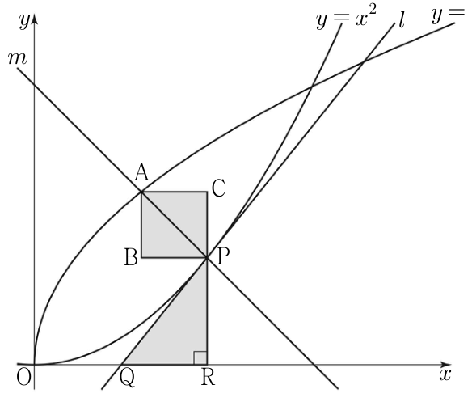
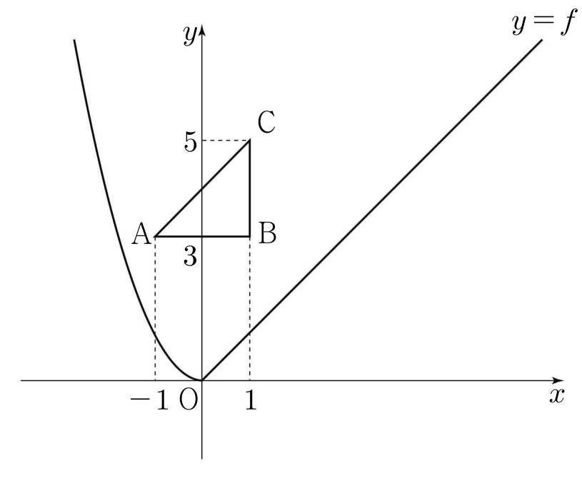
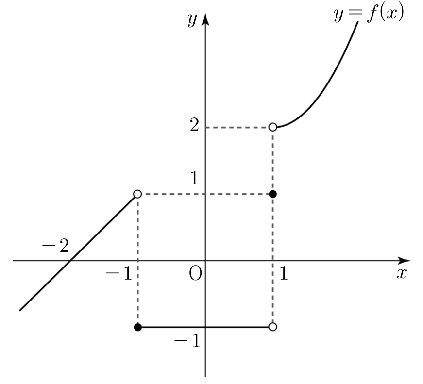
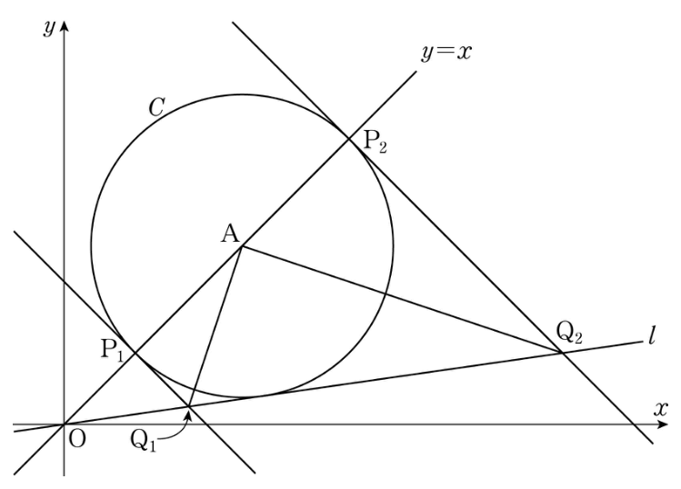

원본 (내부용)점 $(0,3)$에서 원 $x^{2} +y^{2} =1$에 그은 접선이 $x$축과 만나는 점의 $x$좌표를 $k$라 할 때, $16k^{2}$의 값을 구하시오. [3점]
원본 정답 18
원본 풀이 (내부용)[출제의도] 원의 접선의 방정식을 이해하여 점의 좌표를 구한다.
점 \((0,3)\)을 지나고 원 \(x^2+y^2=1\)에 접하는 직선의 기울기를 \(m\)이라 하면 접선의 방정식은
\(
y=mx+3,\qquad\text{즉 }mx-y+3=0.
\)
원의 중심 \((0,0)\)에서 직선 \(mx-y+3=0\)까지의 거리는 원의 반지름의 길이와 같으므로
\(
\frac{|m\times0-0+3|}{\sqrt{m^2+1}}=1,
\qquad 3=\sqrt{m^2+1},
\qquad m^2=8.
\)
\(
m=2\sqrt2,\qquad m=-2\sqrt2.
\)
(i) \(m=2\sqrt2\)일 때 접선의 방정식이 \(y=2\sqrt2x+3\)이므로 \(x\)축과 만나는 점의 \(x\)좌표 \(k\)는
\(
k=-\frac{3}{2\sqrt2},\qquad k^2=\frac98.
\)
(ii) \(m=-2\sqrt2\)일 때 접선의 방정식이 \(y=-2\sqrt2x+3\)이므로 \(x\)축과 만나는 점의 \(x\)좌표는
\(
k=\frac{3}{2\sqrt2},\qquad k^2=\frac98.
\)
(i), (ii)에서
\(
16k^2=16\times\frac98=18.
\)
---
## 답안 및 해설
**25번 해설 이어짐**
생성기 숫자판 1/6 · G2M8-06#7점 $\left(0,\ 10\right)$에서 원 $x^{2}+y^{2}=4$에 그은 접선이 $x$축과 만나는 점의 $x$좌표를 $k$라 할 때, $6k^{2}$의 값을 구하세요.
정답$25$ 접선의 방정식을 $y=mx+10$이라 하면 원의 중심 $\left(0,\ 0\right)$과 접선 사이의 거리가 $2$이므로 $\frac{10}{\sqrt{m^{2}+1}}=2$ $m^{2}+1=25$, $m^{2}=24$ 접선이 $x$축과 만나는 점의 $x$좌표는 $k=-\frac{10}{m}$이므로 $k^{2}=\frac{100}{m^{2}}=\frac{25}{6}$ 따라서 $6k^{2}=6\times \frac{25}{6}=25$
숫자: 원본 0 3 1 16 2 → 쌍둥이 0 10 4 6 · 같은 수: 0
생성기 숫자판 2/6 · G2M8-06#7점 $\left(0,\ 3\right)$에서 원 $x^{2}+y^{2}=4$에 그은 접선이 $x$축과 만나는 점의 $x$좌표를 $k$라 할 때, $5k^{2}$의 값을 구하세요.
정답$36$ 접선의 방정식을 $y=mx+3$이라 하면 원의 중심 $\left(0,\ 0\right)$과 접선 사이의 거리가 $2$이므로 $\frac{3}{\sqrt{m^{2}+1}}=2$ $m^{2}+1=\frac{9}{4}$, $m^{2}=\frac{5}{4}$ 접선이 $x$축과 만나는 점의 $x$좌표는 $k=-\frac{3}{m}$이므로 $k^{2}=\frac{9}{m^{2}}=\frac{36}{5}$ 따라서 $5k^{2}=5\times \frac{36}{5}=36$
숫자: 원본 0 3 1 16 2 → 쌍둥이 0 3 4 5 · 같은 수: 0 3
생성기 숫자판 3/6 · G2M8-06#7점 $\left(0,\ 8\right)$에서 원 $x^{2}+y^{2}=1$에 그은 접선이 $x$축과 만나는 점의 $x$좌표를 $k$라 할 때, $63k^{2}$의 값을 구하세요.
정답$64$ 접선의 방정식을 $y=mx+8$이라 하면 원의 중심 $\left(0,\ 0\right)$과 접선 사이의 거리가 $1$이므로 $\frac{8}{\sqrt{m^{2}+1}}=1$ $m^{2}+1=64$, $m^{2}=63$ 접선이 $x$축과 만나는 점의 $x$좌표는 $k=-\frac{8}{m}$이므로 $k^{2}=\frac{64}{m^{2}}=\frac{64}{63}$ 따라서 $63k^{2}=63\times \frac{64}{63}=64$
숫자: 원본 0 3 1 16 2 → 쌍둥이 0 8 1 63 · 같은 수: 0 1
생성기 숫자판 4/6 · G2M8-06#7점 $\left(0,\ 10\right)$에서 원 $x^{2}+y^{2}=25$에 그은 접선이 $x$축과 만나는 점의 $x$좌표를 $k$라 할 때, $3k^{2}$의 값을 구하세요.
정답$100$ 접선의 방정식을 $y=mx+10$이라 하면 원의 중심 $\left(0,\ 0\right)$과 접선 사이의 거리가 $5$이므로 $\frac{10}{\sqrt{m^{2}+1}}=5$ $m^{2}+1=4$, $m^{2}=3$ 접선이 $x$축과 만나는 점의 $x$좌표는 $k=-\frac{10}{m}$이므로 $k^{2}=\frac{100}{m^{2}}=\frac{100}{3}$ 따라서 $3k^{2}=3\times \frac{100}{3}=100$
숫자: 원본 0 3 1 16 2 → 쌍둥이 0 10 25 3 · 같은 수: 0 3
생성기 숫자판 5/6 · G2M8-06#7점 $\left(0,\ 10\right)$에서 원 $x^{2}+y^{2}=1$에 그은 접선이 $x$축과 만나는 점의 $x$좌표를 $k$라 할 때, $99k^{2}$의 값을 구하세요.
정답$100$ 접선의 방정식을 $y=mx+10$이라 하면 원의 중심 $\left(0,\ 0\right)$과 접선 사이의 거리가 $1$이므로 $\frac{10}{\sqrt{m^{2}+1}}=1$ $m^{2}+1=100$, $m^{2}=99$ 접선이 $x$축과 만나는 점의 $x$좌표는 $k=-\frac{10}{m}$이므로 $k^{2}=\frac{100}{m^{2}}=\frac{100}{99}$ 따라서 $99k^{2}=99\times \frac{100}{99}=100$
숫자: 원본 0 3 1 16 2 → 쌍둥이 0 10 1 99 · 같은 수: 0 1
생성기 숫자판 6/6 · G2M8-06#7점 $\left(0,\ 11\right)$에서 원 $x^{2}+y^{2}=1$에 그은 접선이 $x$축과 만나는 점의 $x$좌표를 $k$라 할 때, $120k^{2}$의 값을 구하세요.
정답$121$ 접선의 방정식을 $y=mx+11$이라 하면 원의 중심 $\left(0,\ 0\right)$과 접선 사이의 거리가 $1$이므로 $\frac{11}{\sqrt{m^{2}+1}}=1$ $m^{2}+1=121$, $m^{2}=120$ 접선이 $x$축과 만나는 점의 $x$좌표는 $k=-\frac{11}{m}$이므로 $k^{2}=\frac{121}{m^{2}}=\frac{121}{120}$ 따라서 $120k^{2}=120\times \frac{121}{120}=121$
숫자: 원본 0 3 1 16 2 → 쌍둥이 0 11 1 120 · 같은 수: 0 1
2. 2018년 9월 가형 7번 · 3점 · 수학Ⅱ 미분 · G2M6-02#3
원본 (내부용)함수 $f ( x ) =$ $\begin{cases} & \begin{aligned} \\ \end{aligned} \\ & \end{cases}$ $2x^{2} +ax$ $( x<2 )$ $4x+b$ $( x \ge 2 )$ 가 실수 전체의 집합에서 미분가능할 때, $ab$의 값은? $($단, $a$와 $b$는 상수이다.$)$ [$3$점]
① $24$② $26$③ $28$④ $30$⑤ $32$
원본 정답 ⑤
원본 풀이 (내부용)[출제의도] 함수의 미분가능성 이해하기
함수 \(f(x)\)가 \(x=2\)에서 연속이므로
\(
\lim_{x\to2-}f(x)=\lim_{x\to2+}f(x)=f(2)
\)
\(
8+2a=8+b,\qquad b=2a
\)
함수 \(f(x)\)가 \(x=2\)에서 미분가능하므로
i)
\(
\begin{aligned}
\lim_{x\to2-}\frac{f(x)-f(2)}{x-2}
&=\lim_{x\to2-}\frac{2x^2+ax-(8+b)}{x-2}\\
&=\lim_{x\to2-}\frac{2x^2+ax-(8+2a)}{x-2}\\
&=8+a
\end{aligned}
\)
ii)
\(
\begin{aligned}
\lim_{x\to2+}\frac{f(x)-f(2)}{x-2}
&=\lim_{x\to2+}\frac{4x+b-(8+b)}{x-2}\\
&=4
\end{aligned}
\)
i), ii)에 의하여
\(
8+a=4,\qquad a=-4
\)
따라서
\(
b=-8,\qquad ab=32
\)
생성기 숫자판 1/6 · G2M6-02#3함수 $f\left(x\right)=\begin{cases}x^{3}-ax+2b & \left(x<-1\right)\\5x+b & \left(x\ge -1\right)\end{cases}$가 실수 전체의 집합에서 미분가능할 때, $ab$의 값으로 옳은 것을 고르세요. (단, $a$와 $b$는 상수입니다.)
원본 (내부용)함수 $f ( x ) =x ( x+1 ) ( x-2 )$에서 $x$의 값이 $-2$에서 $0$까지 변할 때의 평균변화율과 $x$의 값이 $0$에서 $a$까지 변할 때의 평균변화율이 서로 같을 때, 양수 $a$의 값은? [$3$점]
① $1$② $2$③ $3$④ $4$⑤ $5$
원본 정답 ③
원본 풀이 (내부용)[출제의도] 평균변화율을 이해하기
\(
\frac{0-(-8)}{0-(-2)}
=\frac{a(a+1)(a-2)-0}{a-0}
\)
\(a>0\)이므로
\(
(a+1)(a-2)=4
\)
\(
(a+2)(a-3)=0
\)
따라서
\(
a=3
\)
생성기 숫자판 1/6 · G2M8-07#2함수 $f\left(x\right)=x\left(x+2\right)\left(x-1\right)$에서 $x$의 값이 $-3$에서 $0$까지 변할 때의 평균변화율과 $x$의 값이 $0$에서 $a$까지 변할 때의 평균변화율이 서로 같을 때, 양수 $a$의 값으로 옳은 것을 고르세요.
① $1$② $2$③ $3$④ $4$⑤ $5$
정답② $2$ $x$의 값이 $-3$에서 $0$까지 변할 때의 평균변화율은 $\frac{f\left(0\right)-f\left(-3\right)}{0-\left(-3\right)}=\frac{0-\left(-12\right)}{3}=4$ $x$의 값이 $0$에서 $a$까지 변할 때의 평균변화율은 $\frac{f\left(a\right)-f\left(0\right)}{a}=\left(a+2\right)\left(a-1\right)$ $\left(a+2\right)\left(a-1\right)=4$에서 $a^{2}+a-6=0$, $\left(a+3\right)\left(a-2\right)=0$ $a>0$이므로 $a=2$
생성기 숫자판 2/6 · G2M8-07#2함수 $f\left(x\right)=x\left(x+1\right)\left(x-3\right)$에서 $x$의 값이 $-2$에서 $0$까지 변할 때의 평균변화율과 $x$의 값이 $0$에서 $a$까지 변할 때의 평균변화율이 서로 같을 때, 양수 $a$의 값으로 옳은 것을 고르세요.
① $3$② $4$③ $5$④ $6$⑤ $7$
정답② $4$ $x$의 값이 $-2$에서 $0$까지 변할 때의 평균변화율은 $\frac{f\left(0\right)-f\left(-2\right)}{0-\left(-2\right)}=\frac{0-\left(-10\right)}{2}=5$ $x$의 값이 $0$에서 $a$까지 변할 때의 평균변화율은 $\frac{f\left(a\right)-f\left(0\right)}{a}=\left(a+1\right)\left(a-3\right)$ $\left(a+1\right)\left(a-3\right)=5$에서 $a^{2}-2a-8=0$, $\left(a+2\right)\left(a-4\right)=0$ $a>0$이므로 $a=4$
생성기 숫자판 3/6 · G2M8-07#2함수 $f\left(x\right)=x\left(x+12\right)\left(x-25\right)$에서 $x$의 값이 $-12$에서 $0$까지 변할 때의 평균변화율과 $x$의 값이 $0$에서 $a$까지 변할 때의 평균변화율이 서로 같을 때, 양수 $a$의 값으로 옳은 것을 고르세요.
① $24$② $25$③ $26$④ $27$⑤ $28$
정답② $25$ $\frac{f(0)-f(-12)}{0-(-12)}=\frac{0-0}{12}=0$ $\frac{f(a)-f(0)}{a}=(a+12)(a-25)$ $(a+-12)(a-25)=0$에서 $a=--12$ 또는 $a=25$ $a>0$이므로 $a=25$
숫자: 원본 1 2 2 0 0 3 → 쌍둥이 12 25 12 0 0 · 같은 수: 0
생성기 숫자판 4/6 · G2M8-07#2함수 $f\left(x\right)=x\left(x+2\right)\left(x-3\right)$에서 $x$의 값이 $-3$에서 $0$까지 변할 때의 평균변화율과 $x$의 값이 $0$에서 $a$까지 변할 때의 평균변화율이 서로 같을 때, 양수 $a$의 값으로 옳은 것을 고르세요.
① $2$② $3$③ $4$④ $5$⑤ $6$
정답③ $4$ $x$의 값이 $-3$에서 $0$까지 변할 때의 평균변화율은 $\frac{f\left(0\right)-f\left(-3\right)}{0-\left(-3\right)}=\frac{0-\left(-18\right)}{3}=6$ $x$의 값이 $0$에서 $a$까지 변할 때의 평균변화율은 $\frac{f\left(a\right)-f\left(0\right)}{a}=\left(a+2\right)\left(a-3\right)$ $\left(a+2\right)\left(a-3\right)=6$에서 $a^{2}-a-12=0$, $\left(a+3\right)\left(a-4\right)=0$ $a>0$이므로 $a=4$
숫자: 원본 1 2 2 0 0 3 → 쌍둥이 2 3 3 0 0 · 같은 수: 0 2 3
생성기 숫자판 5/6 · G2M8-07#2함수 $f\left(x\right)=x\left(x+7\right)\left(x-15\right)$에서 $x$의 값이 $-7$에서 $0$까지 변할 때의 평균변화율과 $x$의 값이 $0$에서 $a$까지 변할 때의 평균변화율이 서로 같을 때, 양수 $a$의 값으로 옳은 것을 고르세요.
① $14$② $15$③ $16$④ $17$⑤ $18$
정답② $15$ $\frac{f(0)-f(-7)}{0-(-7)}=\frac{0-0}{7}=0$ $\frac{f(a)-f(0)}{a}=(a+7)(a-15)$ $(a+-7)(a-15)=0$에서 $a=--7$ 또는 $a=15$ $a>0$이므로 $a=15$
숫자: 원본 1 2 2 0 0 3 → 쌍둥이 7 15 7 0 0 · 같은 수: 0
생성기 숫자판 6/6 · G2M8-07#2함수 $f\left(x\right)=x\left(x+1\right)\left(x-3\right)$에서 $x$의 값이 $-3$에서 $0$까지 변할 때의 평균변화율과 $x$의 값이 $0$에서 $a$까지 변할 때의 평균변화율이 서로 같을 때, 양수 $a$의 값으로 옳은 것을 고르세요.
① $5$② $6$③ $7$④ $8$⑤ $9$
정답① $5$ $x$의 값이 $-3$에서 $0$까지 변할 때의 평균변화율은 $\frac{f\left(0\right)-f\left(-3\right)}{0-\left(-3\right)}=\frac{0-\left(-36\right)}{3}=12$ $x$의 값이 $0$에서 $a$까지 변할 때의 평균변화율은 $\frac{f\left(a\right)-f\left(0\right)}{a}=\left(a+1\right)\left(a-3\right)$ $\left(a+1\right)\left(a-3\right)=12$에서 $a^{2}-2a-15=0$, $\left(a+3\right)\left(a-5\right)=0$ $a>0$이므로 $a=5$
숫자: 원본 1 2 2 0 0 3 → 쌍둥이 1 3 3 0 0 · 같은 수: 0 1 3
4. 2018년 9월 가형 13번 · 3점 · 수학Ⅱ 미분 · G2M6-02#6
원본 (내부용)다항함수 $f ( x )$가 모든 실수 $x$에 대하여 $f ( x+1 ) -f(1)=x^{3} +13x^{2} +26x$ 를 만족시킬 때, $f ' (1)$의 값은? [$3$점]
① $26$② $30$③ $34$④ $38$⑤ $42$
원본 정답 ①
원본 풀이 (내부용)[출제의도] 미분계수의 정의를 활용하여 수학 내적 문제 해결하기
\(
\begin{aligned}
f'(1)
&=\lim_{h\to0}\frac{f(1+h)-f(1)}h\\
&=\lim_{h\to0}\frac{h^3+13h^2+26h}{h}\\
&=\lim_{h\to0}(h^2+13h+26)=26
\end{aligned}
\)
생성기 숫자판 1/6 · G2M6-02#6다항함수 $f\left(x\right)$가 모든 실수 $x$에 대하여 $f\left(x+3\right)-f\left(3\right)=x^{3}+7x^{2}+15x$를 만족시킬 때, $f'\left(3\right)$의 값으로 옳은 것을 고르세요.
생성기 숫자판 2/6 · G2M6-02#6다항함수 $f\left(x\right)$가 모든 실수 $x$에 대하여 $f\left(x+1\right)-f\left(1\right)=x^{3}+8x^{2}+14x$를 만족시킬 때, $f'\left(1\right)$의 값으로 옳은 것을 고르세요.
생성기 숫자판 3/6 · G2M6-02#6다항함수 $f\left(x\right)$가 모든 실수 $x$에 대하여 $f\left(x+2\right)-f\left(2\right)=x^{3}+3x^{2}+32x$를 만족시킬 때, $f'\left(2\right)$의 값으로 옳은 것을 고르세요.
생성기 숫자판 4/6 · G2M6-02#6다항함수 $f\left(x\right)$가 모든 실수 $x$에 대하여 $f\left(x+3\right)-f\left(3\right)=x^{3}+8x^{2}+11x$를 만족시킬 때, $f'\left(3\right)$의 값으로 옳은 것을 고르세요.
생성기 숫자판 5/6 · G2M6-02#6다항함수 $f\left(x\right)$가 모든 실수 $x$에 대하여 $f\left(x+2\right)-f\left(2\right)=x^{3}+12x^{2}+22x$를 만족시킬 때, $f'\left(2\right)$의 값으로 옳은 것을 고르세요.
생성기 숫자판 6/6 · G2M6-02#6다항함수 $f\left(x\right)$가 모든 실수 $x$에 대하여 $f\left(x+1\right)-f\left(1\right)=x^{3}+3x^{2}+9x$를 만족시킬 때, $f'\left(1\right)$의 값으로 옳은 것을 고르세요.
원본 (내부용)최고차항의 계수의 부호가 서로 다른 두 삼차다항식 $f ( x )$, $g ( x )$가 $| f ( x ) | =$ $\begin{cases} & \\ \begin{aligned} \\ \end{aligned} & \end{cases}$ $g ( x )$$-4x-26$ $( x \le a )$ $g ( x )$$+$$2x^{3} -14x^{2} +12x+6$ $( x>a )$ 를 만족시킬 때, 방정식 $f ( x ) +a ( x-k )^{2} =0$이 서로 다른 세 실근을 갖도록 하는 모든 자연수 $k$의 값의 합을 구하시오. $($단, $a$는 상수이다.$)$ [$4$점] * 확인 사항 ◦답안지의 해당란에 필요한 내용을 정확히 기입(표기)했는지 확인하시오.
원본 정답 11
원본 풀이 (내부용)[출제의도] 미분의 성질을 활용하여 수학 내적 문제 해결하기
두 다항식 \(P_1(x),P_2(x)\)를
\(
P_1(x)=g(x)-4x-26,
\)
\(
P_2(x)=g(x)+2x^3-14x^2+12x+6
\)
이라 하면
\(
P_1(x)=-P_2(x)
\)
즉,
\(
P_1(x)+P_2(x)=0
\)
이므로
\(
g(x)=-x^3+7x^2-4x+10
\)
\(
|f(x)|=
\begin{cases}
-(x^3-7x^2+8x+16)&(x\le a)\\
x^3-7x^2+8x+16&(x>a)
\end{cases}
\)
\(g(x)\)의 최고차항의 계수가 음수이므로
\(
f(x)=x^3-7x^2+8x+16=(x+1)(x-4)^2
\)
이고 \(a=-1\)이다.
함수
\(
h(x)=f(x)-(x-k)^2
\)
라 하면 함수 \(h(x)\)의 극값이 존재해야 하므로 방정식
\(
h'(x)=3x^2-16x+(8+2k)=0
\)
에서 판별식을 \(D\)라 하면
\(
D/4=64-3(8+2k)>0
\)
\(
k<\frac{20}{3}
\)
이므로 \(k\)는 6 이하의 자연수이다.
i) \(k=1,2,3,5\)일 때
\(
h(-1)=-(k+1)^2<0
\)
\(
h(1)=18-(1-k)^2>0
\)
\(
h(4)=-(4-k)^2<0
\)
\(
h(6)=28-(6-k)^2>0
\)
사잇값 정리에 의하여 삼차방정식 \(h(x)=0\)의 실근이 열린 구간 \((-1,1),(1,4),(4,6)\)에 각각 하나씩 존재한다.
ii) \(k=4\)일 때
\(
h(x)=(x+1)(x-4)^2-(x-4)^2=x(x-4)^2
\)
이므로 함수 \(h(x)\)의 그래프가 \(x\)축과 서로 다른 두 점에서 만난다.
iii) \(k=6\)일 때, 극댓값
\(
h(2)=-4<0
\)
이므로 함수 \(h(x)\)의 그래프가 \(x\)축과 한 점에서 만난다.
i), ii), iii)에 의하여 함수 \(h(x)\)의 그래프가 \(x\)축과 서로 다른 세 점에서 만나도록 하는 자연수 \(k\)의 값은 \(1,2,3,5\)이다.
따라서 구하는 모든 자연수 \(k\)의 값의 합은 11.
쌍둥이 1/5 · 4점 쌍둥이최고차항 계수의 부호가 서로 다른 두 삼차다항식 $f(x)$, $g(x)$가 $|f(x)|=\begin{cases} g(x)-5x-7 & (x\le -1)\\ g(x)+6x^3-114x^2+475x+593 & (x>-1)\end{cases}$를 만족시킵니다. 방정식 $f(x)-(x-k)^2=0$이 서로 다른 세 실근을 갖도록 하는 가능한 자연수 $k$의 최댓값을 구하세요.
정답$27$ 최고차항 계수의 부호가 서로 반대이므로 경계 왼쪽에서는 $|f|=-f$, 오른쪽에서는 $|f|=f$입니다. 두 식을 맞추면 $2f(x)=6x^3-114x^2+480x+600=6(x-10)^2(x+1)$이므로 $f(x)=3(x-10)^2(x+1)$입니다. $f(x)<0$인 범위가 $x<-1$이므로 $a=-1$입니다. 방정식은 $3x^3-58x^2+(240+2k)x+(300-k^2)=0$이고 판별식은 $\Delta=-3(k-10)^2(k+22)*(81k-2218)$입니다. $k$는 자연수이고 $k+22>0$이므로 $\Delta>0$은 $81k<2218$, $k\ne10$일 때입니다. 이때 가능한 자연수의 최댓값은 $27$입니다.
쌍둥이 2/5 · 4점 쌍둥이최고차항 계수의 부호가 서로 다른 두 삼차다항식 $f(x)$, $g(x)$가 $|f(x)|=\begin{cases} g(x)-5x-7 & (x\le -1)\\ g(x)+6x^3-30x^2+13x+47 & (x>-1)\end{cases}$를 만족시킵니다. 방정식 $f(x)-(x-k)^2=0$이 서로 다른 세 실근을 갖도록 하는 모든 자연수 $k$의 값의 합을 구하세요.
정답$12$ 최고차항 계수의 부호가 서로 반대이므로 경계 왼쪽에서는 $|f|=-f$, 오른쪽에서는 $|f|=f$입니다. 두 식을 맞추면 $2f(x)=6x^3-30x^2+18x+54=6(x-3)^2(x+1)$이므로 $f(x)=3(x-3)^2(x+1)$입니다. $f(x)<0$인 범위가 $x<-1$이므로 경계는 $-1$입니다. 판별식은 $\Delta=-3(k-3)^2(81k^2-58k-2491)$입니다. 이차식 $81k^2-58k-2491$의 양의 근은 5와 6 사이에 있고, 음의 근은 음수입니다. 따라서 $\Delta>0$인 자연수 $k$는 1, 2, 4, 5이며, $k=3$에서는 판별식이 0입니다. 가능한 자연수 $k$의 합은 $12$입니다.
쌍둥이 3/5 · 4점 쌍둥이최고차항 계수의 부호가 서로 다른 두 삼차다항식 $f(x)$, $g(x)$가 $|f(x)|=\begin{cases} g(x)-5x-7 & (x\le -1)\\ g(x)+6x^3-42x^2+43x+89 & (x>-1)\end{cases}$를 만족시킵니다. 방정식 $f(x)-(x-k)^2=0$이 서로 다른 세 실근을 갖도록 하는 모든 자연수 $k$의 값의 합을 구하세요.
정답$32$ 최고차항 계수의 부호가 서로 반대이므로 경계 왼쪽에서는 $|f|=-f$, 오른쪽에서는 $|f|=f$입니다. 두 식을 맞추면 $2f(x)=6x^3-42x^2+48x+96=6(x-4)^2(x+1)$이므로 $f(x)=3(x-4)^2(x+1)$입니다. $f(x)<0$인 범위가 $x<-1$이므로 경계는 $-1$입니다. 판별식은 $\Delta=-3(k-4)^2(81k^2-112k-4768)$입니다. 이차식 $81k^2-112k-4768$의 양의 근은 8과 9 사이에 있고, 음의 근은 음수입니다. 따라서 $\Delta>0$인 자연수 $k$는 1, 2, 3, 5, 6, 7, 8이며, $k=4$에서는 판별식이 0입니다. 가능한 자연수 $k$의 합은 $32$입니다.
쌍둥이 4/5 · 4점 쌍둥이최고차항 계수의 부호가 서로 다른 두 삼차다항식 $f(x)$, $g(x)$가 $|f(x)|=\begin{cases} g(x)-5x-7 & (x\le -1)\\ g(x)+6x^3-54x^2+85x+143 & (x>-1)\end{cases}$를 만족시킵니다. 방정식 $f(x)-(x-k)^2=0$이 서로 다른 세 실근을 갖도록 하는 모든 자연수 $k$의 값의 합을 구하세요.
정답$61$ 최고차항 계수의 부호가 서로 반대이므로 경계 왼쪽에서는 $|f|=-f$, 오른쪽에서는 $|f|=f$입니다. 두 식을 맞추면 $2f(x)=6x^3-54x^2+90x+150=6(x-5)^2(x+1)$이므로 $f(x)=3(x-5)^2(x+1)$입니다. $f(x)<0$인 범위가 $x<-1$이므로 경계는 $-1$입니다. 판별식은 $\Delta=-3(k-5)^2(81k^2-166k-8131)$입니다. 이차식 $81k^2-166k-8131$의 양의 근은 11과 12 사이에 있고, 음의 근은 음수입니다. 따라서 $\Delta>0$인 자연수 $k$는 1, 2, 3, 4, 6, 7, 8, 9, 10, 11이며, $k=5$에서는 판별식이 0입니다. 가능한 자연수 $k$의 합은 $61$입니다.
쌍둥이 5/5 · 4점 쌍둥이최고차항 계수의 부호가 서로 다른 두 삼차다항식 $f(x)$, $g(x)$가 $|f(x)|=\begin{cases} g(x)-5x-7 & (x\le -1)\\ g(x)+6x^3-66x^2+139x+209 & (x>-1)\end{cases}$를 만족시킵니다. 방정식 $f(x)-(x-k)^2=0$이 서로 다른 세 실근을 갖도록 하는 모든 자연수 $k$의 값의 합을 구하세요.
정답$85$ 최고차항 계수의 부호가 서로 반대이므로 경계 왼쪽에서는 $|f|=-f$, 오른쪽에서는 $|f|=f$입니다. 두 식을 맞추면 $2f(x)=6x^3-66x^2+144x+216=6(x-6)^2(x+1)$이므로 $f(x)=3(x-6)^2(x+1)$입니다. $f(x)<0$인 범위가 $x<-1$이므로 $a=-1$입니다. 방정식은 $3x^3-34x^2+(72+2k)x+(108-k^2)=0$이고 판별식은 $\Delta=-3(k-14)(k-6)^2(81k+914)$입니다. $k$는 자연수이므로 $\Delta>0$은 $1\le k\le13$, $k\ne6$일 때입니다. 따라서 가능한 값의 합은 $(1+\cdots+13)-6=85$입니다.
6. 2018년 9월 나형 19번 · 4점 · 수학Ⅱ 미분 · 4점 쌍둥이 수정됨 — 다시 확인해 주세요 (지난 사유: 원본 식이 이상함)
원본 (내부용)함수 $f ( x ) = \frac{1}{2} x^{2}$에 대하여 실수 전체의 집합에서 정의된 함수 $g ( x )$를 라 할 때, <보기>에서 옳은 것만을 있는 대로 고른 것은? $g ( x ) =$ $\begin{cases} & \\ \begin{aligned} \\ \end{aligned} & \end{cases}$ $f ( x )$ $( f ( x ) \le x )$ $x$ $( f ( x ) >x )$ [$4$점] <보 기> ㄱ. $g ( 1 ) = \frac{1}{2}$ ㄴ. 모든 실수 $x$에 대하여 $g ( x ) \le x$이다. ㄷ. 실수 전체의 집합에서 함수 $g ( x )$가 미분가능하지 않은 점의 개수는 $2$이다.
① ㄱ② ㄷ③ ㄱ, ㄴ④ ㄴ, ㄷ⑤ ㄱ, ㄴ, ㄷ
원본 정답 ⑤
원본 풀이 (내부용)[출제의도] 함수의 미분가능성 이해하기
ㄱ. \(f(1)=\dfrac12\le1\)이므로 \(g(1)=f(1)=\dfrac12\)
ㄴ. (i) \(f(x)\le x\)인 경우 \(g(x)=f(x)\le x\)
(ii) \(f(x)>x\)인 경우 \(g(x)=x\)
(i), (ii)에 의하여 모든 실수 \(x\)에 대하여 \(g(x)\le x\)
ㄷ. 함수 \(y=g(x)\)의 그래프는 다음과 같다.
도식: 그래프의 가로축은 \(x\), 세로축은 \(y\). \(y=g(x)\)의 왼쪽 부분은 원점에서 시작해 \(x<0\)일 때 직선으로 이어지고, \(0<x<2\)에서는 곡선으로 증가해 \((2,2)\)에 이르며, \(x>2\)에서는 직선으로 오른쪽 위로 뻗는다. 점선은 \(x=2\)와 \(y=2\)를 표시한다.
함수 \(g(x)\)는 \(x<0,\ 0<x<2,\ x>2\)에서 미분가능하므로 \(x=0,\ x=2\)에서의 미분가능성을 조사해보면
(i) \(x=0\)일 때,
\(
\lim_{h\to0^-}\frac{g(0+h)-g(0)}h
=\lim_{h\to0^-}\frac{h-0}{h}=1
\)
\(
\lim_{h\to0^+}\frac{g(0+h)-g(0)}h
=\lim_{h\to0^+}\frac{\frac12h^2-0}{h}=0
\)
이므로 함수 \(g(x)\)는 \(x=0\)에서 미분가능하지 않다.
(ii) \(x=2\)일 때,
\(
\lim_{h\to0^-}\frac{g(2+h)-g(2)}h
=\lim_{h\to0^-}\frac{\frac12(2+h)^2-2}{h}=2
\)
\(
\lim_{h\to0^+}\frac{g(2+h)-g(2)}h
=\lim_{h\to0^+}\frac{(2+h)-2}{h}=1
\)
이므로 함수 \(g(x)\)는 \(x=2\)에서 미분가능하지 않다.
따라서 실수 전체의 집합에서 함수 \(g(x)\)가 미분가능하지 않은 점의 개수는 2이다. 그러므로 옳은 것은 ㄱ, ㄴ, ㄷ.
쌍둥이 1/5 · 4점 쌍둥이함수 $f\left(x\right)=\frac{1}{4}x^{2}$에 대하여 실수 전체의 집합에서 정의된 함수 $g\left(x\right)$를 $g\left(x\right)=\begin{cases}f\left(x\right) & \left(f\left(x\right)\le x\right)\\ x & \left(f\left(x\right)>x\right)\end{cases}$라 할 때, <보기>에서 옳은 것만을 있는 대로 고른 것을 고르세요.<br>ㄱ. $g\left(6\right)=9$<br>ㄴ. 모든 실수 $x$에 대하여 $g\left(x\right)\le x$입니다.<br>ㄷ. 함수 $g\left(x\right)$가 미분가능하지 않은 점의 개수는 $2$입니다.
① ㄱ② ㄷ③ ㄱ, ㄴ④ ㄴ, ㄷ⑤ ㄱ, ㄴ, ㄷ
정답④ ㄴ, ㄷ $f\left(x\right)\le x$에서 $\frac{1}{4}x^{2}\le x$, $x\left(x-4\right)\le 0$이므로 $0\le x\le 4$일 때 $g\left(x\right)=f\left(x\right)$, $x<0$ 또는 $x>4$일 때 $g\left(x\right)=x$입니다. ㄱ. $x=6$에서 $f\left(6\right)>6$이므로 $g\left(6\right)=6$ (거짓) ㄴ. $0\le x\le 4$에서 $g\left(x\right)=f\left(x\right)\le x$, 그 밖에서는 $g\left(x\right)=x$ (참) ㄷ. $x=0$에서 좌미분계수 $1$, 우미분계수 $0$이고, $x=4$에서 좌미분계수 $f^{\prime}\left(4\right)=2$, 우미분계수 $1$이므로 미분가능하지 않은 점은 $2$개 (참) 옳은 것은 ㄴ, ㄷ
쌍둥이 2/5 · 4점 쌍둥이함수 $f\left(x\right)=\frac{1}{3}x^{2}$에 대하여 실수 전체의 집합에서 정의된 함수 $g\left(x\right)$를 $g\left(x\right)=\begin{cases}f\left(x\right) & \left(f\left(x\right)\le x\right)\\ x & \left(f\left(x\right)>x\right)\end{cases}$라 할 때, <보기>에서 옳은 것만을 있는 대로 고른 것을 고르세요.<br>ㄱ. $g\left(2\right)=\frac{4}{3}$<br>ㄴ. 모든 실수 $x$에 대하여 $g\left(x\right)\le x$입니다.<br>ㄷ. 함수 $g\left(x\right)$가 미분가능하지 않은 점의 개수는 $2$입니다.
① ㄱ② ㄷ③ ㄱ, ㄴ④ ㄴ, ㄷ⑤ ㄱ, ㄴ, ㄷ
정답⑤ ㄱ, ㄴ, ㄷ $f\left(x\right)\le x$에서 $\frac{1}{3}x^{2}\le x$, $x\left(x-3\right)\le 0$이므로 $0\le x\le 3$일 때 $g\left(x\right)=f\left(x\right)$, $x<0$ 또는 $x>3$일 때 $g\left(x\right)=x$입니다. ㄱ. $0\le 2\le 3$이므로 $g\left(2\right)=f\left(2\right)=\frac{4}{3}$ (참) ㄴ. $0\le x\le 3$에서 $g\left(x\right)=f\left(x\right)\le x$, 그 밖에서는 $g\left(x\right)=x$ (참) ㄷ. $x=0$에서 좌미분계수 $1$, 우미분계수 $0$이고, $x=3$에서 좌미분계수 $f^{\prime}\left(3\right)=2$, 우미분계수 $1$이므로 미분가능하지 않은 점은 $2$개 (참) 옳은 것은 ㄱ, ㄴ, ㄷ
쌍둥이 3/5 · 4점 쌍둥이함수 $f\left(x\right)=\frac{1}{5}x^{2}$에 대하여 실수 전체의 집합에서 정의된 함수 $g\left(x\right)$를 $g\left(x\right)=\begin{cases}f\left(x\right) & \left(f\left(x\right)\le x\right)\\ x & \left(f\left(x\right)>x\right)\end{cases}$라 할 때, <보기>에서 옳은 것만을 있는 대로 고른 것을 고르세요.<br>ㄱ. $g\left(5\right)=5$<br>ㄴ. 모든 실수 $x$에 대하여 $g\left(x\right)\le x$입니다.<br>ㄷ. 함수 $g\left(x\right)$가 미분가능하지 않은 점의 개수는 $3$입니다.
① ㄱ② ㄷ③ ㄱ, ㄴ④ ㄴ, ㄷ⑤ ㄱ, ㄴ, ㄷ
정답③ ㄱ, ㄴ $f\left(x\right)\le x$에서 $\frac{1}{5}x^{2}\le x$, $x\left(x-5\right)\le 0$이므로 $0\le x\le 5$일 때 $g\left(x\right)=f\left(x\right)$, $x<0$ 또는 $x>5$일 때 $g\left(x\right)=x$입니다. ㄱ. $0\le 5\le 5$이므로 $g\left(5\right)=f\left(5\right)=5$ (참) ㄴ. $0\le x\le 5$에서 $g\left(x\right)=f\left(x\right)\le x$, 그 밖에서는 $g\left(x\right)=x$ (참) ㄷ. $x=0$에서 좌미분계수 $1$, 우미분계수 $0$이고, $x=5$에서 좌미분계수 $f^{\prime}\left(5\right)=2$, 우미분계수 $1$이므로 미분가능하지 않은 점은 $2$개 (거짓) 옳은 것은 ㄱ, ㄴ
숫자: 원본 1 2 4 1 1 2 2 → 쌍둥이 1 5 5 5 3 · 같은 수: 1
쌍둥이 4/5 · 4점 쌍둥이함수 $f\left(x\right)=\frac{1}{6}x^{2}$에 대하여 실수 전체의 집합에서 정의된 함수 $g\left(x\right)$를 $g\left(x\right)=\begin{cases}f\left(x\right) & \left(f\left(x\right)\le x\right)\\ x & \left(f\left(x\right)>x\right)\end{cases}$라 할 때, <보기>에서 옳은 것만을 있는 대로 고른 것을 고르세요.<br>ㄱ. $g\left(-2\right)=\frac{2}{3}$<br>ㄴ. 모든 실수 $x$에 대하여 $g\left(x\right)\le x$입니다.<br>ㄷ. 함수 $g\left(x\right)$가 미분가능하지 않은 점의 개수는 $2$입니다.
① ㄱ② ㄷ③ ㄱ, ㄴ④ ㄴ, ㄷ⑤ ㄱ, ㄴ, ㄷ
정답④ ㄴ, ㄷ $f\left(x\right)\le x$에서 $\frac{1}{6}x^{2}\le x$, $x\left(x-6\right)\le 0$이므로 $0\le x\le 6$일 때 $g\left(x\right)=f\left(x\right)$, $x<0$ 또는 $x>6$일 때 $g\left(x\right)=x$입니다. ㄱ. $x=-2$에서 $f\left(-2\right)>-2$이므로 $g\left(-2\right)=-2$ (거짓) ㄴ. $0\le x\le 6$에서 $g\left(x\right)=f\left(x\right)\le x$, 그 밖에서는 $g\left(x\right)=x$ (참) ㄷ. $x=0$에서 좌미분계수 $1$, 우미분계수 $0$이고, $x=6$에서 좌미분계수 $f^{\prime}\left(6\right)=2$, 우미분계수 $1$이므로 미분가능하지 않은 점은 $2$개 (참) 옳은 것은 ㄴ, ㄷ
쌍둥이 5/5 · 4점 쌍둥이함수 $f\left(x\right)=\frac{1}{8}x^{2}$에 대하여 실수 전체의 집합에서 정의된 함수 $g\left(x\right)$를 $g\left(x\right)=\begin{cases}f\left(x\right) & \left(f\left(x\right)\le x\right)\\ x & \left(f\left(x\right)>x\right)\end{cases}$라 할 때, <보기>에서 옳은 것만을 있는 대로 고른 것을 고르세요.<br>ㄱ. $g\left(4\right)=2$<br>ㄴ. 모든 실수 $x$에 대하여 $g\left(x\right)\le x$입니다.<br>ㄷ. 함수 $g\left(x\right)$가 미분가능하지 않은 점의 개수는 $2$입니다.
① ㄱ② ㄷ③ ㄱ, ㄴ④ ㄴ, ㄷ⑤ ㄱ, ㄴ, ㄷ
정답⑤ ㄱ, ㄴ, ㄷ $f\left(x\right)\le x$에서 $\frac{1}{8}x^{2}\le x$, $x\left(x-8\right)\le 0$이므로 $0\le x\le 8$일 때 $g\left(x\right)=f\left(x\right)$, $x<0$ 또는 $x>8$일 때 $g\left(x\right)=x$입니다. ㄱ. $0\le 4\le 8$이므로 $g\left(4\right)=f\left(4\right)=2$ (참) ㄴ. $0\le x\le 8$에서 $g\left(x\right)=f\left(x\right)\le x$, 그 밖에서는 $g\left(x\right)=x$ (참) ㄷ. $x=0$에서 좌미분계수 $1$, 우미분계수 $0$이고, $x=8$에서 좌미분계수 $f^{\prime}\left(8\right)=2$, 우미분계수 $1$이므로 미분가능하지 않은 점은 $2$개 (참) 옳은 것은 ㄱ, ㄴ, ㄷ
원본 (내부용)다항함수 $f ( x )$가 $\lim_{x \to 1} {\frac{f ( x ) -2}{x-1} =12}$ 를 만족시킨다. $g ( x ) = ( x^{2} +1 ) f ( x )$라 할 때, $g ' ( 1 )$의 값을 구하시오. [$4$점]
원본 정답 28
원본 풀이 (내부용)[출제의도] 곱의 미분법을 이용하여 수학 내적 문제 해결하기
\(
\lim_{x\to1}\frac{f(x)-2}{x-1}=12
\)
에서 극한값이 존재하고 \(x\to1\)일 때 분모 \(\to0\)이므로 분자 \(\to0\)
\(
\lim_{x\to1}\{f(x)-2\}=0
\)
에서 \(f(1)=2\)이다.
\(
\lim_{x\to1}\frac{f(x)-2}{x-1}
=\lim_{x\to1}\frac{f(x)-f(1)}{x-1}
=f'(1)=12
\)
\(
g'(x)=2xf(x)+(x^2+1)f'(x)
\)
이므로
\(
g'(1)=2f(1)+2f'(1)=2\times2+2\times12=4+24=28
\)
쌍둥이 1/5 · 4점 쌍둥이다항함수 $f\left(x\right)$가 $\lim_{x\to 1}\frac{f\left(x\right)+2}{x-1}=3$을 만족시킵니다. $g\left(x\right)=x^{3}f\left(x\right)$라 할 때, $g'\left(1\right)$의 값을 구하세요.
쌍둥이 2/5 · 4점 쌍둥이다항함수 $f\left(x\right)$가 $\lim_{x\to 1}\frac{f\left(x\right)-3}{x-1}=5$를 만족시킵니다. $g\left(x\right)=\left(x^{2}+2\right)f\left(x\right)$라 할 때, $g'\left(1\right)$의 값을 구하세요.
쌍둥이 3/5 · 4점 쌍둥이다항함수 $f\left(x\right)$가 $\lim_{x\to 2}\frac{f\left(x\right)-1}{x-2}=4$를 만족시킵니다. $g\left(x\right)=\left(x^{2}-1\right)f\left(x\right)$라 할 때, $g'\left(2\right)$의 값을 구하세요.
원본 (내부용)함수 \( f(x)= \begin{cases} x^3+ax^2+b & (x<2),\\ 4x^2 & (x\ge 2) \end{cases} \) 가 실수 전체의 집합에서 미분가능할 때, \(f(1)\)의 값은? (단, \(a,b\)는 상수이다.) [3점]
① \(4\)② \(5\)③ \(6\)④ \(7\)⑤ \(8\)
원본 정답 ③
원본 풀이 (내부용)[출제의도] 다항함수의 미분가능성 이해하기
함수 \(f(x)\)가 실수 전체의 집합에서 미분가능하므로 \(x=2\)에서 미분가능하다.
(i) \(x=2\)에서 연속
\(
\lim_{x\to2^-}f(x)=\lim_{x\to2^+}f(x)=f(2)\text{에서 }4a+b=8\quad\cdots\quad㉠
\)
(ii) \(x=2\)에서 미분가능
\(
\lim_{x\to2^-}\frac{f(x)-f(2)}{x-2}
=\lim_{x\to2^-}\frac{x^3+ax^2+b-16}{x-2}
\)
\(
=\lim_{x\to2^-}\frac{(x-2)\{x^2+(a+2)x+(2a+4)\}}{x-2}
\)
\(
=\lim_{x\to2^-}\{x^2+(a+2)x+(2a+4)\}=4a+12
\)
\(
\lim_{x\to2^+}\frac{f(x)-f(2)}{x-2}
=\lim_{x\to2^+}\frac{4x^2-16}{x-2}
\)
\(
=\lim_{x\to2^+}\frac{4(x+2)(x-2)}{x-2}
=\lim_{x\to2^+}4(x+2)=16
\)
\(
\lim_{x\to2^-}\frac{f(x)-f(2)}{x-2}
=\lim_{x\to2^+}\frac{f(x)-f(2)}{x-2}\text{에서}
\)
\(
4a+12=16\quad\cdots\quad㉡
\)
㉠, ㉡에 의하여 \(a=1,\ b=4\)
따라서 \(f(1)=6\)
생성기 숫자판 1/6 · G2M8-07#1함수 $f\left(x\right)=\begin{cases}x^{3}+ax^{2}+b & \left(x<2\right)\\ 6x^{2} & \left(x\ge 2\right)\end{cases}$가 실수 전체의 집합에서 미분가능할 때, $f\left(0\right)$의 값으로 옳은 것을 고르세요. (단, $a$, $b$는 상수입니다.)
① $4$② $5$③ $6$④ $7$⑤ $8$
정답① $4$ $x=2$에서 연속이므로 $8+4a+b=24$ $x=2$에서 미분계수가 같아야 하므로 $12+4a=24$ 두 식에서 $a=3$, $b=4$ $f\left(0\right)=0^{3}+3\times 0^{2}+4=4$
숫자: 원본 2 4 2 1 → 쌍둥이 2 6 2 0 · 같은 수: 2
생성기 숫자판 2/6 · G2M8-07#1함수 $f\left(x\right)=\begin{cases}x^{3}+ax^{2}+b & \left(x<2\right)\\ 8x^{2} & \left(x\ge 2\right)\end{cases}$가 실수 전체의 집합에서 미분가능할 때, $f\left(1\right)$의 값으로 옳은 것을 고르세요. (단, $a$, $b$는 상수입니다.)
① $9$② $10$③ $11$④ $12$⑤ $13$
정답② $10$ $x=2$에서 연속이므로 $8+4a+b=32$ $x=2$에서 미분계수가 같아야 하므로 $12+4a=32$ 두 식에서 $a=5$, $b=4$ $f\left(1\right)=1^{3}+5\times 1^{2}+4=10$
숫자: 원본 2 4 2 1 → 쌍둥이 2 8 2 1 · 같은 수: 1 2
생성기 숫자판 3/6 · G2M8-07#1함수 $f\left(x\right)=\begin{cases}x^{3}+ax^{2}+b & \left(x<2\right)\\ 5x^{2} & \left(x\ge 2\right)\end{cases}$가 실수 전체의 집합에서 미분가능할 때, $f\left(1\right)$의 값으로 옳은 것을 고르세요. (단, $a$, $b$는 상수입니다.)
① $3$② $4$③ $5$④ $6$⑤ $7$
정답⑤ $7$ $x=2$에서 연속이므로 $8+4a+b=20$ $x=2$에서 미분계수가 같아야 하므로 $12+4a=20$ 두 식에서 $a=2$, $b=4$ $f\left(1\right)=1^{3}+2\times 1^{2}+4=7$
숫자: 원본 2 4 2 1 → 쌍둥이 2 5 2 1 · 같은 수: 1 2
생성기 숫자판 4/6 · G2M8-07#1함수 $f\left(x\right)=\begin{cases}x^{3}+ax^{2}+b & \left(x<2\right)\\ 6x^{2} & \left(x\ge 2\right)\end{cases}$가 실수 전체의 집합에서 미분가능할 때, $f\left(1\right)$의 값으로 옳은 것을 고르세요. (단, $a$, $b$는 상수입니다.)
① $4$② $5$③ $6$④ $7$⑤ $8$
정답⑤ $8$ $x=2$에서 연속이므로 $8+4a+b=24$ $x=2$에서 미분계수가 같아야 하므로 $12+4a=24$ 두 식에서 $a=3$, $b=4$ $f\left(1\right)=1^{3}+3\times 1^{2}+4=8$
숫자: 원본 2 4 2 1 → 쌍둥이 2 6 2 1 · 같은 수: 1 2
생성기 숫자판 5/6 · G2M8-07#1함수 $f\left(x\right)=\begin{cases}x^{3}+ax^{2}+b & \left(x<2\right)\\ 7x^{2} & \left(x\ge 2\right)\end{cases}$가 실수 전체의 집합에서 미분가능할 때, $f\left(1\right)$의 값으로 옳은 것을 고르세요. (단, $a$, $b$는 상수입니다.)
① $5$② $6$③ $7$④ $8$⑤ $9$
정답⑤ $9$ $x=2$에서 연속이므로 $8+4a+b=28$ $x=2$에서 미분계수가 같아야 하므로 $12+4a=28$ 두 식에서 $a=4$, $b=4$ $f\left(1\right)=1^{3}+4\times 1^{2}+4=9$
숫자: 원본 2 4 2 1 → 쌍둥이 2 7 2 1 · 같은 수: 1 2
생성기 숫자판 6/6 · G2M8-07#1함수 $f\left(x\right)=\begin{cases}x^{3}+ax^{2}+b & \left(x<2\right)\\ 8x & \left(x\ge 2\right)\end{cases}$가 실수 전체의 집합에서 미분가능할 때, $f\left(0\right)$의 값으로 옳은 것을 고르세요. (단, $a$, $b$는 상수입니다.)
① $9$② $10$③ $11$④ $12$⑤ $13$
정답④ $12$ $x=2$에서 연속이므로 $8+4a+b=16$ $x=2$에서 미분계수가 같아야 하므로 $12+4a=8$ 두 식에서 $a=-1$, $b=12$ $f\left(0\right)=0^{3}-0^{2}+12=12$
숫자: 원본 2 4 2 1 → 쌍둥이 2 8 2 0 · 같은 수: 2
11. 2018년 11월 가형 18번 · 4점 · 수학Ⅱ 미분 · 4점 쌍둥이
원본 (내부용)그림과 같이 곡선 \(y=x^2\) 위의 점 \(P(t,t^2)\ (0<t<1)\)에서의 접선 \(l\)이 \(x\)축과 만나는 점을 \(Q\), 점 \(P\)에서 \(x\)축에 내린 수선의 발을 \(R\)라 할 때, 삼각형 \(PQR\)의 넓이를 \(f(t)\)라 하자. 또한, 점 P를 지나고 기울기가 \(-1\)인 직선 \(m\)이 곡선 \(y=\sqrt{x}\)와 만나는 점을 A라 할 때, 선분 PA를 대각선으로 하는 정사각형 PCAB의 넓이를 \(g(t)\)라 하자. \( \lim_{t\to0^+}\frac{t\times g(t)}{f(t)} \) 의 값은? [4점]

① \(1\)② \(2\)③ \(3\)④ \(4\)⑤ \(5\)
그림·참고 ---
원본 정답 ④
원본 풀이 (내부용)[출제의도] 함수의 극한을 활용하여 문제해결하기
\(R(t,0)\)이고, 점 \(P(t,t^2)\)에서의 접선 \(l\)의 방정식은
\(
y=2t(x-t)+t^2=2tx-t^2
\)
\(x\)절편은 \(\frac t2\)이므로 \(Q\left(\frac t2,0\right)\)
\(
\overline{QR}=\frac t2,\quad\overline{PR}=t^2
\)
따라서 삼각형 PQR의 넓이
\(
f(t)=\frac12\times\overline{QR}\times\overline{PR}
=\frac12\times\frac t2\times t^2=\frac14t^3
\)
\(x>0\)일 때, 두 곡선 \(y=x^2,\ y=\sqrt{x}\)는 직선 \(y=x\)에 대하여 대칭이다.
두 점 P와 A는 각각 두 곡선 위의 점이고, 기울기가 \(-1\)인 직선 위에 있으므로 직선 \(y=x\)에 대하여 대칭이다.
따라서 \(A(t^2,t)\)
한 변의 길이가 \(t-t^2\)인 정사각형 PCAB의 넓이
\(
g(t)=(t-t^2)^2=t^2-2t^3+t^4
\)
따라서
\(
\lim_{t\to0^+}\frac{t\times g(t)}{f(t)}
=\lim_{t\to0^+}\frac{t(t^4-2t^3+t^2)}{\frac14t^3}=4
\)
쌍둥이 1/5 · 4점 쌍둥이곡선 $y=2x^{2}$ 위의 점 $\mathrm{P}\left(t,\ 2t^{2}\right)\ (0<t<\frac{1}{2})$에서의 접선 $l$이 $x$축과 만나는 점을 $\mathrm{Q}$, 점 $\mathrm{P}$에서 $x$축에 내린 수선의 발을 $\mathrm{R}$라 할 때, 삼각형 $\mathrm{PQR}$의 넓이를 $f(t)$라 합니다. 또한 점 $\mathrm{P}$를 지나고 기울기가 $-1$인 직선 $m$이 곡선 $y=\sqrt{\frac{x}{2}}$와 만나는 점을 $\mathrm{A}$라 할 때, 선분 $\mathrm{PA}$를 대각선으로 하는 정사각형 $\mathrm{PCAB}$의 넓이를 $g(t)$라 합니다. $\lim_{t\to0+}\frac{t\times g(t)}{f(t)}$의 값으로 옳은 것을 고르세요.
① $2$② $3$③ $4$④ $5$⑤ $6$
정답① $2$ 접선의 기울기는 $4t$이고 $x$절편은 $\frac{t}{2}$이므로 $\overline{\mathrm{QR}}=\frac{t}{2}$, $f(t)=\frac{1}{2}\times\frac{t}{2}\times2t^{2}=\frac{1}{2}t^{3}$ 두 곡선 $y=2x^{2}$, $y=\sqrt{\frac{x}{2}}$는 직선 $y=x$에 대하여 대칭이고 직선 $m$은 $y=x$에 수직이므로 $\mathrm{A}$는 $\mathrm{P}$의 대칭점 $\left(2t^{2},\ t\right)$ $\overline{\mathrm{PA}}^{2}=2\left(t-2t^{2}\right)^{2}$이므로 $g(t)=\frac{1}{2}\overline{\mathrm{PA}}^{2}=\left(t-2t^{2}\right)^{2}$ $\frac{t\times g(t)}{f(t)}=2\left(1-2t\right)^{2}\to2$
숫자: 원본 0 1 1 0 → 쌍둥이 2 2 0 1 2 1 2 0 · 같은 수: 0 1
쌍둥이 2/5 · 4점 쌍둥이곡선 $y=\frac{x^{2}}{2}$ 위의 점 $\mathrm{P}\left(t,\ \frac{t^{2}}{2}\right)\ (0<t<2)$에서의 접선 $l$이 $x$축과 만나는 점을 $\mathrm{Q}$, 점 $\mathrm{P}$에서 $x$축에 내린 수선의 발을 $\mathrm{R}$라 할 때, 삼각형 $\mathrm{PQR}$의 넓이를 $f(t)$라 합니다. 또한 점 $\mathrm{P}$를 지나고 기울기가 $-1$인 직선 $m$이 곡선 $y=\sqrt{2x}$와 만나는 점을 $\mathrm{A}$라 할 때, 선분 $\mathrm{PA}$를 대각선으로 하는 정사각형 $\mathrm{PCAB}$의 넓이를 $g(t)$라 합니다. $\lim_{t\to0+}\frac{t\times g(t)}{f(t)}$의 값으로 옳은 것을 고르세요.
① $5$② $6$③ $7$④ $8$⑤ $9$
정답④ $8$ 접선의 기울기는 $t$이고 $x$절편은 $\frac{t}{2}$이므로 $\overline{\mathrm{QR}}=\frac{t}{2}$, $f(t)=\frac{1}{2}\times\frac{t}{2}\times\frac{1}{2}t^{2}=\frac{1}{8}t^{3}$ 두 곡선 $y=\frac{x^{2}}{2}$, $y=\sqrt{2x}$는 직선 $y=x$에 대하여 대칭이고 직선 $m$은 $y=x$에 수직이므로 $\mathrm{A}$는 $\mathrm{P}$의 대칭점 $\left(\frac{1}{2}t^{2},\ t\right)$ $\overline{\mathrm{PA}}^{2}=2\left(t-\frac{1}{2}t^{2}\right)^{2}$이므로 $g(t)=\frac{1}{2}\overline{\mathrm{PA}}^{2}=\left(t-\frac{1}{2}t^{2}\right)^{2}$ $\frac{t\times g(t)}{f(t)}=8\left(1-\frac{1}{2}t\right)^{2}\to8$
숫자: 원본 0 1 1 0 → 쌍둥이 2 2 0 2 1 2 0 · 같은 수: 0 1
쌍둥이 3/5 · 4점 쌍둥이곡선 $y=\frac{x^{2}}{3}$ 위의 점 $\mathrm{P}\left(t,\ \frac{t^{2}}{3}\right)\ (0<t<3)$에서의 접선 $l$이 $x$축과 만나는 점을 $\mathrm{Q}$, 점 $\mathrm{P}$에서 $x$축에 내린 수선의 발을 $\mathrm{R}$라 할 때, 삼각형 $\mathrm{PQR}$의 넓이를 $f(t)$라 합니다. 또한 점 $\mathrm{P}$를 지나고 기울기가 $-1$인 직선 $m$이 곡선 $y=\sqrt{3x}$와 만나는 점을 $\mathrm{A}$라 할 때, 선분 $\mathrm{PA}$를 대각선으로 하는 정사각형 $\mathrm{PCAB}$의 넓이를 $g(t)$라 합니다. $\lim_{t\to0+}\frac{t\times g(t)}{f(t)}$의 값으로 옳은 것을 고르세요.
① $8$② $9$③ $10$④ $11$⑤ $12$
정답⑤ $12$ 접선의 기울기는 $\frac{2}{3}t$이고 $x$절편은 $\frac{t}{2}$이므로 $\overline{\mathrm{QR}}=\frac{t}{2}$, $f(t)=\frac{1}{2}\times\frac{t}{2}\times\frac{1}{3}t^{2}=\frac{1}{12}t^{3}$ 두 곡선 $y=\frac{x^{2}}{3}$, $y=\sqrt{3x}$는 직선 $y=x$에 대하여 대칭이고 직선 $m$은 $y=x$에 수직이므로 $\mathrm{A}$는 $\mathrm{P}$의 대칭점 $\left(\frac{1}{3}t^{2},\ t\right)$ $\overline{\mathrm{PA}}^{2}=2\left(t-\frac{1}{3}t^{2}\right)^{2}$이므로 $g(t)=\frac{1}{2}\overline{\mathrm{PA}}^{2}=\left(t-\frac{1}{3}t^{2}\right)^{2}$ $\frac{t\times g(t)}{f(t)}=12\left(1-\frac{1}{3}t\right)^{2}\to12$
숫자: 원본 0 1 1 0 → 쌍둥이 3 3 0 3 1 3 0 · 같은 수: 0 1
쌍둥이 4/5 · 4점 쌍둥이곡선 $y=\frac{x^2}{3}$ 위의 점 $P(t,t^2/3)$ ($0<t<3$)에서의 접선이 $x$축과 만나는 점을 $Q$, $P$에서 $x$축에 내린 수선의 발을 $R$라 하고 $[PQR]=f(t)$라 합니다. $P$를 지나고 기울기가 $-1$인 직선이 $y=\sqrt{3x}$와 만나는 점을 $A$라 하고, 대각선이 $PA$인 정사각형의 넓이를 $g(t)$라 합니다. $\lim_{t\to0+}t g(t)/f(t)$를 구하세요.
쌍둥이 5/5 · 4점 쌍둥이곡선 $y=4x^2$ 위의 점 $P(t,4t^2)$ ($0<t<1/4$)에서의 접선이 $x$축과 만나는 점을 $Q$, $P$에서 $x$축에 내린 수선의 발을 $R$라 하고 $[PQR]=f(t)$라 합니다. $P$를 지나고 기울기가 $-1$인 직선이 $y=\sqrt{x/4}$와 만나는 점을 $A$라 하고, 대각선이 $PA$인 정사각형의 넓이를 $g(t)$라 합니다. $\lim_{t\to0+}t g(t)/f(t)$를 구하세요.
원본 (내부용)양수 \(k\)에 대하여 함수 \( f(x)=2kx^3-3(3k+1)x^2+18x-2 \) 가 닫힌 구간 \([0,3]\)에서 최댓값 \(12\)를 가질 때, \(k\)의 값을 구하는 과정이다. 함수 \(f(x)\)에서 \( f'(x)=6kx^2-6(3k+1)x+18=6(kx-1)(x-3) \) \( k=\boxed{(\text{가})} \) 인 경우를 제외하고 함수 \(f(x)\)는 실수 전체의 집합에서 극댓값과 극솟값을 모두 가지므로 \( \text{(i) }0<k\le\boxed{(\text{가})}\text{일 때,} \) \( 0<x<3\text{에서 }f'(x)>0\text{이므로 함수 }f(x)\text{는 증가한다.} \) 따라서 닫힌 구간 \([0,3]\)에서 함수 \(f(x)\)의 최댓값은 \(\boxed{(\text{나})}\text{이다. 그러나 }\boxed{(\text{나})}=12\text{를 만족하는 }k\text{의 값은 }0<k\le\boxed{(\text{가})}\text{에 존재하지 않는다.} \) \( \text{(ii) }k>\boxed{(\text{가})}\text{일 때,} \) 닫힌 구간 \([0,3]\)에서 함수 \(f(x)\)의 증가와 감소를 표로 나타내면 다음과 같다. | \(x\) | \(0\) | \(\cdots\) | \(\frac1k\) | \(\cdots\) | \(3\) | |---|---:|:---:|---:|:---:|---:| | \(f'(x)\) | \(+\) | \(+\) | \(0\) | \(-\) | \(0\) | | \(f(x)\) | | \(\nearrow\) | 극대 | \(\searrow\) | | 따라서 함수 \(f(x)\)는 \(x=\frac1k\)에서 극대이면서 최대이다. \( \text{(i), (ii)에 의하여 함수 }f(x)\text{가 닫힌 구간 }[0,3]\text{에서 최댓값 }12\text{를 가질 때, }k=\boxed{(\text{다})}\text{이다.} \) 위의 (가), (다)에 알맞은 수를 각각 \(a,b\)라 하고, (나)에 알맞은 식을 \(g(k)\)라 할 때, \( \frac{g(a)}b \) 의 값은? [4점]
① \(24\)② \(26\)③ \(28\)④ \(30\)⑤ \(32\)
원본 정답 ⑤
원본 풀이 (내부용)[출제의도] 다항함수의 성질을 활용하여 추론하기
함수 \(f(x)\)에서
\(
f'(x)=6kx^2-6(3k+1)x+18
\)
\(
=6(kx-1)(x-3)
\)
\(
=6k\left(x-\frac1k\right)(x-3)
\)
\(\frac1k=3\)인 경우 \(f'(x)=2(x-3)^2\ge0\)이므로 함수 \(f(x)\)는 실수 전체의 집합에서 증가한다. 따라서 \(k=\frac13\)인 경우를 제외하고 함수 \(f(x)\)는 실수 전체의 집합에서 극댓값과 극솟값을 모두 가지므로
(i) \(0<k\le\frac13\)일 때,
\(0<x<3\)에서 \(f'(x)>0\)이므로 함수 \(f(x)\)는 증가한다. 따라서 닫힌 구간 \([0,3]\)에서 함수 \(f(x)\)의 최댓값이 \(f(3)=-27k+25\)이다. 그러나
\(
-27k+25=12\text{를 만족하는 }k=\frac{13}{27}\text{이므로}
\)
\(
0<k\le\frac13\text{에 존재하지 않는다.}
\)
(ii) \(k>\frac13\)일 때,
닫힌 구간 \([0,3]\)에서 함수 \(f(x)\)의 증가와 감소를 표로 나타내면 다음과 같다.
| \(x\) | 0 | \(\cdots\) | \(\frac1k\) | \(\cdots\) | 3 |
|---|---|---|---|---|---|
| \(f'(x)\) | \(+\) | | 0 | | \(-\) |
| \(f(x)\) | ↗ | | 극대 | ↘ | 0 |
따라서 함수 \(f(x)\)는 \(x=\frac1k\)에서 극대이면서 최대이다.
\(
f\left(\frac1k\right)=\frac{2}{k^2}-\frac{3(3k+1)}{k^2}+\frac{18}{k}-2=12
\)
\(
(7k-1)(2k-1)=0\text{에서 }k>\frac13\text{이므로 }k=\frac12
\)
(i), (ii)에 의하여 함수 \(f(x)\)가 닫힌 구간 \([0,3]\)에서 최댓값 12를 가질 때, \(k=\frac12\)이다.
(가), (다)에 알맞은 수는 각각 \(a=\frac13,\ b=\frac12\)
(나)에 알맞은 식은 \(g(k)=-27k+25\)
따라서 \(\frac{a}{g(b)}=32\)
쌍둥이 1/5 · 4점 쌍둥이다음은 양수 $k$에 대하여 함수 $f(x)=4kx^{3}-6(2k+1)x^{2}+24x-1$이 닫힌구간 $[0,\ 2]$에서 최댓값이 $9$일 때, $k$의 값을 구하는 과정입니다. $f'(x)=12kx^{2}-12(2k+1)x+24=12(kx-1)(x-2)$이므로 $k=\boxed{\text{(가)}}$인 경우를 제외하면 $f(x)$는 극댓값과 극솟값을 모두 갖습니다. (ⅰ) $0<k\le\boxed{\text{(가)}}$일 때, $0<x<2$에서 $f'(x)>0$이므로 $f(x)$는 증가하고, 닫힌구간 $[0,\ 2]$에서 최댓값은 $\boxed{\text{(나)}}$입니다. 그러나 $\boxed{\text{(나)}}=4$인 $k$는 $0<k\le\boxed{\text{(가)}}$에 없습니다. (ⅱ) $k>\boxed{\text{(가)}}$일 때, $f(x)$는 $x=\frac{1}{k}$에서 극대이면서 최대입니다. (ⅰ), (ⅱ)에 의하여 $k=\boxed{\text{(다)}}$입니다. (가), (다)에 알맞은 수를 각각 $a$, $b$라 하고, (나)에 알맞은 식을 $g(k)$라 할 때, $\frac{g(a)}{b}$의 값으로 옳은 것을 고르세요.
① $11$② $13$③ $15$④ $17$⑤ $19$
정답③ $15$ $f'(x)=12(kx-1)(x-2)$에서 $\frac{1}{k}=2$일 때 극값이 없으므로 (가)$=\frac{1}{2}$ (ⅰ) 최댓값은 $f(2)=23-16k$이므로 $g(k)=23-16k$ (ⅱ) $f\left(\frac{1}{k}\right)=-\frac{2}{k^{2}}+\frac{12}{k}-1=9$에서 $\frac{1}{k}=t$로 두면 $t^{2}-6t+5=0$ $t<2$이어야 하므로 $t=1$, 즉 (다)$=1$ $g\left(\frac{1}{2}\right)=15$이므로 $\frac{g(a)}{b}=15\times1$ $=15$
쌍둥이 2/5 · 4점 쌍둥이다음은 양수 $k$에 대하여 함수 $f(x)=4kx^{3}-6(4k+1)x^{2}+48x-5$가 닫힌구간 $[0,\ 4]$에서 최댓값이 $35$일 때, $k$의 값을 구하는 과정입니다. $f'(x)=12kx^{2}-12(4k+1)x+48=12(kx-1)(x-4)$이므로 $k=\boxed{\text{(가)}}$인 경우를 제외하면 $f(x)$는 극댓값과 극솟값을 모두 갖습니다. (ⅰ) $0<k\le\boxed{\text{(가)}}$일 때, $0<x<4$에서 $f'(x)>0$이므로 $f(x)$는 증가하고, 닫힌구간 $[0,\ 4]$에서 최댓값은 $\boxed{\text{(나)}}$입니다. 그러나 $\boxed{\text{(나)}}=15$인 $k$는 $0<k\le\boxed{\text{(가)}}$에 없습니다. (ⅱ) $k>\boxed{\text{(가)}}$일 때, $f(x)$는 $x=\frac{1}{k}$에서 극대이면서 최대입니다. (ⅰ), (ⅱ)에 의하여 $k=\boxed{\text{(다)}}$입니다. (가), (다)에 알맞은 수를 각각 $a$, $b$라 하고, (나)에 알맞은 식을 $g(k)$라 할 때, $\frac{g(a)}{b}$의 값으로 옳은 것을 고르세요.
① $106$② $112$③ $118$④ $124$⑤ $130$
정답③ $118$ $f'(x)=12(kx-1)(x-4)$에서 $\frac{1}{k}=4$일 때 극값이 없으므로 (가)$=\frac{1}{4}$ (ⅰ) 최댓값은 $f(4)=91-128k$이므로 $g(k)=91-128k$ (ⅱ) $f\left(\frac{1}{k}\right)=-\frac{2}{k^{2}}+\frac{24}{k}-5=35$에서 $\frac{1}{k}=t$로 두면 $t^{2}-12t+20=0$ $t<4$이어야 하므로 $t=2$, 즉 (다)$=\frac{1}{2}$ $g\left(\frac{1}{4}\right)=59$이므로 $\frac{g(a)}{b}=59\times2$ $=118$
쌍둥이 3/5 · 4점 쌍둥이다음은 양수 $k$에 대하여 함수 $f(x)=4kx^{3}-6(5k+1)x^{2}+60x-4$가 닫힌구간 $[0,\ 5]$에서 최댓값이 $24$일 때, $k$의 값을 구하는 과정입니다. $f'(x)=12kx^{2}-12(5k+1)x+60=12(kx-1)(x-5)$이므로 $k=\boxed{\text{(가)}}$인 경우를 제외하면 $f(x)$는 극댓값과 극솟값을 모두 갖습니다. (ⅰ) $0<k\le\boxed{\text{(가)}}$일 때, $0<x<5$에서 $f'(x)>0$이므로 $f(x)$는 증가하고, 닫힌구간 $[0,\ 5]$에서 최댓값은 $\boxed{\text{(나)}}$입니다. 그러나 $\boxed{\text{(나)}}=10$인 $k$는 $0<k\le\boxed{\text{(가)}}$에 없습니다. (ⅱ) $k>\boxed{\text{(가)}}$일 때, $f(x)$는 $x=\frac{1}{k}$에서 극대이면서 최대입니다. (ⅰ), (ⅱ)에 의하여 $k=\boxed{\text{(다)}}$입니다. (가), (다)에 알맞은 수를 각각 $a$, $b$라 하고, (나)에 알맞은 식을 $g(k)$라 할 때, $\frac{g(a)}{b}$의 값으로 옳은 것을 고르세요.
① $84$② $90$③ $96$④ $102$⑤ $108$
정답③ $96$ $f'(x)=12(kx-1)(x-5)$에서 $\frac{1}{k}=5$일 때 극값이 없으므로 (가)$=\frac{1}{5}$ (ⅰ) 최댓값은 $f(5)=146-250k$이므로 $g(k)=146-250k$ (ⅱ) $f\left(\frac{1}{k}\right)=-\frac{2}{k^{2}}+\frac{30}{k}-4=24$에서 $\frac{1}{k}=t$로 두면 $t^{2}-15t+14=0$ $t<5$이어야 하므로 $t=1$, 즉 (다)$=1$ $g\left(\frac{1}{5}\right)=96$이므로 $\frac{g(a)}{b}=96\times1$ $=96$
쌍둥이 4/5 · 4점 쌍둥이양수 $k$에 대하여 함수 $f(x)=4kx^3-6(6k+1)x^2+72x+4$의 닫힌구간 $[0,6]$에서의 최댓값이 $38$일 때, 이 최댓값을 갖는 $x$의 값을 구하세요.
① $1$② $2$③ $3$④ $4$⑤ $5$
정답① $1$ $f'(x)=12(kx-1)(x-6)$이다. $k\le\frac16$이면 함수는 $[0,6]$에서 증가하고 $f(6)=220-432k\ge148$이므로 최댓값이 $38$일 수 없다. $k>\frac16$이면 내부 극댓값은 $x=\frac1k$에서 얻고 $4-\frac{2}{k^{2}}+\frac{36}{k}$. 이를 $38$과 같게 하면 $2t^2-36t+34=0$, 즉 $t^2-18t+17=0$이다. $t=1$ 또는 $17$이고, $t<6$에서 $t=1$만 가능하므로 $k=1$이다. 따라서 최댓값을 갖는 점은 $x=1/k=1$이다.
쌍둥이 5/5 · 4점 쌍둥이양수 $k$에 대하여 함수 $f(x)=2kx^3-3(7k+1)x^2+42x+3$의 닫힌구간 $[0,7]$에서의 최댓값이 $57$일 때, 이 최댓값을 갖는 $x$의 값을 구하세요.
① $1$② $2$③ $3$④ $4$⑤ $5$
정답③ $3$ $f'(x)=6(kx-1)(x-7)$이다. $k\le\frac17$이면 함수는 $[0,7]$에서 증가하고 $f(7)=150-343k\ge101$이므로 최댓값이 $57$일 수 없다. $k>\frac17$이면 내부 극댓값은 $x=\frac1k$에서 얻고 $f(1/k)=3+\frac{21k-1}{k^2}$. 이를 $57$과 같게 하면 $54k^2-21k+1=0$, 즉 $k=\frac13$ 또는 $\frac1{18}$이다. 조건 $k>\frac17$에서 $k=\frac13$만 가능하다. 따라서 최댓값을 갖는 점은 $x=1/k=3$이다.
원본 (내부용)두 다항함수 \(f(x),g(x)\)에 대하여 \( f(1)=2,\quad f'(1)=3,\quad g(1)=5,\quad g'(1)=2 \) 일 때, \( \lim_{n\to\infty}n\left\{f\left(1+\frac1n\right)g\left(1+\frac3n\right)-f(1)g(1)\right\} \) 의 값을 구하시오. [4점]
원본 정답 27
원본 풀이 (내부용)[출제의도] 미분계수 이해하기
\(
\frac1n=h\text{라 하면, }n\to\infty\text{일 때 }h\to0^+\text{이다.}
\)
(준식)
\(
=\lim_{h\to0^+}\frac{f(1+h)g(1+3h)-f(1)g(1)}h
\)
\(
=\lim_{h\to0^+}\frac{f(1+h)g(1+3h)-f(1+h)g(1)}h
+\lim_{h\to0^+}\frac{f(1+h)g(1)-f(1)g(1)}h
\)
\(
=3\times\lim_{h\to0^+}
\frac{f(1+h)\{g(1+3h)-g(1)\}}{3h}
+\lim_{h\to0^+}\frac{\{f(1+h)-f(1)\}g(1)}h
\)
\(
=3f(1)g'(1)+f'(1)g(1)=27
\)
쌍둥이 1/5 · 4점 쌍둥이두 다항함수 $f(x),g(x)$에 대하여 $f(7)=-4$, $f\prime(7)=6$, $g(7)=9$, $g\prime(7)=5$일 때, $\lim_{n\to\infty}n\left\{f\left(7+\frac{3}{n}\right)g\left(7+\frac{2}{n}\right)-f(7)g(7)\right\}$의 값을 구하세요.
정답$122$ $n(f(7+3/n)-f(7))g(7+2/n)+nf(7)(g(7+2/n)-g(7))$로 나눈다. 미분계수 정의에 따라 극한값은 $3f\prime(7)g(7)+2f(7)g\prime(7)$이다. 주어진 값을 대입하면 $3\cdot6\cdot9+2\cdot(-4)\cdot5=162-40=122$이다.
쌍둥이 2/5 · 4점 쌍둥이두 다항함수 $f(x),g(x)$에 대하여 $f(8)=7$, $f\prime(8)=6$, $g(8)=9$, $g\prime(8)=5$일 때, $\lim_{n\to\infty}n\left\{f\left(8+\frac{4}{n}\right)g\left(8+\frac{5}{n}\right)-f(8)g(8)\right\}$의 값을 구하세요.
정답$391$ 미분계수 정의와 곱의 전개에 따라 극한은 $4f\prime(8)g(8)+5f(8)g\prime(8)$이다. 값을 대입하면 $4\cdot6\cdot9+5\cdot7\cdot5=216+175=391$이다.
쌍둥이 3/5 · 4점 쌍둥이두 다항함수 $f(x),g(x)$에 대하여 $f(6)=2$, $f\prime(6)=5$, $g(6)=7$, $g\prime(6)=-3$일 때, $\lim_{n\to\infty}n\left\{f\left(6+\frac{2}{n}\right)g\left(6+\frac{4}{n}\right)-f(6)g(6)\right\}$의 값을 구하세요.
정답$46$ $n(f(6+2/n)-f(6))g(6+4/n)+nf(6)(g(6+4/n)-g(6))$으로 나눈다. 미분계수 정의에 따라 극한값은 $2f\prime(6)g(6)+4f(6)g\prime(6)$이다. 주어진 값을 대입하면 $2\cdot5\cdot7+4\cdot2\cdot(-3)=70-24=46$이다.
쌍둥이 4/5 · 4점 쌍둥이두 다항함수 $f(x),g(x)$에 대하여 $f(8)=5$, $f\prime(8)=7$, $g(8)=-6$, $g\prime(8)=4$일 때, $\lim_{n\to\infty}n\left\{f\left(8+\frac{5}{n}\right)g\left(8+\frac{3}{n}\right)-f(8)g(8)\right\}$의 값을 구하세요.
① $-162$② $-156$③ $-150$④ $-144$⑤ $-138$
정답③ $-150$ 극한은 $5f\prime(8)g(8)+3f(8)g\prime(8)$로 정리된다. 값을 대입하면 $5\cdot7\cdot(-6)+3\cdot5\cdot4=-210+60=-150$이다.
쌍둥이 5/5 · 4점 쌍둥이두 다항함수 $f(x)$, $g(x)$에 대하여 $f(-2)=4$, $f\prime(-2)=-2$, $g(-2)=3$, $g\prime(-2)=6$일 때, $\lim_{n\to\infty}n\left\{f\left(-2+\frac{1}{n}\right)g\left(-2+\frac{4}{n}\right)-f(-2)g(-2)\right\}$의 값을 구하세요.
① $78$② $84$③ $90$④ $96$⑤ $102$
정답③ $90$ 다항식의 미분계수 정의에 따라 극한은 $1f\prime(-2)g(-2)+4f(-2)g\prime(-2)$입니다. 주어진 값을 대입하면 $1\times (-2)\times 3+4\times 4\times (6)=90$입니다.
원본 (내부용)3보다 큰 자연수 \(n\)에 대하여 원 \(C:x^2+y^2=n\)이 있다. 삼차함수 \(y=f(x)\)가 \(x=-1\)에서 극대, \(x=1\)에서 극소이고, 두 점 \((-1,f(-1)),\ (1,f(1))\)이 모두 원 \(C\) 위에 있을 때, 그림과 같이 원 \(C\)의 내부는 곡선 \(y=f(x)\)에 의해 네 영역 \(S_1,\ S_2,\ S_3,\ S_4\)로 나누어진다. 각 영역 \(S_k\ (k=1,\ 2,\ 3,\ 4)\)의 내부의 점들 중 \(x\)좌표와 \(y\)좌표가 모두 정수인 점의 개수를 \(g_k(n)\)이라 할 때, \(g_1(n)>g_3(n)\)을 만족시키는 \(n\)의 최솟값은 \(a\)이다. \(a+\{g_1(a)\times g_3(a)\}\)의 값을 구하시오. (단, 각 영역은 경계선을 포함하지 않는다.) [4점] ※ 확인 사항 답안지의 해당란에 필요한 내용을 정확히 기입(표기)했는지 확인하시오.
원본 정답 134
원본 풀이 (내부용)[출제의도] 도함수를 활용하여 추론하기
\(
f'(x)=k(x+1)(x-1)=k(x^2-1)\quad(k>0)\text{라 하면}
\)
\(
f(x)=\frac k3x^3-kx+C_0\quad(\text{단, }C_0\text{는 적분상수})
\)
함수 \(f(x)\)의 극댓값인 점 \((-1,f(-1))\)과 극솟값인 점 \((1,f(1))\)이 원 \(C\) 위에 있으므로 두 점은 원점에 대하여 대칭이다.
\(
f(-1)=-f(1),\quad C_0=0
\)
따라서 함수 \(y=f(x)\)의 그래프는 원점에 대하여 대칭이다.
점 \((-1,f(-1))\)이 원 \(C\) 위에 있으므로
\(
(-1)^2+y^2=n,\quad y=\sqrt{n-1}
\)
\(
f(-1)=\frac k3(-1)^3-k\times(-1)=\frac23k=\sqrt{n-1}
\)
이므로
\(
k=\frac32\sqrt{n-1}
\)
따라서
\(
f(x)=\frac12\sqrt{n-1}(x^3-3x)
\)
원 \(C\)와 함수 \(y=f(x)\)의 그래프는 원점에 대하여 대칭이므로 영역 \(S_2\)와 영역 \(S_3\) 내부에 있는 \(x\)좌표와 \(y\)좌표가 모두 정수인 점의 개수는 같다. 따라서
\(
g_2(n)=g_3(n)
\)
3보다 큰 자연수 \(n\)에 대하여 \(x=-2\)에서 원 \(C\)는 점 \((-2,\sqrt{n-4})\)와 점 \((-2,-\sqrt{n-4})\)를 지난다.
\(
f(-2)=\frac12\sqrt{n-1}(-8+6)=-\sqrt{n-1}
\)
\(
-\sqrt{n-4}>-\sqrt{n-1}
\)
그러므로 점 \((-2,f(-2))\)는 원 \(C\)의 외부의 점이다.
(i) \(n=4\)일 때
영역 \(S_1\)에는 \(x\)좌표와 \(y\)좌표가 모두 정수인 점은 존재하지 않고, 영역 \(S_2\)에는 \(x\)좌표와 \(y\)좌표가 모두 정수인 점은 \(x=-1\)과 \(x=0\) 위에 존재한다.
\(
g_1(4)=0,\quad g_2(4)=3+1=4
\)
(ii) \(5\le n\le9\)일 때
영역 \(S_1\)에는 \(x\)좌표와 \(y\)좌표가 모두 정수인 점은 \(x=-2\) 위에 존재하고, 영역 \(S_2\)에는 \(x\)좌표와 \(y\)좌표가 모두 정수인 점은 \(x=-1\)과 \(x=0\) 위에 존재한다.
\(
g_1(5)=1,\quad g_2(5)=3+2=5
\)
\(n=6,7,8\)에서 \(g_1(n)=3,\ g_2(n)=5+2=7\)
\(
g_1(9)=5,\quad g_2(9)=5+2=7
\)
(iii) \(10\le n\le16\)일 때
영역 \(S_1\)에는 \(x\)좌표와 \(y\)좌표가 모두 정수인 점은 \(x=-3\)과 \(x=-2\) 위에 존재하고, 영역 \(S_2\)에는 \(x\)좌표와 \(y\)좌표가 모두 정수인 점은 \(x=-1\)과 \(x=0\) 위에 존재한다.
\(
x=0\text{ 위에 존재한다.}
\)
\(
g_1(10)=1+5=6,\quad g_2(10)=5+3=8
\)
\(n=11,12,13\)에서
\(
g_1(n)=3+5=8,\quad g_2(n)=7+3=10
\)
\(n=14,15,16\)에서
\(
g_1(n)=5+7=12,\quad g_2(n)=7+3=10
\)
(i), (ii), (iii)에 의하여 \(g_1(n)>g_3(n)\)을 만족하는 자연수 \(n\)의 최솟값은 14
따라서
\(
a+\{g_1(a)\times g_3(a)\}=14+\{g_1(14)\times g_3(14)\}=134
\)
#### 원본 PDF 페이지 번호: 3
쌍둥이 1/5 · 4점 쌍둥이자연수 $n>4$에 대하여 원 $C:x^2+y^2=n$이 있다. 삼차함수 $y=f(x)$는 $x=-2$에서 극대, $x=2$에서 극소이고 두 극값을 갖는 점이 모두 원 $C$ 위에 있다. 그림과 같이 원 $C$의 내부는 곡선 $y=f(x)$에 의해 네 영역 $S_1,S_2,S_3,S_4$로 나뉜다. 각 영역 $S_j$ 내부의 정수 좌표 점의 개수를 $g_j(n)$이라 하자. $g_1(n)>g_3(n)$을 만족하는 최소 자연수 $n$을 $a$라 할 때, $a+g_1(a)-g_3(a)$의 값을 구하시오. [4점]
정답$71$ $f'(x)=k(x+2)(x-2)$ ($k>0$)라 두면 $f(x)=\frac{k}{3}x^3-k4x+c$. 두 극점이 원점 대칭인 원 위에 있으므로 $c=0$이다. $(-2,f(-2))$가 원 위에 있어 $f(-2)=\sqrt{n-4}$이다. 따라서 $k=\frac{3\sqrt{n-4}}{28}$, 즉 $f(x)=\frac{\sqrt{n-4}}{28}(x^3-12x)$이다. 원 안의 정수점은 $x^2+y^2\le n-1$이다. 이 조건과 곡선 위·아래를 정수 제곱 비교로 세어 $n=5,\ldots,65$에서 모두 $g_1(n)\le g_3(n)$임을 확인하고, $n=66$에서 $(g_1,g_3)=(54,49)$를 얻는다. 그러므로 최소값 $a=66$이고 $a+g_1(a)-g_3(a)=71$이다.
쌍둥이 2/5 · 4점 쌍둥이자연수 $n>9$에 대하여 원 $C:x^2+y^2=n$이 있다. 삼차함수 $y=f(x)$는 $x=-3$에서 극대, $x=3$에서 극소이고 두 극값을 갖는 점이 모두 원 $C$ 위에 있다. 그림과 같이 원 $C$의 내부는 곡선 $y=f(x)$에 의해 네 영역 $S_1,S_2,S_3,S_4$로 나뉜다. 각 영역 $S_j$ 내부의 정수 좌표 점의 개수를 $g_j(n)$이라 하자. $g_1(n)>g_3(n)$을 만족하는 최소 자연수 $n$을 $a$라 할 때, $a+g_1(a)-g_3(a)$의 값을 구하시오. [4점]
정답$149$ $f'(x)=k(x+3)(x-3)$ ($k>0$)라 두면 $f(x)=\frac{k}{3}x^3-k9x+c$. 두 극점이 원점 대칭인 원 위에 있으므로 $c=0$이다. $(-3,f(-3))$이 원 위에 있어 $f(-3)=\sqrt{n-9}$이다. 따라서 $k=\frac{3\sqrt{n-9}}{227}$, 즉 $f(x)=\frac{\sqrt{n-9}}{227}(x^3-27x)$이다. 원 안의 정수점은 $x^2+y^2\le n-1$이다. 이 조건과 곡선 위·아래를 정수 제곱 비교로 세어 $n=10,\ldots,145$에서 모두 $g_1(n)\le g_3(n)$임을 확인하고, $n=146$에서 $(g_1,g_3)=(111,108)$를 얻는다. 그러므로 최소값 $a=146$이고 $a+g_1(a)-g_3(a)=149$이다.
쌍둥이 3/5 · 4점 쌍둥이자연수 $n>16$에 대하여 원 $C:x^2+y^2=n$이 있다. 삼차함수 $y=f(x)$는 $x=-4$에서 극대, $x=4$에서 극소이고 두 극값을 갖는 점이 모두 원 $C$ 위에 있다. 그림과 같이 원 $C$의 내부는 곡선 $y=f(x)$에 의해 네 영역 $S_1,S_2,S_3,S_4$로 나뉜다. 각 영역 $S_j$ 내부의 정수 좌표 점의 개수를 $g_j(n)$이라 하자. $g_1(n)>g_3(n)$을 만족하는 최소 자연수 $n$을 $a$라 할 때, $a+g_1(a)-g_3(a)$의 값을 구하시오. [4점]
정답$253$ $f'(x)=k(x+4)(x-4)$ ($k>0$)라 두면 $f(x)=\frac{k}{3}x^3-k16x+c$. 두 극점이 원점 대칭인 원 위에 있으므로 $c=0$이다. $(-4,f(-4))$가 원 위에 있어 $f(-4)=\sqrt{n-16}$이다. 따라서 $k=\frac{3\sqrt{n-16}}{264}$, 즉 $f(x)=\frac{\sqrt{n-16}}{264}(x^3-48x)$이다. 원 안의 정수점은 $x^2+y^2\le n-1$이다. 이 조건과 곡선 위·아래를 정수 제곱 비교로 세어 $n=17,\ldots,250$에서 모두 $g_1(n)\le g_3(n)$임을 확인하고, $n=251$에서 $(g_1,g_3)=(191,189)$를 얻는다. 그러므로 최소값 $a=251$이고 $a+g_1(a)-g_3(a)=253$이다.
쌍둥이 4/5 · 4점 쌍둥이자연수 $n>25$에 대하여 원 $C:x^2+y^2=n$이 있다. 삼차함수 $y=f(x)$는 $x=-5$에서 극대, $x=5$에서 극소이고 두 극값을 갖는 점이 모두 원 $C$ 위에 있다. 그림과 같이 원 $C$의 내부는 곡선 $y=f(x)$에 의해 네 영역 $S_1,S_2,S_3,S_4$로 나뉜다. 각 영역 $S_j$ 내부의 정수 좌표 점의 개수를 $g_j(n)$이라 하자. $g_1(n)>g_3(n)$을 만족하는 최소 자연수 $n$을 $a$라 할 때, $a$의 값을 구하시오. [4점]
정답$393$ $f'(x)=k(x+5)(x-5)$ ($k>0$)로 두면 $f(x)=\frac{k}{3}x^3-k25x+c$이다. 두 극값 점이 모두 원 위에 있으므로 $c=0$이다. $f(-5)=\sqrt{n-25}$이므로 $k=\frac{3\sqrt{n-25}}{250}$이고, $f(x)=\frac{\sqrt{n-25}}{250}(x^3-75x)$이다. 영역 정의에 따라 $g_1$은 $x<-5$이고 $y>f(x)$인 원 내부 정수점, $g_3$은 $x\ge0$이고 $y>f(x)$인 원 내부 정수점의 개수이다. 원 내부 정수점은 $x^2+y^2\le n-1$이므로 정수 제곱 비교로 센다. $n=26,\ldots,392$에서는 $g_1(n)\le g_3(n)$이고 $n=393$에서 $(g_1,g_3)=(294,292)$이다. 따라서 조건을 만족하는 최소 자연수 $a=393$이다.
쌍둥이 5/5 · 4점 쌍둥이자연수 $n>36$에 대하여 원 $C:x^2+y^2=n$이 있다. 삼차함수 $y=f(x)$는 $x=-6$에서 극대, $x=6$에서 극소이고 두 극값을 갖는 점이 모두 원 $C$ 위에 있다. 그림과 같이 원 $C$의 내부는 곡선 $y=f(x)$에 의해 네 영역 $S_1,S_2,S_3,S_4$로 나뉜다. 각 영역 $S_j$ 내부의 정수 좌표 점의 개수를 $g_j(n)$이라 하자. $g_1(n)>g_3(n)$을 만족하는 최소 자연수 $n$을 $a$라 할 때, $a$의 값을 구하시오. [4점]
정답$563$ $f'(x)=k(x+6)(x-6)$ ($k>0$)로 두면 $f(x)=\frac{k}{3}x^3-k36x+c$이다. 두 극값 점이 모두 원 위에 있으므로 $c=0$이다. $f(-6)=\sqrt{n-36}$이므로 $k=\frac{3\sqrt{n-36}}{432}$이고, $f(x)=\frac{\sqrt{n-36}}{432}(x^3-108x)$이다. 영역 정의에 따라 $g_1$은 $x<-6$이고 $y>f(x)$인 원 내부 정수점, $g_3$은 $x\ge0$이고 $y>f(x)$인 원 내부 정수점의 개수이다. 원 내부 정수점은 $x^2+y^2\le n-1$이므로 정수 제곱 비교로 센다. $n=37,\ldots,562$에서는 $g_1(n)\le g_3(n)$이고 $n=563$에서 $(g_1,g_3)=(420,419)$이다. 따라서 조건을 만족하는 최소 자연수 $a=563$이다.
원본 (내부용)다항함수 \(f(x)\)가 \(\displaystyle\lim_{h\to0}\frac{f(2+h)-f(2)}{3h}=5\)를 만족시킬 때, \(f'(2)\)의 값은? [3점]
① 9② 12③ 15④ 18⑤ 21
원본 정답 ③
원본 풀이 (내부용)[출제의도] 미분계수 이해하기
\(
\begin{aligned}
\lim_{h\to0}\frac{f(2+h)-f(2)}{3h}
&=\frac13\times\lim_{h\to0}\frac{f(2+h)-f(2)}h\\
&=\frac13\times f'(2)=5
\end{aligned}
\)
따라서 \(f'(2)=15\)
생성기 숫자판 1/6 · G2M2-01#5다항함수 $f\left(x\right)$에 대하여 $\lim_{h\to 0}\frac{f\left(5+h\right)-f\left(5\right)}{2h}=4$일 때, $f'\left(5\right)$의 값으로 옳은 것을 고르세요.
① $4$② $6$③ $8$④ $9$⑤ $10$
정답③ $8$ $\lim_{h\to 0}\frac{f\left(5+h\right)-f\left(5\right)}{2h}=\frac{1}{2}\lim_{h\to 0}\frac{f\left(5+h\right)-f\left(5\right)}{h}$ $=\frac{1}{2}f'\left(5\right)=4$ 따라서 $f'\left(5\right)=8$
생성기 숫자판 2/6 · G2M2-01#5다항함수 $f\left(x\right)$에 대하여 $\lim_{h\to 0}\frac{f\left(2+h\right)-f\left(2\right)}{4h}=3$일 때, $f'\left(2\right)$의 값으로 옳은 것을 고르세요.
① $3$② $8$③ $10$④ $11$⑤ $12$
정답⑤ $12$ $\lim_{h\to 0}\frac{f\left(2+h\right)-f\left(2\right)}{4h}=\frac{1}{4}\lim_{h\to 0}\frac{f\left(2+h\right)-f\left(2\right)}{h}$ $=\frac{1}{4}f'\left(2\right)=3$ 따라서 $f'\left(2\right)=12$
생성기 숫자판 3/6 · G2M2-01#5다항함수 $f\left(x\right)$에 대하여 $\lim_{h\to 0}\frac{f\left(2+h\right)-f\left(2\right)}{2h}=2$일 때, $f'\left(2\right)$의 값으로 옳은 것을 고르세요.
① $4$② $5$③ $6$④ $7$⑤ $8$
정답① $4$ $\lim_{h\to 0}\frac{f\left(2+h\right)-f\left(2\right)}{2h}=\frac{1}{2}\lim_{h\to 0}\frac{f\left(2+h\right)-f\left(2\right)}{h}$ $=\frac{1}{2}f'\left(2\right)=2$ 따라서 $f'\left(2\right)=4$
숫자: 원본 0 2 2 3 5 2 → 쌍둥이 0 2 2 2 2 2 · 같은 수: 0 2
생성기 숫자판 4/6 · G2M2-01#5다항함수 $f\left(x\right)$에 대하여 $\lim_{h\to 0}\frac{f\left(4+h\right)-f\left(4\right)}{2h}=6$일 때, $f'\left(4\right)$의 값으로 옳은 것을 고르세요.
① $6$② $10$③ $11$④ $12$⑤ $14$
정답④ $12$ $\lim_{h\to 0}\frac{f\left(4+h\right)-f\left(4\right)}{2h}=\frac{1}{2}\lim_{h\to 0}\frac{f\left(4+h\right)-f\left(4\right)}{h}$ $=\frac{1}{2}f'\left(4\right)=6$ 따라서 $f'\left(4\right)=12$
숫자: 원본 0 2 2 3 5 2 → 쌍둥이 0 4 4 2 6 4 · 같은 수: 0 2
생성기 숫자판 5/6 · G2M2-01#5다항함수 $f\left(x\right)$에 대하여 $\lim_{h\to 0}\frac{f\left(5+h\right)-f\left(5\right)}{2h}=6$일 때, $f'\left(5\right)$의 값으로 옳은 것을 고르세요.
① $12$② $13$③ $14$④ $15$⑤ $24$
정답① $12$ $\lim_{h\to 0}\frac{f\left(5+h\right)-f\left(5\right)}{2h}=\frac{1}{2}\lim_{h\to 0}\frac{f\left(5+h\right)-f\left(5\right)}{h}$ $=\frac{1}{2}f'\left(5\right)=6$ 따라서 $f'\left(5\right)=12$
생성기 숫자판 6/6 · G2M2-01#5다항함수 $f\left(x\right)$에 대하여 $\lim_{h\to 0}\frac{f\left(4+h\right)-f\left(4\right)}{3h}=4$일 때, $f'\left(4\right)$의 값으로 옳은 것을 고르세요.
① $12$② $13$③ $14$④ $15$⑤ $24$
정답① $12$ $\lim_{h\to 0}\frac{f\left(4+h\right)-f\left(4\right)}{3h}=\frac{1}{3}\lim_{h\to 0}\frac{f\left(4+h\right)-f\left(4\right)}{h}$ $=\frac{1}{3}f'\left(4\right)=4$ 따라서 $f'\left(4\right)=12$
숫자: 원본 0 2 2 3 5 2 → 쌍둥이 0 4 4 3 4 4 · 같은 수: 0 3
17. 2018년 11월 나형 12번 · 3점 · 수학Ⅱ 미분 · 4점 쌍둥이 수정됨 — 다시 확인해 주세요 (지난 사유: 원본답안 증감표가 이상함)
원본 (내부용)함수 \(f(x)=x^3-6x^2+9x+1\)이 \(x=\alpha\)에서 극댓값 \(M\)을 가질 때, \(\alpha+M\)의 값은? [3점]
① 4② 6③ 8④ 10⑤ 12
원본 정답 ②
원본 풀이 (내부용)[출제의도] 도함수를 활용하여 문제해결하기
함수 \(f(x)=x^3-6x^2+9x+1\)에서
\(
f'(x)=3x^2-12x+9=3(x-1)(x-3)
\)
\(f'(x)=0\)에서 \(x=1\) 또는 \(x=3\)
함수 \(f(x)\)의 증가와 감소를 표로 나타내면 다음과 같다.
| \(x\) | \(\cdots\) | \(1\) | \(\cdots\) | \(3\) | \(\cdots\) |
|---|---:|---:|---:|---:|---:|
| \(f'(x)\) | \(+\) | \(0\) | \(-\) | \(0\) | \(+\) |
| \(f(x)\) | ↗ | \(5\) | ↘ | \(1\) | ↗ |
\(
\therefore\ \alpha=1,\quad M=f(1)=5
\)
따라서 \(\alpha+M=6\)
쌍둥이 1/5 · 4점 쌍둥이함수 $f\left(x\right)=x^{3}-12x^{2}-60x-62$가 $x=\alpha$에서 극댓값 $M$을 가질 때, $\alpha+M$의 값으로 옳은 것을 고르세요.
생성기 숫자판 1/6 · G2M10-05#0함수 $f\left(x\right)$의 그래프 위의 임의의 점 $\left(x,\ f\left(x\right)\right)$에서의 접선의 기울기가 $2x-2$이고 $f\left(0\right)=2$일 때, $f\left(3\right)$의 값을 구하세요.
정답$5$ $f'\left(x\right)=2x-2$이므로 $f\left(x\right)=\int\left(2x-2\right)dx=x^{2}-2x+C$ $f\left(0\right)=C=2$이므로 $f\left(x\right)=x^{2}-2x+2$ 따라서 $f\left(3\right)=5$
숫자: 원본 4 1 0 1 2 → 쌍둥이 2 2 0 2 3 · 같은 수: 0 2
생성기 숫자판 2/6 · G2M10-05#0함수 $f\left(x\right)$의 그래프 위의 임의의 점 $\left(x,\ f\left(x\right)\right)$에서의 접선의 기울기가 $4x-3$이고 $f\left(0\right)=4$일 때, $f\left(1\right)$의 값을 구하세요.
정답$3$ $f'\left(x\right)=4x-3$이므로 $f\left(x\right)=\int\left(4x-3\right)dx=2x^{2}-3x+C$ $f\left(0\right)=C=4$이므로 $f\left(x\right)=2x^{2}-3x+4$ 따라서 $f\left(1\right)=3$
숫자: 원본 4 1 0 1 2 → 쌍둥이 4 3 0 4 1 · 같은 수: 0 1 4
생성기 숫자판 3/6 · G2M10-05#0함수 $f\left(x\right)$의 그래프 위의 임의의 점 $\left(x,\ f\left(x\right)\right)$에서의 접선의 기울기가 $2x+1$이고 $f\left(0\right)=5$일 때, $f\left(1\right)$의 값을 구하세요.
정답$7$ $f'\left(x\right)=2x+1$이므로 $f\left(x\right)=\int\left(2x+1\right)dx=x^{2}+x+C$ $f\left(0\right)=C=5$이므로 $f\left(x\right)=x^{2}+x+5$ 따라서 $f\left(1\right)=7$
숫자: 원본 4 1 0 1 2 → 쌍둥이 2 1 0 5 1 · 같은 수: 0 1 2
생성기 숫자판 4/6 · G2M10-05#0함수 $f\left(x\right)$의 그래프 위의 임의의 점 $\left(x,\ f\left(x\right)\right)$에서의 접선의 기울기가 $2x+2$이고 $f\left(0\right)=3$일 때, $f\left(1\right)$의 값을 구하세요.
정답$6$ $f'\left(x\right)=2x+2$이므로 $f\left(x\right)=\int\left(2x+2\right)dx=x^{2}+2x+C$ $f\left(0\right)=C=3$이므로 $f\left(x\right)=x^{2}+2x+3$ 따라서 $f\left(1\right)=6$
숫자: 원본 4 1 0 1 2 → 쌍둥이 2 2 0 3 1 · 같은 수: 0 1 2
생성기 숫자판 5/6 · G2M10-05#0함수 $f\left(x\right)$의 그래프 위의 임의의 점 $\left(x,\ f\left(x\right)\right)$에서의 접선의 기울기가 $4x+2$이고 $f\left(0\right)=5$일 때, $f\left(3\right)$의 값을 구하세요.
정답$29$ $f'\left(x\right)=4x+2$이므로 $f\left(x\right)=\int\left(4x+2\right)dx=2x^{2}+2x+C$ $f\left(0\right)=C=5$이므로 $f\left(x\right)=2x^{2}+2x+5$ 따라서 $f\left(3\right)=29$
숫자: 원본 4 1 0 1 2 → 쌍둥이 4 2 0 5 3 · 같은 수: 0 2 4
생성기 숫자판 6/6 · G2M10-05#0함수 $f\left(x\right)$의 그래프 위의 임의의 점 $\left(x,\ f\left(x\right)\right)$에서의 접선의 기울기가 $6x+3$이고 $f\left(0\right)=5$일 때, $f\left(1\right)$의 값을 구하세요.
정답$11$ $f'\left(x\right)=6x+3$이므로 $f\left(x\right)=\int\left(6x+3\right)dx=3x^{2}+3x+C$ $f\left(0\right)=C=5$이므로 $f\left(x\right)=3x^{2}+3x+5$ 따라서 $f\left(1\right)=11$
숫자: 원본 4 1 0 1 2 → 쌍둥이 6 3 0 5 1 · 같은 수: 0 1
19. 2018년 11월 나형 26번 · 4점 · 수학Ⅱ 미분 · 4점 쌍둥이
원본 (내부용)다항함수 \(f(x)\)가 \(\displaystyle\lim_{x\to1}\frac{f(x)-3}{x-1}=2\)를 만족시킨다. \(g(x)=x^3f(x)\)라 할 때, \(g'(1)\)의 값을 구하시오. [4점]
20. 2018년 11월 나형 29번 · 4점 · 수학Ⅱ 미분 · 4점 쌍둥이 수정됨 — 다시 확인해 주세요 (지난 사유: 답안 글씨 크기가 작은게 있음)
원본 (내부용)최고차항의 계수가 1인 삼차함수 \(f(x)\)와 함수 \( g(x)= \begin{cases} \dfrac{1}{x-4} & (x\ne 4)\\ 2 & (x=4) \end{cases} \) 에 대하여 \(h(x)=f(x)g(x)\)라 할 때, 함수 \(h(x)\)는 실수 전체의 집합에서 미분가능하고 \(h'(4)=6\)이다. \(f(0)\)의 값을 구하시오. [4점]
쌍둥이 1/5 · 4점 쌍둥이최고차항의 계수가 $1$인 삼차함수 $f(x)$와 함수 $g(x)=\begin{cases}\frac{1}{x-3} & (x\ne3)\\ 5 & (x=3)\end{cases}$에 대하여 $h(x)=f(x)g(x)$라 할 때, 함수 $h(x)$는 실수 전체의 집합에서 미분가능하고 $h'(3)=7$이다. $f(0)$의 값을 구하시오.
정답$36$ $h(x)$가 $x=3$에서 연속이려면 $f(3)=0$이어야 하고, 이때 $\lim_{x\to3}\frac{f(x)}{x-3}=f'(3)=h(3)=5f(3)=0$이므로 $f'(3)=0$이다. $f(x)=(x-3)^2(x+p)$로 두면 $x\ne3$에서 $h(x)=(x-3)(x+p)$이고, $h'(3)=3+p=7$이므로 $p=4$이다. $f(0)=3^2\cdot4=36$이다.
쌍둥이 2/5 · 4점 쌍둥이최고차항의 계수가 $1$인 삼차함수 $f(x)$와 함수 $g(x)=\begin{cases}\frac{1}{x-5} & (x\ne5)\\ 7 & (x=5)\end{cases}$에 대하여 $h(x)=f(x)g(x)$라 할 때, 함수 $h(x)$는 실수 전체의 집합에서 미분가능하고 $h'(5)=8$이다. $f(0)$의 값을 구하시오.
정답$75$ $h(x)$가 $x=5$에서 연속이려면 $f(5)=0$이어야 하고, 이때 $\lim_{x\to5}\frac{f(x)}{x-5}=f'(5)=h(5)=7f(5)=0$이므로 $f'(5)=0$이다. $f(x)=(x-5)^2(x+p)$로 두면 $x\ne5$에서 $h(x)=(x-5)(x+p)$이고, $h'(5)=5+p=8$이므로 $p=3$이다. $f(0)=5^2\cdot3=75$이다.
쌍둥이 3/5 · 4점 쌍둥이최고차항의 계수가 $1$인 삼차함수 $f(x)$와 함수 $g(x)=\begin{cases}\frac{1}{x-7} & (x\ne7)\\ 8 & (x=7)\end{cases}$에 대하여 $h(x)=f(x)g(x)$라 할 때, 함수 $h(x)$는 실수 전체의 집합에서 미분가능하고 $h'(7)=9$이다. $f(0)$의 값을 구하시오.
정답$98$ $h(x)$가 $x=7$에서 연속이려면 $f(7)=0$이어야 하고, 이때 $\lim_{x\to7}\frac{f(x)}{x-7}=f'(7)=h(7)=8f(7)=0$이므로 $f'(7)=0$이다. $f(x)=(x-7)^2(x+p)$로 두면 $x\ne7$에서 $h(x)=(x-7)(x+p)$이고, $h'(7)=7+p=9$이므로 $p=2$이다. $f(0)=7^2\cdot2=98$이다.
쌍둥이 4/5 · 4점 쌍둥이최고차항의 계수가 $1$인 삼차함수 $f(x)$와 함수 $g(x)=\begin{cases}\frac{1}{x-8} & (x\ne8)\\ 9 & (x=8)\end{cases}$에 대하여 $h(x)=f(x)g(x)$라 할 때, 함수 $h(x)$는 실수 전체의 집합에서 미분가능하고 $h'(8)=10$이다. $f(0)$의 값을 구하시오.
정답$128$ $h(x)$가 $x=8$에서 연속이려면 $f(8)=0$이어야 하고, 이때 $\lim_{x\to8}\frac{f(x)}{x-8}=f'(8)=h(8)=9f(8)=0$이므로 $f'(8)=0$이다. $f(x)=(x-8)^2(x+p)$로 두면 $x\ne8$에서 $h(x)=(x-8)(x+p)$이고, $h'(8)=8+p=10$이므로 $p=2$이다. $f(0)=8^2\cdot2=128$이다.
쌍둥이 5/5 · 4점 쌍둥이최고차항의 계수가 $1$인 삼차함수 $f(x)$와 함수 $g(x)=\begin{cases}\frac{1}{x-9} & (x\ne9)\\ 10 & (x=9)\end{cases}$에 대하여 $h(x)=f(x)g(x)$라 할 때, 함수 $h(x)$는 실수 전체의 집합에서 미분가능하고 $h'(9)=11$이다. $f(0)$의 값을 구하시오.
정답$162$ $h(x)$가 $x=9$에서 연속이려면 $f(9)=0$이어야 하고, 이때 $\lim_{x\to9}\frac{f(x)}{x-9}=f'(9)=h(9)=10f(9)=0$이므로 $f'(9)=0$이다. $f(x)=(x-9)^2(x+p)$로 두면 $x\ne9$에서 $h(x)=(x-9)(x+p)$이고, $h'(9)=9+p=11$이므로 $p=2$이다. $f(0)=9^2\cdot2=162$이다.
원본 (내부용)원 $C:x^{2} +y^{2} -5x=0$ 위의 점 $\mathrm{P}$가 다음 조건을 만족시킨다. (가) $\overline{OP} =3$ (나) 점 $\mathrm{P}$는 제$1$사분면 위의 점이다. 원 $C$ 위의 점 $\mathrm{P}$에서의 접선의 기울기가 $\frac{q}{p}$일 때, $p+q$의 값을 구하시오. (단, $\mathrm{O}$는 원점이고, $p$와 $q$는 서로소인 자연수이다.) [4점]
원본 정답 31
원본 풀이 (내부용)[출제의도] 원의 성질을 이용하여 접선의 기울기를 구하는 문제를 해결한다.
*페이지 4에서 이어짐*
**27번 풀이 계속**
따라서 점 \(P\left(\frac95,\frac{12}{5}\right)\)이다.
원 \(\left(x-\frac52\right)^2+y^2=\left(\frac52\right)^2\)과 점 \(P\left(\frac95,\frac{12}{5}\right)\)를 \(x\)축의 방향으로 \(-\frac52\)만큼 평행이동한 원과 점을 각각 \(C_1,\ P_1\)이라 하면
\(
C_1:x^2+y^2=\frac{25}{4},\qquad
P_1\left(-\frac{7}{10},\frac{12}{5}\right)
\)
원 \(C_1\) 위의 점 \(P_1\)에서의 접선의 방정식은
\(
-\frac{7}{10}x+\frac{12}{5}y=\frac{25}{4}
\)
위 직선의 기울기는
\(
\frac{\frac{7}{10}}{\frac{12}{5}}=\frac{7}{24}
\)
이고 이 직선은 원 \(C\) 위의 점 \(P\)에서의 접선과 서로 평행하므로 원 \(C\) 위의 점 \(P\)에서의 접선의 기울기는 \(\frac{7}{24}\)이다.
따라서 \(p=24,\ q=7\)이므로
\(
p+q=31
\)
[다른 풀이 2]
원 \(\left(x-\frac52\right)^2+y^2=\left(\frac52\right)^2\)의 중심을 \(C\)라 하면 좌표는 \(C\left(\frac52,0\right)\)이다.
원 \(x\)축과 만나는 점 중 원점이 아닌 점을 \(A\)라 하고 점 \(P\)에서 \(x\)축에 내린 수선의 발을 \(H\)라 하자. 점 \(P\)가 원 \(C\) 위의 점이고 선분 \(OA\)가 원 \(C\)의 지름이므로 \(\angle OPA=90^\circ\)이다.
삼각형 \(OAP\)에서 피타고라스의 정리에 의하여
\(
\begin{aligned}
\overline{AP}
&=\sqrt{\overline{OA}^{\,2}-\overline{OP}^{\,2}}\\
&=\sqrt{5^2-3^2}\\
&=4
\end{aligned}
\)
삼각형 \(OAP\)와 삼각형 \(OPH\)에서
\(
\angle OPA=\angle OHP=90^\circ,\quad
\angle AOP=\angle POH
\)
\(
\triangle OAP\sim\triangle OPH\quad(\because\text{AA 닮음})
\)
\(
\overline{OA}:\overline{OP}=\overline{OP}:\overline{OH}
\)
조건 (가)에서 \(\overline{OP}=3\)이고 \(\overline{OA}=5\)이므로
\(
5:3=3:\overline{OH},\qquad \overline{OH}=\frac95
\)
\(
\overline{OH}:\overline{HP}=\overline{OP}:\overline{PA}
\)
\(
\frac95:\overline{HP}=3:4,\qquad \overline{HP}=\frac{12}{5}
\)
따라서 점 \(P\left(\frac95,\frac{12}{5}\right)\)이다.
점 \(P\)를 지나고 기울기가 \(m\)인 직선의 방정식은
\(
y=m\left(x-\frac95\right)+\frac{12}{5}
\)
\(
5mx-5y-9m+12=0
\)
위 직선이 원 \(\left(x-\frac52\right)^2+y^2=\left(\frac52\right)^2\)에 접하므로 원의 중심 \(C\left(\frac52,0\right)\)과 직선 \(5mx-5y-9m+12=0\) 사이의 거리는 원의 반지름의 길이 \(\frac52\)와 같다.
\(
\frac{\left|\frac{25}{2}m-9m+12\right|}{\sqrt{(5m)^2+(-5)^2}}
=\frac52
\)
\(
\frac{\left|\frac72m+12\right|}{5\sqrt{m^2+1}}=\frac52
\)
\(
25\sqrt{m^2+1}=|7m+24|
\)
위 식의 양변을 제곱하여 정리하면
\(
625m^2+625=49m^2+336m+576
\)
\(
576m^2-336m+49=0
\)
\(
(24m-7)^2=0,\qquad m=\frac7{24}
\)
따라서 \(p=24,\ q=7\)이므로 \(p+q=31\).
쌍둥이 1/5 · 4점 쌍둥이원 $C:x^{2}+y^{2}-29x=0$ 위의 점 $P$가 $OP=20$이고 제1사분면에 있습니다. 원 $C$ 위의 점 $P$에서의 접선의 기울기가 서로소인 자연수 $p,q$에 대하여 $q/p$일 때, $p+q$를 구하세요.
① $877$② $879$③ $881$④ $883$⑤ $885$
정답③ $881$ $P=(x,y)$라 하면 $x^{2}+y^{2}=400$이고 원의 방정식에서 $29x=400$이므로 $x=400/29$, $y=420/29$입니다. 원의 중심은 $(29/2,0)$입니다. 반지름의 기울기는 $(420/29)/(400/29-29/2)=-840/41$이므로 접선의 기울기는 $41/840$입니다. 따라서 $p=840$, $q=41$이고 $p+q=881$입니다.
숫자: 원본 5 0 3 1 → 쌍둥이 29 0 20 1 · 같은 수: 0 1
쌍둥이 2/5 · 4점 쌍둥이원 $C:x^{2}+y^{2}-13x=0$ 위의 점 $\mathrm{P}$가 다음 조건을 만족시킵니다. (가) $\overline{\mathrm{OP}}=5$ (나) 점 $\mathrm{P}$는 제$1$사분면 위의 점입니다. 원 $C$ 위의 점 $\mathrm{P}$에서의 접선의 기울기가 $\frac{q}{p}$일 때, $p+q$의 값을 구하세요. (단, $\mathrm{O}$는 원점이고, $p$와 $q$는 서로소인 자연수입니다.)
정답$239$ $\mathrm{P}(a,\ b)$라 하면 $a^{2}+b^{2}=25$이고 $a^{2}+b^{2}-13a=0$이므로 $13a=25$, $a=\frac{25}{13}$, $b=\frac{60}{13}$ 원의 중심은 $\left(\frac{13}{2},\ 0\right)$이고 중심과 $\mathrm{P}$를 잇는 직선의 기울기는 $\frac{\frac{60}{13}}{\frac{25}{13}-\frac{13}{2}}=-\frac{120}{119}$ 접선은 이 직선에 수직이므로 기울기는 $\frac{119}{120}$ $p=120$, $q=119$이므로 $p+q=239$
숫자: 원본 5 0 3 1 → 쌍둥이 13 0 5 1 · 같은 수: 0 1 5
쌍둥이 3/5 · 4점 쌍둥이원 $C:x^{2}+y^{2}-17x=0$ 위의 점 $\mathrm{P}$가 다음 조건을 만족시킵니다. (가) $\overline{\mathrm{OP}}=8$ (나) 점 $\mathrm{P}$는 제$1$사분면 위의 점입니다. 원 $C$ 위의 점 $\mathrm{P}$에서의 접선의 기울기가 $\frac{q}{p}$일 때, $p+q$의 값을 구하세요. (단, $\mathrm{O}$는 원점이고, $p$와 $q$는 서로소인 자연수입니다.)
정답$401$ $\mathrm{P}(a,\ b)$라 하면 $a^{2}+b^{2}=64$이고 $a^{2}+b^{2}-17a=0$이므로 $17a=64$, $a=\frac{64}{17}$, $b=\frac{120}{17}$ 원의 중심은 $\left(\frac{17}{2},\ 0\right)$이고 중심과 $\mathrm{P}$를 잇는 직선의 기울기는 $\frac{\frac{120}{17}}{\frac{64}{17}-\frac{17}{2}}=-\frac{240}{161}$ 접선은 이 직선에 수직이므로 기울기는 $\frac{161}{240}$ $p=240$, $q=161$이므로 $p+q=401$
숫자: 원본 5 0 3 1 → 쌍둥이 17 0 8 1 · 같은 수: 0 1
쌍둥이 4/5 · 4점 쌍둥이원 $C:x^{2}+y^{2}-25x=0$ 위의 점 $\mathrm{P}$가 다음 조건을 만족시킵니다. (가) $\overline{\mathrm{OP}}=7$ (나) 점 $\mathrm{P}$는 제$1$사분면 위의 점입니다. 원 $C$ 위의 점 $\mathrm{P}$에서의 접선의 기울기가 $\frac{q}{p}$일 때, $p+q$의 값을 구하세요. (단, $\mathrm{O}$는 원점이고, $p$와 $q$는 서로소인 자연수입니다.)
정답$863$ $\mathrm{P}(a,\ b)$라 하면 $a^{2}+b^{2}=49$이고 $a^{2}+b^{2}-25a=0$이므로 $25a=49$, $a=\frac{49}{25}$, $b=\frac{168}{25}$ 원의 중심은 $\left(\frac{25}{2},\ 0\right)$이고 중심과 $\mathrm{P}$를 잇는 직선의 기울기는 $\frac{\frac{168}{25}}{\frac{49}{25}-\frac{25}{2}}=-\frac{336}{527}$ 접선은 이 직선에 수직이므로 기울기는 $\frac{527}{336}$ $p=336$, $q=527$이므로 $p+q=863$
숫자: 원본 5 0 3 1 → 쌍둥이 25 0 7 1 · 같은 수: 0 1
쌍둥이 5/5 · 4점 쌍둥이원 $C:x^{2}+y^{2}-17x=0$ 위의 점 $P$가 $OP=8$이고 제1사분면에 있습니다. 원 $C$ 위의 점 $P$에서의 접선의 기울기가 서로소인 자연수 $p,q$에 대하여 $q/p$일 때, $p+q$를 구하세요.
① $397$② $399$③ $401$④ $403$⑤ $405$
정답③ $401$ $P=(x,y)$라 하면 $x^{2}+y^{2}=64$이고 원의 방정식에서 $17x=64$이므로 $x=64/17$, $y=120/17$입니다. 원의 중심은 $(17/2,0)$입니다. 중심에서 $P$로 향하는 반지름의 기울기는 $(120/17)/(64/17-17/2)=-240/161$이므로 접선의 기울기는 $161/240$입니다. 따라서 $p=240$, $q=161$이고 $p+q=401$입니다.
숫자: 원본 5 0 3 1 → 쌍둥이 17 0 8 1 · 같은 수: 0 1
22. 2019년 11월 가형 3번 · 2점 · 수학Ⅱ 미분 · G2M2-01#5
원본 (내부용)다항함수 \(f(x)\)에 대하여 \(\displaystyle\lim_{h\to0}\frac{f(4+h)-f(4)}{3h}=7\)일 때, \(f'(4)\)의 값은? [2점]
① 21② 22③ 23④ 24⑤ 25
원본 정답 ①
원본 풀이 (내부용)[출제의도] 미분계수 이해하기
\(
\begin{aligned}
\lim_{h\to0}\frac{f(4+h)-f(4)}{3h}
&=\frac13\times\lim_{h\to0}\frac{f(4+h)-f(4)}{h}\\
&=\frac13 f'(4)=7
\end{aligned}
\)
따라서 \(f'(4)=3\times7=21\)
생성기 숫자판 1/6 · G2M2-01#5다항함수 $f\left(x\right)$에 대하여 $\lim_{h\to 0}\frac{f\left(1+h\right)-f\left(1\right)}{4h}=6$일 때, $f'\left(1\right)$의 값으로 옳은 것을 고르세요.
① $6$② $20$③ $22$④ $23$⑤ $24$
정답⑤ $24$ $\lim_{h\to 0}\frac{f\left(1+h\right)-f\left(1\right)}{4h}=\frac{1}{4}\lim_{h\to 0}\frac{f\left(1+h\right)-f\left(1\right)}{h}$ $=\frac{1}{4}f'\left(1\right)=6$ 따라서 $f'\left(1\right)=24$
숫자: 원본 0 4 4 3 7 4 → 쌍둥이 0 1 1 4 6 1 · 같은 수: 0 4
생성기 숫자판 2/6 · G2M2-01#5다항함수 $f\left(x\right)$에 대하여 $\lim_{h\to 0}\frac{f\left(2+h\right)-f\left(2\right)}{4h}=9$일 때, $f'\left(2\right)$의 값으로 옳은 것을 고르세요.
① $9$② $32$③ $36$④ $37$⑤ $40$
정답③ $36$ $\lim_{h\to 0}\frac{f\left(2+h\right)-f\left(2\right)}{4h}=\frac{1}{4}\lim_{h\to 0}\frac{f\left(2+h\right)-f\left(2\right)}{h}$ $=\frac{1}{4}f'\left(2\right)=9$ 따라서 $f'\left(2\right)=36$
숫자: 원본 0 4 4 3 7 4 → 쌍둥이 0 2 2 4 9 2 · 같은 수: 0 4
생성기 숫자판 3/6 · G2M2-01#5다항함수 $f\left(x\right)$에 대하여 $\lim_{h\to 0}\frac{f\left(3+h\right)-f\left(3\right)}{2h}=4$일 때, $f'\left(3\right)$의 값으로 옳은 것을 고르세요.
① $4$② $6$③ $7$④ $8$⑤ $10$
정답④ $8$ $\lim_{h\to 0}\frac{f\left(3+h\right)-f\left(3\right)}{2h}=\frac{1}{2}\lim_{h\to 0}\frac{f\left(3+h\right)-f\left(3\right)}{h}$ $=\frac{1}{2}f'\left(3\right)=4$ 따라서 $f'\left(3\right)=8$
생성기 숫자판 4/6 · G2M2-01#5다항함수 $f\left(x\right)$에 대하여 $\lim_{h\to 0}\frac{f\left(4+h\right)-f\left(4\right)}{3h}=4$일 때, $f'\left(4\right)$의 값으로 옳은 것을 고르세요.
① $12$② $13$③ $14$④ $15$⑤ $24$
정답① $12$ $\lim_{h\to 0}\frac{f\left(4+h\right)-f\left(4\right)}{3h}=\frac{1}{3}\lim_{h\to 0}\frac{f\left(4+h\right)-f\left(4\right)}{h}$ $=\frac{1}{3}f'\left(4\right)=4$ 따라서 $f'\left(4\right)=12$
생성기 숫자판 5/6 · G2M2-01#5다항함수 $f\left(x\right)$에 대하여 $\lim_{h\to 0}\frac{f\left(1+h\right)-f\left(1\right)}{3h}=4$일 때, $f'\left(1\right)$의 값으로 옳은 것을 고르세요.
① $12$② $13$③ $14$④ $15$⑤ $24$
정답① $12$ $\lim_{h\to 0}\frac{f\left(1+h\right)-f\left(1\right)}{3h}=\frac{1}{3}\lim_{h\to 0}\frac{f\left(1+h\right)-f\left(1\right)}{h}$ $=\frac{1}{3}f'\left(1\right)=4$ 따라서 $f'\left(1\right)=12$
생성기 숫자판 6/6 · G2M2-01#5다항함수 $f\left(x\right)$에 대하여 $\lim_{h\to 0}\frac{f\left(4+h\right)-f\left(4\right)}{4h}=6$일 때, $f'\left(4\right)$의 값으로 옳은 것을 고르세요.
① $6$② $20$③ $24$④ $25$⑤ $28$
정답③ $24$ $\lim_{h\to 0}\frac{f\left(4+h\right)-f\left(4\right)}{4h}=\frac{1}{4}\lim_{h\to 0}\frac{f\left(4+h\right)-f\left(4\right)}{h}$ $=\frac{1}{4}f'\left(4\right)=6$ 따라서 $f'\left(4\right)=24$
숫자: 원본 0 4 4 3 7 4 → 쌍둥이 0 4 4 4 6 4 · 같은 수: 0 4
23. 2019년 11월 가형 4번 · 3점 · 수학Ⅱ 미분 · G2f-15#1
원본 (내부용)함수 \(y=f(x)\)의 그래프가 그림과 같다. 도형에는 \(x=1\)에서 \((1,1)\), \((1,-1)\)의 열린 점과 \((1,0)\)의 채운 점이 있다. 아래 선분은 \((1,-1)\)에서 \((3,-3)\)의 열린 점으로 이어지고, \((3,1)\)에는 채운 점이 있다. 위쪽 곡선은 \(y=2\)에서 시작해 \((1,1)\)의 열린 점에 이른다. \((3,1)\)에서 오른쪽으로 증가하는 선이 이어진다. 점선은 \(x=1,3\), \(y=1,-3\)을 표시한다. \(f(3)+\displaystyle\lim_{x\to1^-}f(x)\)의 값은? [3점]
① \(-2\)② \(-1\)③ 0④ 1⑤ 2
원본 정답 ⑤
원본 풀이 (내부용)[출제의도] 함수의 극한 이해하기
\(
f(3)+\lim_{x\to1-}f(x)=1+1=2
\)
생성기 숫자판 1/6 · G2f-15#1함수 $y=f\left(x\right)$의 그래프가 그림과 같습니다. $f\left(2\right)+\lim_{x\to 3^{-}}f\left(x\right)$의 값으로 옳은 것을 고르세요.
① $-4$② $-3$③ $-2$④ $-1$⑤ $0$
정답③ $-2$ $f\left(2\right)=0$ $x\to 3^{-}$일 때 $f\left(x\right)\to -2$ 따라서 구하는 값은 $0-2=-2$
24. 2019년 11월 가형 20번 · 4점 · 수학Ⅱ 미분 · 4점 쌍둥이 수정됨 — 다시 확인해 주세요 (지난 사유: 원본 보기가 따로 세로로 만들어져야함)
원본 (내부용)함수 \(f(x)\)는 \( f(x)= \begin{cases} x^2 &(x<0)\\ x &(x\ge0) \end{cases} \) 이고, 좌표평면 위에 세 점 \(A(-1,3), B(1,3), C(1,5)\)가 있다. 실수 \(x\)에 대하여 점 \(P(x,f(x))\)와 삼각형 \(ABC\)의 세 변 위의 임의의 점 \(Q\)에 대하여 \(\overline{PQ}^{\,2}\)의 최댓값을 \(g(x)\)라 하자. 함수 \(g(x)\)에 대하여 <보기>에서 옳은 것만을 있는 대로 고른 것은? [4점] <보기> ㄱ. \(g(0)=26\) ㄴ. 닫힌구간 \([0,3]\)에서 함수 \(g(x)\)의 최솟값은 10이다. ㄷ. 함수 \(g(x)\)가 \(x=a\)에서 미분가능하지 않은 모든 \(a\)의 값의 합은 2이다. 도형 설명: \(A(-1,3),B(1,3),C(1,5)\)인 직각삼각형 \(ABC\)가 그려져 있다. 그래프 \(y=f(x)\)는 \(x<0\)에서 포물선 \(y=x^2\), \(x\ge0\)에서 직선 \(y=x\)이다.

① ㄱ② ㄴ③ ㄱ, ㄴ④ ㄴ, ㄷ⑤ ㄱ, ㄴ, ㄷ
원본 정답 ③
원본 풀이 (내부용)[출제의도] 함수의 미분가능성 추론하기
**도형 설명:** 좌표평면에 \(y=f(x)\), \(y=4\), \(y=-x+4\)의 그래프가 있다. \(y=f(x)\)는 \(x<0\)에서 위로 열린 곡선으로 \((-2,0)\)에서 최솟값을 갖고, \(x\ge0\)에서는 \((0,0)\)에서 시작해 위로 열린 곡선이다. 그림에는 점 \((-2,4)\), \((2,2)\) 및 수직 점선 \(x=-2,\ x=2\), 수평 점선 \(y=2\)가 표시되어 있다. 두 직선 \(y=4\), \(y=-x+4\)는 점 \((0,4)\)에서 만난다. 점 \(A,B,C\)는 그림에 표시되어 있다.
그림과 같이 선분 \(BC\)의 수직이등분선 \(y=4\)는 함수 \(y=f(x)\) \((x<0)\)의 그래프와 점 \((-2,4)\)에서 만나고, 선분 \(AC\)의 수직이등분선 \(y=-x+4\)는 함수 \(y=f(x)\) \((x\ge0)\)의 그래프와 점 \((2,2)\)에서 만난다.
점 \(P(x,f(x))\)에 대하여 \(\overline{PQ}^{\,2}\)의 값이 최대가 되도록 하는 점 \(Q\)는
\(
x<-2\text{일 때 점 }B(1,3),\qquad
-2\le x<2\text{일 때 점 }C(1,5),\qquad
x\ge2\text{일 때 점 }A(-1,3)
\)
이다.
(i) \(x<-2\)일 때
점 \(P(x,x^2)\)에 대하여 \(g(x)=\overline{PB}^{\,2}\)이므로
\(
g(x)=(x-1)^2+(x^2-3)^2=x^4-5x^2-2x+10.
\)
(ii) \(-2\le x<0\)일 때
점 \(P(x,x^2)\)에 대하여 \(g(x)=\overline{PC}^{\,2}\)이므로
\(
g(x)=(x-1)^2+(x^2-5)^2=x^4-9x^2-2x+26.
\)
(iii) \(0\le x<2\)일 때
점 \(P(x,x^2)\)에 대하여 \(g(x)=\overline{PC}^{\,2}\)이므로
\(
g(x)=(x-1)^2+(x^2-5)^2=2x^2-12x+26.
\)
(iv) \(x\ge2\)일 때
점 \(P(x,x^2)\)에 대하여 \(g(x)=\overline{PA}^{\,2}\)이므로
\(
g(x)=(x+1)^2+(x^2-3)^2=2x^2-4x+10.
\)
(i)~(iv)에 의하여
\(
g(x)=
\begin{cases}
x^4-5x^2-2x+10 &(x<-2)\\
x^4-9x^2-2x+26 &(-2\le x<0)\\
2x^2-12x+26 &(0\le x<2)\\
2x^2-4x+10 &(x\ge2)
\end{cases}
\)
ㄱ. \(g(0)=26\) (참)
ㄴ.
\(
\lim_{x\to2-}g(x)=\lim_{x\to2-}(2x^2-12x+26)=10,
\)
\(
\lim_{x\to2+}g(x)=\lim_{x\to2+}(2x^2-4x+10)=10
\)
이므로 함수 \(g(x)\)는 \(x=2\)에서 연속이다.
\(0\le x\le2\)에서 함수 \(y=2(x-3)^2+8\)은 \(x=2\)일 때 최솟값 \(10\)을 갖고, \(2\le x\le3\)에서 함수 \(y=2(x-1)^2+8\)은 \(x=2\)일 때 최솟값 \(10\)을 가지므로 단위구간 \([0,3]\)에서 함수 \(g(x)\)의 최솟값은 \(10\)이다. (참)
ㄷ.
\(
\lim_{x\to-2-}\frac{g(x)-g(-2)}{x-(-2)}
=\lim_{x\to-2-}\frac{x^4-5x^2-2x+10-10}{x+2}
=-14,
\)
\(
\lim_{x\to-2+}\frac{g(x)-g(-2)}{x-(-2)}
=\lim_{x\to-2+}\frac{x^4-9x^2-2x+26-10}{x+2}
=2
\)
이므로 함수 \(g(x)\)는 \(x=-2\)에서 미분가능하지 않다.
\(
\lim_{x\to0-}\frac{g(x)-g(0)}{x}
=\lim_{x\to0-}\frac{x^4-9x^2-2x+26-26}{x}=-2,
\)
\(
\lim_{x\to0+}\frac{g(x)-g(0)}{x}
=\lim_{x\to0+}\frac{2x^2-12x+26-26}{x}=-12
\)
이므로 함수 \(g(x)\)는 \(x=0\)에서 미분가능하지 않다.
\(
\lim_{x\to2-}\frac{g(x)-g(2)}{x-2}
=\lim_{x\to2-}\frac{2x^2-12x+26-10}{x-2}=-4,
\)
\(
\lim_{x\to2+}\frac{g(x)-g(2)}{x-2}
=\lim_{x\to2+}\frac{2x^2-4x+10-10}{x-2}=4
\)
이므로 함수 \(g(x)\)는 \(x=2\)에서 미분가능하지 않다.
따라서 미분가능하지 않은 모든 \(a\)의 값의 합은
\(
-2+0+2=0
\)
이다. (거짓)
쌍둥이 1/5 · 4점 쌍둥이함수 $f(x)=\begin{cases}\frac{5}{2}x^2 &(x<0)\\\frac{13}{4}x &(x\ge0)\end{cases}$와 세 점 $A(-7,6), B(7,6), C(7,14)$가 있다. 실수 $x$에 대하여 점 $P(x,f(x))$와 삼각형 $ABC$의 세 변 위의 임의의 점 $Q$에 대하여 $\overline{PQ}^{\,2}$의 최댓값을 $g(x)$라 하자. 함수 $g(x)$에 대하여 <보기>에서 옳은 것만을 있는 대로 고른 것은?
<보기>
ㄱ. $g(0)=246$
ㄴ. 닫힌구간 $[0,4]$에서 함수 $g(x)$의 최솟값은 $\frac{325}{4}$이다.
ㄷ. 함수 $g(x)$가 $x=a$에서 미분가능하지 않은 모든 $a$의 값의 합은 $1$이다.
① ① ㄱ② ② ㄴ③ ③ ㄱ, ㄴ④ ④ ㄴ, ㄷ⑤ ⑤ ㄱ, ㄴ, ㄷ
정답② ② ㄴ 거리제곱은 $Q$에 대한 볼록함수이므로 최댓값은 꼭짓점 $A,B,C$ 중 하나에서 나온다. $x<0$에서 꼭짓점 전환은 $x=-2$이고, $x\ge0$에서 $A,C$ 전환은 $x=2$이므로 미분불가능한 점은 $-2,0,2$이다. $g(0)=245$, 양의 전환점에서의 최솟값은 $(2+7)^2+(\frac{13}{4}\cdot 2-6)^2=\frac{325}{4}$, 미분불가능점의 합은 $0$. 따라서 정답은 ② ㄴ이다.
쌍둥이 2/5 · 4점 쌍둥이함수 $f(x)=\begin{cases}\frac{10}{9}x^2 &(x<0)\\\frac{7}{3}x &(x\ge0)\end{cases}$와 세 점 $A(-8,7), B(8,7), C(8,13)$가 있다. 실수 $x$에 대하여 점 $P(x,f(x))$와 삼각형 $ABC$의 세 변 위의 임의의 점 $Q$에 대하여 $\overline{PQ}^{\,2}$의 최댓값을 $g(x)$라 하자. 함수 $g(x)$에 대하여 <보기>에서 옳은 것만을 있는 대로 고른 것은?
<보기>
ㄱ. $g(0)=233$
ㄴ. 닫힌구간 $[0,4]$에서 함수 $g(x)$의 최솟값은 $\frac{949}{9}$이다.
ㄷ. 함수 $g(x)$가 $x=a$에서 미분가능하지 않은 모든 $a$의 값의 합은 $0$이다.
① ① ㄱ② ② ㄴ③ ③ ㄱ, ㄴ④ ④ ㄴ, ㄷ⑤ ⑤ ㄱ, ㄴ, ㄷ
정답③ ③ ㄱ, ㄴ 거리제곱은 $Q$에 대한 볼록함수이므로 최댓값은 꼭짓점 $A,B,C$ 중 하나에서 나온다. $x<0$에서 꼭짓점 전환은 $x=-3$이고, $x\ge0$에서 $A,C$ 전환은 $x=2$이므로 미분불가능한 점은 $-3,0,2$이다. $g(0)=233$, 양의 전환점에서의 최솟값은 $(2+8)^2+(\frac{7}{3}\cdot 2-7)^2=\frac{949}{9}$, 미분불가능점의 합은 $-1$. 따라서 정답은 ③ ㄱ, ㄴ이다.
쌍둥이 3/5 · 4점 쌍둥이함수 $f(x)=\begin{cases}\frac{13}{25}x^2 &(x<0)\\\frac{38}{15}x &(x\ge0)\end{cases}$와 세 점 $A(-9,8), B(9,8), C(9,18)$가 있다. 실수 $x$에 대하여 점 $P(x,f(x))$와 삼각형 $ABC$의 세 변 위의 임의의 점 $Q$에 대하여 $\overline{PQ}^{\,2}$의 최댓값을 $g(x)$라 하자. 함수 $g(x)$에 대하여 <보기>에서 옳은 것만을 있는 대로 고른 것은?
<보기>
ㄱ. $g(0)=406$
ㄴ. 닫힌구간 $[0,6]$에서 함수 $g(x)$의 최솟값은 $\frac{3604}{25}$이다.
ㄷ. 함수 $g(x)$가 $x=a$에서 미분가능하지 않은 모든 $a$의 값의 합은 $-2$이다.
① ① ㄱ② ② ㄴ③ ③ ㄱ, ㄴ④ ④ ㄴ, ㄷ⑤ ⑤ ㄱ, ㄴ, ㄷ
정답④ ④ ㄴ, ㄷ 거리제곱은 $Q$에 대한 볼록함수이므로 최댓값은 꼭짓점 $A,B,C$ 중 하나에서 나온다. $x<0$에서 꼭짓점 전환은 $x=-5$이고, $x\ge0$에서 $A,C$ 전환은 $x=3$이므로 미분불가능한 점은 $-5,0,3$이다. $g(0)=405$, 양의 전환점에서의 최솟값은 $(3+9)^2+(\frac{38}{15}\cdot 3-8)^2=\frac{3604}{25}$, 미분불가능점의 합은 $-2$. 따라서 정답은 ④ ㄴ, ㄷ이다.
쌍둥이 4/5 · 4점 쌍둥이함수 $f(x)=\begin{cases}\frac{13}{36}x^2 &(x<0)\\\frac{11}{6}x &(x\ge0)\end{cases}$와 세 점 $A(-10,9), B(10,9), C(10,17)$가 있다. 실수 $x$에 대하여 점 $P(x,f(x))$와 삼각형 $ABC$의 세 변 위의 임의의 점 $Q$에 대하여 $\overline{PQ}^{\,2}$의 최댓값을 $g(x)$라 하자. 함수 $g(x)$에 대하여 <보기>에서 옳은 것만을 있는 대로 고른 것은?
<보기>
ㄱ. $g(0)=389$
ㄴ. 닫힌구간 $[0,6]$에서 함수 $g(x)$의 최솟값은 $\frac{725}{4}$이다.
ㄷ. 함수 $g(x)$가 $x=a$에서 미분가능하지 않은 모든 $a$의 값의 합은 $-3$이다.
① ① ㄱ② ② ㄴ③ ③ ㄱ, ㄴ④ ④ ㄴ, ㄷ⑤ ⑤ ㄱ, ㄴ, ㄷ
정답⑤ ⑤ ㄱ, ㄴ, ㄷ 거리제곱은 $Q$에 대한 볼록함수이므로 최댓값은 꼭짓점 $A,B,C$ 중 하나에서 나온다. $x<0$에서 꼭짓점 전환은 $x=-6$이고, $x\ge0$에서 $A,C$ 전환은 $x=3$이므로 미분불가능한 점은 $-6,0,3$이다. $g(0)=389$, 양의 전환점에서의 최솟값은 $(3+10)^2+(\frac{11}{6}\cdot 3-9)^2=\frac{725}{4}$, 미분불가능점의 합은 $-3$. 따라서 정답은 ⑤ ㄱ, ㄴ, ㄷ이다.
쌍둥이 5/5 · 4점 쌍둥이함수 $f(x)=\begin{cases}\frac{13}{49}x^2 &(x<0)\\\frac{2}{3}x &(x\ge0)\end{cases}$와 세 점 $A(-11,10), B(11,10), C(11,16)$가 있다. 실수 $x$에 대하여 점 $P(x,f(x))$와 삼각형 $ABC$의 세 변 위의 임의의 점 $Q$에 대하여 $\overline{PQ}^{\,2}$의 최댓값을 $g(x)$라 하자. 함수 $g(x)$에 대하여 <보기>에서 옳은 것만을 있는 대로 고른 것은?
<보기>
ㄱ. $g(0)=377$
ㄴ. 닫힌구간 $[0,6]$에서 함수 $g(x)$의 최솟값은 $261$이다.
ㄷ. 함수 $g(x)$가 $x=a$에서 미분가능하지 않은 모든 $a$의 값의 합은 $-3$이다.
① ① ㄱ② ② ㄴ③ ③ ㄱ, ㄴ④ ④ ㄴ, ㄷ⑤ ⑤ ㄱ, ㄴ, ㄷ
정답① ① ㄱ 거리제곱은 $Q$에 대한 볼록함수이므로 최댓값은 꼭짓점 $A,B,C$ 중 하나에서 나온다. $x<0$에서 꼭짓점 전환은 $x=-7$이고, $x\ge0$에서 $A,C$ 전환은 $x=3$이므로 미분불가능한 점은 $-7,0,3$이다. $g(0)=377$, 양의 전환점에서의 최솟값은 $(3+11)^2+(\frac{2}{3}\cdot 3-10)^2=260$, 미분불가능점의 합은 $-4$. 따라서 정답은 ① ㄱ이다.
원본 (내부용)상수 \(a\)와 최고차항의 계수가 1인 이차함수 \(f(x)\)에 대하여 함수 \(g(x)\)를 \( g(x)=(x^2-x+a)f(x) \) 라 할 때, 두 함수 \(f(x),\ g(x)\)는 다음 조건을 만족시킨다. \( \begin{array}{ll} \text{(가)} & \displaystyle\lim_{x\to1}\frac{g(x)-f(x)}{x-1}=0\\ \text{(나)} & g'(1)\ne0\\ \text{(다)} & f(\alpha)=f'(\alpha)\text{이고 }g'(\alpha)=2f'(\alpha)\text{인 실수 }\alpha\text{가 존재한다.} \end{array} \) \(g(\alpha+4)=\frac qp\)일 때, \(p+q\)의 값을 구하시오. (단, \(p\)와 \(q\)는 서로소인 자연수이다.) [4점]
원본 정답 61
원본 풀이 (내부용)[출제의도] 도함수를 이용하여 추론하기
\(f(x)=x^2+bx+c\;(b,\ c\text{는 상수})\)라 하자.
조건 (가)에서
\(
\begin{aligned}
\lim_{x\to1}\frac{g(x)-f(x)}{x-1}
&=\lim_{x\to1}\frac{(x^2-x+a)f(x)-f(x)}{x-1}\\
&=\lim_{x\to1}\frac{(x^2-x+a-1)f(x)}{x-1}=0
\end{aligned}
\)
\(
\lim_{x\to1}(x-1)=0\text{이므로}
\)
\(
\lim_{x\to1}(x^2-x+a-1)f(x)=(a-1)f(1)=0
\)
따라서 \(a=1\) 또는 \(f(1)=0\).
\(a\ne1\)이라 하면 \(f(1)=0\)이어야 하므로
\(
c=-b-1,\quad f(x)=(x-1)(x+b+1)
\)
\(
\begin{aligned}
\lim_{x\to1}\frac{g(x)-f(x)}{x-1}
&=\lim_{x\to1}\frac{(x^2-x+a)(x-1)(x+b+1)-f(x)}{x-1}\\
&=(a-1)(b+2)=0
\end{aligned}
\)
이므로 \(b=-2,\quad f(x)=(x-1)^2\).
\(
g'(x)=(2x-1)(x-1)^2+(x^2-x+2)(2x-2)\text{에서}
\)
\(
g'(1)=0
\)
조건 (나)를 만족시키지 않는다.
\(f(1)\ne0\)이라 하면 \(a=1\)이고
\(
\lim_{x\to1}\frac{g(x)-f(x)}{x-1}
=\lim_{x\to1}\frac{x(x-1)f(x)}{x-1}=f(1)=0
\)
이므로 모순이다.
따라서 \(a=1\)이고 \(f(1)=0\)이면 \(b\ne-2\).
\(
f(x)=(x-1)(x+b+1)\text{에서 }f'(x)=2x+b
\)
\(
g(x)=(x^2-x+1)f(x)\text{에서}
\)
\(
g'(x)=(2x-1)f(x)+(x^2-x+1)f'(x)
\)
조건 (나)에서
\(
f(\alpha)=f'(\alpha)\text{이므로}
\)
\(
(\alpha-1)(\alpha+b+1)=2\alpha+b\quad\cdots\text{①}
\)
\(
g'(\alpha)=(2\alpha-1)f(\alpha)+(\alpha^2-\alpha+1)f'(\alpha)=2f'(\alpha)
\)
\(
(2\alpha-1)f'(\alpha)+(\alpha^2-\alpha+1)f'(\alpha)=2f'(\alpha)
\)
\(
(\alpha^2+\alpha-2)f'(\alpha)=0
\)
\(
(\alpha+2)(\alpha-1)(2\alpha+b)=0
\)
따라서 \(\alpha=-2\) 또는 \(\alpha=1\) 또는 \(\alpha=-\frac b2\).
\(\alpha=1\) 또는 \(\alpha=-\frac b2\)일 때 ①에서 \(b=-2\)이므로 \(b\ne-2\)인 것에 모순이다.
\(\alpha=-2\)이므로 ①에서 \(b=\frac74\).
\(
g(x)=(x^2-x+1)(x-1)\left(x+\frac{11}{4}\right)
\)
\(
g(a+4)=g(2)=3\times1\times\frac{19}{4}=\frac{57}{4}
\)
따라서 \(p=4,\ q=\frac{57}{4}\)이므로 \(p+q=61\).
쌍둥이 1/5 · 4점 쌍둥이상수 $a$와 최고차항의 계수가 $1$인 이차함수 $f(x)$에 대하여 $g(x)=(x^2-12x+a)f(x)$라 하자. 두 함수 $f,g$가 다음 조건을 만족시킨다.
(가) $\displaystyle\lim_{x\to12}\frac{g(x)-f(x)}{x-12}=0$
(나) $g'(12)\ne0$
(다) $f(\alpha)=f'(\alpha)$이고 $g'(\alpha)=-36f'(\alpha)$인 실수 $\alpha$가 존재한다.
$g(\alpha+11)=\dfrac{q}{p}$일 때, $p+2q$의 값을 구하시오. (단, $p,q$는 서로소인 자연수이다.)
정답$12352$ $Q(x)=x^2-12x+a$라 하면 $g-f=(Q-1)f$. 유한한 극한을 위해 $(a-1)f(12)=0$이고, 극한값이 $0$이려면 $12f(12)+(a-1)f'(12)=0$이다. 만약 $f(12)\ne0$이면 첫 식에서 $a=1$이 되어 둘째 식이 $12f(12)\ne0$이 되므로 모순이다. 따라서 $f(12)=0$. 또 $g'(12)=a f'(12)\ne0$이므로 $f'(12)\ne0$, 둘째 식에서 $a=1$. 그러므로 $f(x)=(x-12)(x+s)$. 조건 (다)에서 $f'(\alpha)\ne0$: 만약 $f(\alpha)=f'(\alpha)=0$이면 $\alpha$는 $f$의 중근이지만 $f(12)=0$과 $f'(12)\ne0$이므로 불가능하다. 따라서 $Q(\alpha)+Q'(\alpha)=-36$, 즉 $\alpha^2-10\alpha-11=-36$이고 $(\alpha-5)^2=0$. 따라서 $\alpha=5$. $f(5)=f'(5)$를 대입하면 $-7(5+s)=s-2$이므로 $s=-33/8$. 이제 $Q(16)=65$, $f(16)=95/2$여서 $g(16)=6175/2=q/p$이고 서로소인 $p=2,q=6175$이다. 따라서 $p+2q=12352$.
쌍둥이 2/5 · 4점 쌍둥이상수 $a$와 최고차항의 계수가 1인 이차함수 $f(x)$에 대하여 $g(x)=(x^2-4x+a)f(x)$라 하자. 두 함수 $f,g$가 다음 조건을 만족시킨다.
(가) $\displaystyle\lim_{x\to 4}\frac{g(x)-f(x)}{x-4}=0$
(나) $g'(4)\ne0$
(다) $f(\alpha)=f'(\alpha)$이고 $g'(\alpha)=-4f'(\alpha)$인 실수 $\alpha$가 존재한다.
$g(\alpha+7)=\dfrac{q}{p}$일 때, $p+2q$의 값을 구하시오. (단, $p,q$는 서로소인 자연수이다.)
정답$2047$ $Q(x)=x^2-4x+a$라 하면 $g-f=(Q-1)f$이다. 먼저 $f(4)\ne0$이면 조건 (가)의 유한한 극한을 위해 $a=1$이어야 하지만, 그때 극한은 $4f(4)$여서 0일 수 없다. 따라서 $f(4)=0$. 이때 조건 (가)의 극한은 $(a-1)f'(4)$이고 $g'(4)=a f'(4)\ne0$이므로 $a\ne0$, $f'(4)\ne0$; 따라서 다시 조건 (가)에서 $a=1$이다. 결국 $f(x)= (x-4)(x+s)$이고 $f'(4)\ne0$이다. 조건 (다)에서 $f(\alpha)=f'(\alpha)$이고 $f'(\alpha)\ne0$이므로 $Q(\alpha)+Q'(\alpha)=-4$. 좌변에서 우변을 뺀 식은 $(x - 1)^2$이어서 $\alpha=1$로 유일하다. 이를 $f(\alpha)=f'(\alpha)$에 대입하면 $s=- \frac{1}{4}$이다. 따라서 $g(8)=1023=1023/1$이며 $p=1,q=1023$은 양의 서로소 정수이다. 그러므로 $p+2q=2047$이다.
쌍둥이 3/5 · 4점 쌍둥이상수 $a$와 최고차항의 계수가 1인 이차함수 $f(x)$에 대하여 $g(x)=(x^2-6x+a)f(x)$라 하자. 두 함수 $f,g$가 다음 조건을 만족시킨다.
(가) $\displaystyle\lim_{x\to 6}\frac{g(x)-f(x)}{x-6}=0$
(나) $g'(6)\ne0$
(다) $f(\alpha)=f'(\alpha)$이고 $g'(\alpha)=-9f'(\alpha)$인 실수 $\alpha$가 존재한다.
$g(\alpha+8)=\dfrac{q}{p}$일 때, $p+2q$의 값을 구하시오. (단, $p,q$는 서로소인 자연수이다.)
정답$14437$ $Q(x)=x^2-6x+a$라 하면 $g-f=(Q-1)f$이다. 먼저 $f(6)\ne0$이면 조건 (가)의 유한한 극한을 위해 $a=1$이어야 하지만, 그때 극한은 $6f(6)$여서 0일 수 없다. 따라서 $f(6)=0$. 이때 조건 (가)의 극한은 $(a-1)f'(6)$이고 $g'(6)=a f'(6)\ne0$이므로 $a\ne0$, $f'(6)\ne0$; 따라서 다시 조건 (가)에서 $a=1$이다. 결국 $f(x)= (x-6)(x+s)$이고 $f'(6)\ne0$이다. 조건 (다)에서 $f(\alpha)=f'(\alpha)$이고 $f'(\alpha)\ne0$이므로 $Q(\alpha)+Q'(\alpha)=-9$. 좌변에서 우변을 뺀 식은 $(x - 2)^2$이어서 $\alpha=2$로 유일하다. 이를 $f(\alpha)=f'(\alpha)$에 대입하면 $s=- \frac{6}{5}$이다. 따라서 $g(10)=\frac{7216}{5}=7216/5$이며 $p=5,q=7216$은 양의 서로소 정수이다. 그러므로 $p+2q=14437$이다.
쌍둥이 4/5 · 4점 쌍둥이상수 $a$와 최고차항의 계수가 1인 이차함수 $f(x)$에 대하여 $g(x)=(x^2-8x+a)f(x)$라 하자. 두 함수 $f,g$가 다음 조건을 만족시킨다.
(가) $\displaystyle\lim_{x\to 8}\frac{g(x)-f(x)}{x-8}=0$
(나) $g'(8)\ne0$
(다) $f(\alpha)=f'(\alpha)$이고 $g'(\alpha)=-16f'(\alpha)$인 실수 $\alpha$가 존재한다.
$g(\alpha+9)=\dfrac{q}{p}$일 때, $p+2q$의 값을 구하시오. (단, $p,q$는 서로소인 자연수이다.)
정답$11567$ $Q(x)=x^2-8x+a$라 하면 $g-f=(Q-1)f$이다. 먼저 $f(8)\ne0$이면 조건 (가)의 유한한 극한을 위해 $a=1$이어야 하지만, 그때 극한은 $8f(8)$여서 0일 수 없다. 따라서 $f(8)=0$. 이때 조건 (가)의 극한은 $(a-1)f'(8)$이고 $g'(8)=a f'(8)\ne0$이므로 $a\ne0$, $f'(8)\ne0$; 따라서 다시 조건 (가)에서 $a=1$이다. 결국 $f(x)= (x-8)(x+s)$이고 $f'(8)\ne0$이다. 조건 (다)에서 $f(\alpha)=f'(\alpha)$이고 $f'(\alpha)\ne0$이므로 $Q(\alpha)+Q'(\alpha)=-16$. 좌변에서 우변을 뺀 식은 $(x - 3)^2$이어서 $\alpha=3$으로 유일하다. 이를 $f(\alpha)=f'(\alpha)$에 대입하면 $s=- \frac{13}{6}$이다. 따라서 $g(12)=\frac{5782}{3}=5782/3$이며 $p=3,q=5782$는 양의 서로소 정수이다. 그러므로 $p+2q=11567$이다.
쌍둥이 5/5 · 4점 쌍둥이상수 $a$와 최고차항의 계수가 1인 이차함수 $f(x)$에 대하여 $g(x)=(x^2-10x+a)f(x)$라 하자. 두 함수 $f,g$가 다음 조건을 만족시킨다.
(가) $\displaystyle\lim_{x\to 10}\frac{g(x)-f(x)}{x-10}=0$
(나) $g'(10)\ne0$
(다) $f(\alpha)=f'(\alpha)$이고 $g'(\alpha)=-10f'(\alpha)$인 실수 $\alpha$가 존재한다.
$g(\alpha+7)=\dfrac{q}{p}$일 때, $p+2q$의 값을 구하시오. (단, $p,q$는 서로소인 자연수이다.)
원본 (내부용)최고차항의 계수가 1인 이차함수 \(f(x)\)가 모든 실수 \(x\)에 대하여 \( 2f(x)=(x+1)f'(x) \) 를 만족시킬 때, \(f(3)\)의 값을 구하시오. [4점] *하단 표기: 10 / 12*
원본 정답 16
원본 풀이 (내부용)[출제의도] 도함수를 활용하여 문제해결하기
두 상수 \(a,b\)에 대하여 함수 \(f(x)=x^2+ax+b\)라 하면 \(f'(x)=2x+a\).
모든 실수 \(x\)에 대하여 \(2f(x)=(x+1)f'(x)\)이므로
\(
2(x^2+ax+b)=(x+1)(2x+a)
\)
등식
\(
2x^2+2ax+2b=2x^2+(a+2)x+a
\)
는 항등식이므로
\(
2a=a+2,\quad 2b=a
\)
에서 \(a=2,\ b=1\).
따라서 \(f(x)=x^2+2x+1\)이므로 \(f(3)=16\).
쌍둥이 1/5 · 4점 쌍둥이최고차항의 계수가 $1$인 이차함수 $f(x)$가 $x=4$에서 중근을 가집니다. $f(9)$의 값을 구하세요.
원본 (내부용)함수 \(y=f(x)\)의 그래프가 그림과 같다. 그래프 설명: \(x=-1\)에서 \((-1,1)\)은 열린 점, \((-1,-1)\)은 닫힌 점이다. \(x=-1\) 왼쪽에는 \((-1,1)\)을 향해 올라가는 직선이 있고, \(-1\le x<1\)에서는 \(y=-1\)인 수평선이 있다. \(x=1\)에서 \((1,-1)\)은 열린 점, \((1,1)\)은 닫힌 점, \((1,2)\)는 열린 점이다. \(x>1\)에서는 \((1,2)\)에서 시작하는 증가 곡선 \(y=f(x)\)가 그려져 있다. \( \lim_{x\to-1^-}f(x)+\lim_{x\to1^+}f(x) \) 의 값은? [3점]

① \(-1\)② \(0\)③ \(1\)④ \(2\)⑤ \(3\)
원본 정답 ⑤
원본 풀이 (내부용)[출제의도] 함수의 극한 이해하기
\(
\lim_{x\to-1^-} f(x)+\lim_{x\to1^+}f(x)=1+2=3
\)
생성기 숫자판 1/6 · G2f-09#0함수 $y=f\left(x\right)$의 그래프가 그림과 같습니다. $\lim_{x\to -2-}f\left(x\right)+\lim_{x\to 1+}f\left(x\right)$의 값으로 옳은 것을 고르세요.
① $2$② $3$③ $4$④ $5$⑤ $6$
정답③ $4$ $x\to -2-$일 때 $f\left(x\right)\to 1$ $x\to 1+$일 때 $f\left(x\right)\to 3$ 따라서 구하는 값은 $1+3=4$
원본 (내부용)함수 \(y=f(x)\)의 그래프가 그림과 같다. 그래프에는 \(x<1\)에서 \(y=2\)인 수평선이 그려져 있고, 그 그래프는 감소하여 \((1,1)\)의 열린 점에 닿는다. \((1,0)\)에는 닫힌 점이 있고, 여기서 증가하는 곡선이 \((3,3)\)의 열린 점까지 이어진다. \(x=3\)에는 \(y=3,\ y=2\)의 열린 점과 \(y=1\)의 닫힌 점이 표시되어 있다. \(x>3\)에서는 \(y=2\)인 수평선이다. \( f(3)+\lim_{x\to1^-}f(x)\text{의 값은?} \) [3점]
① 1② 2③ 3④ 4⑤ 5
원본 정답 ②
원본 풀이 (내부용)[출제의도] 함수의 극한 이해하기
\(
f(3)+\lim_{x\to1-}f(x)=1+1=2
\)
생성기 숫자판 1/6 · G2f-09#1함수 $y=f\left(x\right)$의 그래프가 그림과 같습니다. $f\left(2\right)+\lim_{x\to 4-}f\left(x\right)$의 값으로 옳은 것을 고르세요.
① $2$② $3$③ $4$④ $5$⑤ $6$
정답③ $4$ $f\left(2\right)=0$ $x\to 4-$일 때 $f\left(x\right)\to 4$ 따라서 구하는 값은 $0+4=4$
원본 (내부용)함수 \(f(x)=x^3+x^2-2x\)에서 \(x\)의 값이 \(0\)에서 \(k\)까지 변할 때의 평균변화율이 \(10\)일 때, 양수 \(k\)의 값은? [3점]
① \(3\)② \(\frac{7}{2}\)③ \(4\)④ \(\frac{9}{2}\)⑤ \(5\)
원본 정답 ①
원본 풀이 (내부용)[출제의도] 평균변화율 이해하기
함수 \(f(x)=x^3+x^2-2x\)에서 \(x\)의 값이 0에서 \(k\)까지 변할 때의 평균변화율은
\(
\frac{f(k)-f(0)}{k-0}
=\frac{(k^3+k^2-2k)-0}{k-0}
=k^2+k-2
\)
\(
k^2+k-2=10
\)
\(
(k+4)(k-3)=0\text{에서 }k=-4\text{ 또는 }k=3
\)
따라서 양수 \(k\)의 값은 3.
생성기 숫자판 1/5 · G2M10-02#6함수 $f\left(x\right)=x^{3}+3x$에서 $x$의 값이 $0$에서 $k$까지 변할 때의 평균변화율이 $7$일 때, 양수 $k$의 값으로 옳은 것을 고르세요.
쌍둥이 4/5 · 4점 쌍둥이두 다항함수 $f(x),g(x)$가 $\lim_{x\to3}\frac{f(x)-a+3}{x-3}=5$, $\lim_{x\to3}\frac{g(x)+a-3}{x-3}=a$를 만족시킵니다. 함수 $f(x)g(x)$의 $x=3$에서의 미분계수가 $-1$일 때, 상수 $a$의 값을 구하세요.
쌍둥이 5/5 · 4점 쌍둥이두 다항함수 $f(x),g(x)$가 $\lim_{x\to5}\frac{f(x)-a+5}{x-5}=9$, $\lim_{x\to5}\frac{g(x)+a-5}{x-5}=a$를 만족시킵니다. 함수 $f(x)g(x)$의 $x=5$에서의 미분계수가 $-4$일 때, 상수 $a$의 값을 구하세요.
원본 (내부용)삼차함수 \(f(x)\)가 다음 조건을 만족시킨다. (가) \(\displaystyle \lim_{x\to1}\frac{f(x)}{x-1}=3\) (나) 1이 아닌 상수 \(\alpha\)에 대하여 \(\displaystyle \lim_{x\to2}\frac{f(x)}{(x-2)f'(x)}=\alpha\)이다. \(\alpha\times f(4)\)의 값을 구하시오. [4점]
원본 정답 18
원본 풀이 (내부용)[출제의도] 도함수를 이용하여 추론하기
조건 (가)에서
\(
\lim_{x\to1}\frac{f(x)}{x-1}=3
\)
이고 \(\lim_{x\to1}(x-1)=0\)이므로 \(\lim_{x\to1}f(x)=0\).
함수 \(f(x)\)는 \(x=1\)에서 연속이므로 \(f(1)=0\) … ㉠
조건 (나)에서
\(
\lim_{x\to2}\frac{f(x)}{(x-2)f'(x)}=\alpha\;(\alpha\ne1)
\)
이고 \(\lim_{x\to2}(x-2)f'(x)=0\)이므로 \(\lim_{x\to2}f(x)=0\).
함수 \(f(x)\)는 \(x=2\)에서 연속이므로 \(f(2)=0\) … ㉡
㉠, ㉡에 의해
\(
f(x)=k(x-1)(x-2)(x+a)\quad(k,\;a\text{는 상수},\;k\ne0)
\)
\(
f'(x)=k\{(x-2)(x+a)+(x-1)(x+a)+(x-1)(x-2)\}
\)
\(a\ne-2\)라 하면
\(
\lim_{x\to2}\frac{f(x)}{(x-2)f'(x)}
=\lim_{x\to2}\frac{k(x-1)(x+a)}{f'(x)}
\)
\(
=\frac{2+a}{2+a}=1\ne\alpha
\)
그러므로 \(a=-2\)이고 \(f(x)=k(x-1)(x-2)^2\).
\(
\alpha=\lim_{x\to2}\frac{f(x)}{(x-2)f'(x)}
\)
\(
=\lim_{x\to2}
\frac{k(x-1)(x-2)^2}
{(x-2)\{k(x-2)^2+2k(x-1)(x-2)\}}
\)
\(
=\lim_{x\to2}\frac{x-1}{(x-2)+2(x-1)}
=\frac1{0+2\times1}=\frac12
\)
조건 (가)에서
\(
\lim_{x\to1}\frac{f(x)}{x-1}
=\lim_{x\to1}\frac{f(x)-f(1)}{x-1}
=f'(1)=3
\)
이므로 \(k=3\).
따라서
\(
\alpha\times f(4)=\frac12\times(3\times3\times2^2)=18
\)
쌍둥이 1/5 · 4점 쌍둥이삼차함수 $f(x)$가 다음 조건을 만족시킵니다. (가) $\lim_{x\to-1}\frac{f(x)}{x+1}=4$ (나) $1$이 아닌 상수 $\alpha$에 대하여 $\lim_{x\to1}\frac{f(x)}{(x-1)f'(x)}=\alpha$입니다. $\alpha\times f(3)$의 값을 구하세요.
쌍둥이 2/5 · 4점 쌍둥이삼차함수 $f(x)$가 다음 조건을 만족시킵니다. (가) $\lim_{x\to3}\frac{f(x)}{x-3}=8$ (나) $1$이 아닌 상수 $\alpha$에 대하여 $\lim_{x\to1}\frac{f(x)}{(x-1)f'(x)}=\alpha$입니다. $\alpha\times f(5)$의 값을 구하세요.
쌍둥이 3/5 · 4점 쌍둥이삼차함수 $f(x)$가 다음 조건을 만족시킵니다. (가) $\lim_{x\to2}\frac{f(x)}{x-2}=12$ (나) $1$이 아닌 상수 $\alpha$에 대하여 $\lim_{x\to4}\frac{f(x)}{(x-4)f'(x)}=\alpha$입니다. $\alpha\times f(6)$의 값을 구하세요.
쌍둥이 4/5 · 4점 쌍둥이삼차함수 $f(x)$가 $\lim_{x\to0}\frac{f(x)}x=4$를 만족시킵니다. $\lim_{x\to2}\frac{f(x)}{(x-2)f'(x)}=\alpha$일 때 $\alpha f(4)$의 값을 구하세요.
정답$8$ 첫 극한에서 f(0)=0, f′(0)=4이다. 두 번째 극한의 분모가 0으로 가므로 f(2)=0이며, α≠1이므로 x=2는 중근이다. f(x)=k x(x−2)^2로 두면 f′(0)=4k=4이므로 k=1이다. x가 2로 갈 때 분자는 4k(x−2)^2에 비례하고 분모는 8k(x−2)^2에 비례하므로 α=1/2이다. f(4)=16이므로 αf(4)=8이다.
쌍둥이 5/5 · 4점 쌍둥이삼차함수 $f(x)$가 $\lim_{x\to2}\frac{f(x)}{x-2}=9$를 만족시킵니다. $\lim_{x\to5}\frac{f(x)}{(x-5)f'(x)}=\alpha$일 때 $\alpha f(7)$의 값을 구하세요.
정답$10$ 첫 극한에서 f(2)=0, f′(2)=9이다. 두 번째 극한의 분모가 0으로 가므로 f(5)=0이며 α≠1이므로 x=5는 중근이다. f(x)=k(x−2)(x−5)^2로 두면 f′(2)=9k=9이므로 k=1이다. x가 5로 갈 때 두 번째 극한은 1/2이다. f(7)=1·5·4=20이므로 αf(7)=10이다.
원본 (내부용)최고차항의 계수가 \(1\)인 이차함수 \(f(x)\)에서 \(x\)의 값이 \(0\)에서 \(6\)까지 변할 때의 평균변화율이 \(0\)일 때, \(f'(4)\)의 값은? [3점]
① \(2\)② \(4\)③ \(6\)④ \(8\)⑤ \(10\)
그림·참고 ---
원본 정답 ①
원본 풀이 (내부용)[출제의도] 평균변화율을 이용하여 추론하기
\(
f(x)=x^2+ax+b\quad(a,\ b\text{는 상수})
\)
라 하면 함수 \(f(x)\)에서 \(x\)의 값이 0에서 6까지 변할 때의 평균변화율이 0이므로
\(
\frac{f(6)-f(0)}{6-0}
=\frac{36+6a}{6}=0
\)
에서 \(a=-6\).
\(
f(x)=x^2-6x+b
\)
이므로 \(f'(x)=2x-6\).
따라서
\(
f'(4)=2\times4-6=2
\)
생성기 숫자판 1/6 · G2M8-07#3최고차항의 계수가 $1$인 이차함수 $f\left(x\right)$에서 $x$의 값이 $0$에서 $10$까지 변할 때의 평균변화율이 $0$일 때, $f'\left(11\right)$의 값으로 옳은 것을 고르세요.
① $8$② $10$③ $12$④ $14$⑤ $16$
정답③ $12$ $f\left(x\right)=x^{2}+ax+b$라 하면 평균변화율은 $\frac{f\left(10\right)-f\left(0\right)}{10}=\frac{100+10a}{10}=10+a$ $10+a=0$이므로 $a=-10$ $f'\left(x\right)=2x-10$이므로 $f'\left(11\right)=22-10=12$
숫자: 원본 1 0 6 0 4 → 쌍둥이 1 0 10 0 11 · 같은 수: 0 1
생성기 숫자판 2/6 · G2M8-07#3최고차항의 계수가 $1$인 이차함수 $f\left(x\right)$에서 $x$의 값이 $0$에서 $6$까지 변할 때의 평균변화율이 $0$일 때, $f'\left(6\right)$의 값으로 옳은 것을 고르세요.
① $2$② $4$③ $6$④ $8$⑤ $10$
정답③ $6$ $f\left(x\right)=x^{2}+ax+b$라 하면 평균변화율은 $\frac{f\left(6\right)-f\left(0\right)}{6}=\frac{36+6a}{6}=6+a$ $6+a=0$이므로 $a=-6$ $f'\left(x\right)=2x-6$이므로 $f'\left(6\right)=12-6=6$
숫자: 원본 1 0 6 0 4 → 쌍둥이 1 0 6 0 6 · 같은 수: 0 1 6
생성기 숫자판 3/6 · G2M8-07#3최고차항의 계수가 $1$인 이차함수 $f\left(x\right)$에서 $x$의 값이 $0$에서 $4$까지 변할 때의 평균변화율이 $0$일 때, $f'\left(7\right)$의 값으로 옳은 것을 고르세요.
① $6$② $8$③ $10$④ $12$⑤ $14$
정답③ $10$ $f\left(x\right)=x^{2}+ax+b$라 하면 평균변화율은 $\frac{f\left(4\right)-f\left(0\right)}{4}=\frac{16+4a}{4}=4+a$ $4+a=0$이므로 $a=-4$ $f'\left(x\right)=2x-4$이므로 $f'\left(7\right)=14-4=10$
숫자: 원본 1 0 6 0 4 → 쌍둥이 1 0 4 0 7 · 같은 수: 0 1 4
생성기 숫자판 4/6 · G2M8-07#3최고차항의 계수가 $1$인 이차함수 $f\left(x\right)$에서 $x$의 값이 $0$에서 $8$까지 변할 때의 평균변화율이 $0$일 때, $f'\left(7\right)$의 값으로 옳은 것을 고르세요.
① $2$② $4$③ $6$④ $8$⑤ $10$
정답③ $6$ $f\left(x\right)=x^{2}+ax+b$라 하면 평균변화율은 $\frac{f\left(8\right)-f\left(0\right)}{8}=\frac{64+8a}{8}=8+a$ $8+a=0$이므로 $a=-8$ $f'\left(x\right)=2x-8$이므로 $f'\left(7\right)=14-8=6$
숫자: 원본 1 0 6 0 4 → 쌍둥이 1 0 8 0 7 · 같은 수: 0 1
생성기 숫자판 5/6 · G2M8-07#3최고차항의 계수가 $1$인 이차함수 $f\left(x\right)$에서 $x$의 값이 $0$에서 $9$까지 변할 때의 평균변화율이 $0$일 때, $f'\left(10\right)$의 값으로 옳은 것을 고르세요.
① $3$② $5$③ $7$④ $9$⑤ $11$
정답⑤ $11$ $f\left(x\right)=x^{2}+ax+b$라 하면 평균변화율은 $\frac{f\left(9\right)-f\left(0\right)}{9}=\frac{81+9a}{9}=9+a$ $9+a=0$이므로 $a=-9$ $f'\left(x\right)=2x-9$이므로 $f'\left(10\right)=20-9=11$
숫자: 원본 1 0 6 0 4 → 쌍둥이 1 0 9 0 10 · 같은 수: 0 1
생성기 숫자판 6/6 · G2M8-07#3최고차항의 계수가 $1$인 이차함수 $f\left(x\right)$에서 $x$의 값이 $0$에서 $2$까지 변할 때의 평균변화율이 $0$일 때, $f'\left(4\right)$의 값으로 옳은 것을 고르세요.
① $4$② $6$③ $8$④ $10$⑤ $12$
정답② $6$ $f\left(x\right)=x^{2}+ax+b$라 하면 평균변화율은 $\frac{f\left(2\right)-f\left(0\right)}{2}=\frac{4+2a}{2}=2+a$ $2+a=0$이므로 $a=-2$ $f'\left(x\right)=2x-2$이므로 $f'\left(4\right)=8-2=6$
숫자: 원본 1 0 6 0 4 → 쌍둥이 1 0 2 0 4 · 같은 수: 0 1 4
40. 2022년 11월 17번 · 4점 · 수학Ⅱ 미분 · 4점 쌍둥이
원본 (내부용)다항함수 \(f(x)\)에 대하여 함수 \(g(x)\)를 \( g(x)=(x^2-2x+2)f(x) \) 라 하자. \(\displaystyle\lim_{x\to2}\frac{g(x)-1}{2f(x)-1}=-2\)일 때, \(g'(2)\)의 값은? [4점]
① \(\frac13\)② \(\frac23\)③ \(1\)④ \(\frac43\)⑤ \(\frac53\)
원본 정답 ②
원본 풀이 (내부용)[출제의도] 곱의 미분법 이해하기
\(
g(x)=(x^2-2x+2)f(x)\text{에서 }g(2)=2f(2)
\)
\(
g'(x)=(2x-2)f(x)+(x^2-2x+2)f'(x)\text{에서}
\)
\(
g'(2)=2f(2)+f'(2)
\)
\(
\lim_{x\to2}\frac{g(x)-1}{2f(x)-1}=-2
\)
에서 \(f(2)\ne\frac12\)이라 하면
\(
\lim_{x\to2}\frac{g(x)-1}{2f(x)-1}
=\frac{g(2)-1}{2f(2)-1}
=\frac{2f(2)-1}{2f(2)-1}=1\ne-2
\)
이므로 \(f(2)=\frac12\).
그러므로 \(g(2)=2f(2)=1\)이고 \(g'(2)=2f'(2)+1\).
\(
\lim_{x\to2}\frac{g(x)-1}{2f(x)-1}
=\lim_{x\to2}\frac{g(x)-g(2)}{2\{f(x)-f(2)\}}
\)
\(
=\lim_{x\to2}
\frac{\dfrac{g(x)-g(2)}{x-2}}
{2\dfrac{f(x)-f(2)}{x-2}}
\)
이때 \(f'(2)=0\)이라 하면 \(g'(2)=1\)이므로
(이어짐)
---
원본 PDF 7쪽
## 풀이 자료 (이어짐)
쌍둥이 1/5 · 4점 쌍둥이다항함수 $f(x)$에 대하여 $g(x)=(x^2+5x+7)f(x)$라 하겠습니다. $\lim_{x\to -2}\frac{g(x)-3}{f(x)-3}=4$일 때, $g\prime(-2)$의 값을 구하세요.
① $0$② $2$③ $4$④ $6$⑤ $8$
정답③ $4$ $P(-2)=1$, $P\prime(-2)=1$입니다. $f(-2)\ne 3$이면 주어진 극한은 $1$이 되어 $K\ne1$과 모순이므로 $f(-2)=3$입니다. 따라서 극한은 $1+\frac{3\times 1}{f\prime(-2)}=4$이고 $f\prime(-2)=1$입니다. $g\prime(-2)=P\prime(-2)f(-2)+P(-2)f\prime(-2)=1\times 3+1=4$입니다.
쌍둥이 2/5 · 4점 쌍둥이다항함수 $f(x)$에 대하여 $g(x)=(x^2+x+1)f(x)$라 하겠습니다. $\lim_{x\to1}\frac{g(x)-9}{3f(x)-9}=2$일 때, $g'(1)$의 값을 구하세요.
① $14$② $16$③ $18$④ $20$⑤ $22$
정답③ $18$ $P(x)=x^2+x+1$이라 두면 $P(1)=3$, $P'(1)=3$입니다. $f(1)\ne3$이면 극한은 $1$이므로 주어진 값과 달라 $f(1)=3$입니다. $P'(1)f(1)=9\ne0$이므로 $f'(1)=0$이면 분자는 1차로 0이 되고 분모는 적어도 2차로 0이 되어 유한한 극한값을 가질 수 없습니다. 따라서 $f'(1)\ne0$입니다. 곱의 미분과 극한 조건에서 $\frac{g'(1)}{3f'(1)}=2$, $g'(1)=3f(1)+3f'(1)=9+3f'(1)$입니다. $9+3f'(1)=6f'(1)$이므로 $f'(1)=3$이고 $g'(1)=18$입니다.
42. 2022년 11월 29번 · 4점 · 수학Ⅱ 미분 · 4점 쌍둥이 수정됨 — 다시 확인해 주세요 (지난 사유: )
원본 (내부용)두 자연수 \(a,\ b\)에 대하여 두 함수 \(f(x),\ g(x)\)를 \( f(x)= \begin{cases} x+5 & (x<5)\\ |2x-a| & (x\ge 5), \end{cases} \qquad g(x)=(x-5)(x-b) \) 라 하자. 함수 \(f(x)g(x)\)가 실수 전체의 집합에서 미분가능하도록 하는 \(a,\ b\)의 모든 순서쌍 \((a,b)\)의 개수를 구하시오. [4점]
원본 정답 11
원본 풀이 (내부용)[출제의도] 함수의 미분가능성을 활용하여 문제해결하기
함수 \(g(x)\)는 실수 전체의 집합에서 미분가능하다.
(i) \(a\le10\)일 때
\(
f(x)=
\begin{cases}
x+5 &(x<5)\\
2x-a &(x\ge5)
\end{cases}
\)
이므로 함수 \(f(x)g(x)\)가 실수 전체의 집합에서 미분가능하기 위해서는 \(x=5\)에서 미분가능하여야 한다.
\(
\lim_{x\to5^-}\frac{f(x)g(x)-f(5)g(5)}{x-5}
=\lim\frac{(x+5)(x-5)(x-b)}{x-5}
=\lim(x+5)(x-b)=10(5-b)
\)
\(
\lim_{x\to5^+}\frac{f(x)g(x)-f(5)g(5)}{x-5}
=\lim\frac{(2x-a)(x-5)(x-b)}{x-5}
\)
\(
=\lim(2x-a)(x-b)=(10-a)(5-b)
\)
\(
10(5-b)=(10-a)(5-b)
\)
에서
\(
a(5-b)=0
\)
\(a\)는 자연수이므로 \(b=5\).
그러므로 순서쌍 \((a,b)\)는
\(
(1,5),\ (2,5),\ (3,5),\ \ldots,\ (10,5)
\)
(ii) \(a\ge11\)일 때
\(
f(x)=
\begin{cases}
x+5 &(x<5)\\
-2x+a &(5\le x<\frac a2)\\
2x-a &(x\ge\frac a2)
\end{cases}
\)
이므로 함수 \(f(x)g(x)\)가 실수 전체의 집합에서 미분가능하기 위해서는 \(x=5\)와 \(x=\frac a2\)에서 미분가능하여야 한다.
\(
\lim_{x\to5^-}\frac{f(x)g(x)-f(5)g(5)}{x-5}=10(5-b)
\)
\(
\lim_{x\to5^+}\frac{f(x)g(x)-f(5)g(5)}{x-5}
=\lim\frac{(-2x+a)(x-5)(x-b)}{x-5}
\)
\(
=\lim(-2x+a)(x-b)=(-10+a)(5-b)
\)
\(
10(5-b)=(-10+a)(5-b)
\)
에서
\(
(a-20)(5-b)=0\quad\cdots㉠
\)
또한
\(
\lim_{x\to\frac a2^-}
\frac{f(x)g(x)-f(\frac a2)g(\frac a2)}{x-\frac a2}
\)
\(
=\lim_{x\to\frac a2^-}
\frac{(-2x+a)(x-5)(x-b)}{x-\frac a2}
=\lim_{x\to\frac a2^-}\{-2(x-5)(x-b)\}
=(-a+10)\left(\frac a2-b\right)
\)
\(
\lim_{x\to\frac a2^+}
\frac{f(x)g(x)-f(\frac a2)g(\frac a2)}{x-\frac a2}
\)
\(
=\lim_{x\to\frac a2^+}
\frac{(2x-a)(x-5)(x-b)}{x-\frac a2}
=\lim_{x\to\frac a2^+}2(x-5)(x-b)
=(a-10)\left(\frac a2-b\right)
\)
\(
(-a+10)\left(\frac a2-b\right)
=(a-10)\left(\frac a2-b\right)
\)
\(
(a-10)(a-2b)=0
\)
\(a\ge11\)이므로 \(a=2b\) … ㉡
(이어짐)
---
원본 PDF 9쪽
## 풀이 자료 (이어짐)
쌍둥이 1/5 · 4점 쌍둥이Let $a,b$ be natural numbers. Define $f(x)=\begin{cases}x+14&(x<7)\\|3x-a|&(x\ge7)\end{cases}$ and $g(x)=(x-7)(x-b)$. Find the number of ordered pairs $(a,b)$ for which $f(x)g(x)$ is differentiable on the entire real line.
정답$22$ At $x=7$, equality of the one-sided derivatives gives $(7+14)(7-b)=|21-a|(7-b)$, so $b=7$ or $|21-a|=21$. If $b=7$, the possible corner of $f$ must be at or left of $x=7$, so $1\le a\le21$. This gives $21$ pairs. If $b\ne7$, then $|21-a|=21$ gives $a=0$ or $a=42$. Since $a$ is natural, discard $a=0$. For $a=42$, the corner is at $x=14>7$, so differentiability requires $b=14$. Thus the total is $21+1=22$.
숫자: 원본 5 5 2 5 5 → 쌍둥이 14 7 3 7 7
쌍둥이 2/5 · 4점 쌍둥이Let $a,b$ be natural numbers. Define $f(x)=\begin{cases}x+9&(x<3)\\|4x-a|&(x\ge 3)\end{cases}$ and $g(x)=(x-3)(x-b)$. Find the number of ordered pairs $(a,b)$ for which $f(x)g(x)$ is differentiable on the entire real line.
정답$13$ At $x=3$, equality of the one-sided derivatives gives $(3+9)(3-b)=|12-a|(3-b)$, so $b=3$ or $|12-a|=12$. If $b=3$, the possible corner of $f$ must be at or left of $x=3$, so $1\le a\le12$. This gives $12$ pairs. If $b\ne3$, then $|12-a|=12$ gives $a=0$ or $a=24$. Since $a$ is natural, discard $a=0$. For $a=24$, the corner is at $x=6>3$, so differentiability requires $b=6$. Thus the total is $12+1=13$.
숫자: 원본 5 5 2 5 5 → 쌍둥이 9 3 4 3 3
쌍둥이 3/5 · 4점 쌍둥이Let $a,b$ be natural numbers. Define $f(x)=\begin{cases}x+12&(x<4)\\|4x-a|&(x\ge4)\end{cases}$ and $g(x)=(x-4)(x-b)$. Find the number of ordered pairs $(a,b)$ for which $f(x)g(x)$ is differentiable on the entire real line.
정답$17$ At $x=4$, equality of the one-sided derivatives gives $(4+12)(4-b)=|16-a|(4-b)$, so $b=4$ or $|16-a|=16$. If $b=4$, the possible corner of $f$ must be at or left of $x=4$, so $1\le a\le16$. This gives $16$ pairs. If $b\ne4$, then $|16-a|=16$ gives $a=0$ or $a=32$. Since $a$ is natural, discard $a=0$. For $a=32$, the corner is at $x=8>4$, so differentiability requires $b=8$. Thus the total is $16+1=17$.
숫자: 원본 5 5 2 5 5 → 쌍둥이 12 4 4 4 4
쌍둥이 4/5 · 4점 쌍둥이Let $a,b$ be natural numbers. Define $f(x)=\begin{cases}x+18&(x<6)\\|4x-a|&(x\ge6)\end{cases}$ and $g(x)=(x-6)(x-b)$. Find the number of ordered pairs $(a,b)$ for which $f(x)g(x)$ is differentiable on the entire real line.
정답$25$ At $x=6$, equality of the one-sided derivatives gives $(6+18)(6-b)=|24-a|(6-b)$, so $b=6$ or $|24-a|=24$. If $b=6$, the possible corner of $f$ must be at or left of $x=6$, so $1\le a\le24$. This gives $24$ pairs. If $b\ne6$, then $|24-a|=24$ gives $a=0$ or $a=48$. Since $a$ is natural, discard $a=0$. For $a=48$, the corner is at $x=12>6$, so differentiability requires $b=12$. Thus the total is $24+1=25$.
숫자: 원본 5 5 2 5 5 → 쌍둥이 18 6 4 6 6
쌍둥이 5/5 · 4점 쌍둥이Let $a,b$ be natural numbers. Define $f(x)=\begin{cases}x+40&(x<8)\\|6x-a|&(x\ge8)\end{cases}$ and $g(x)=(x-8)(x-b)$. Find the number of ordered pairs $(a,b)$ for which $f(x)g(x)$ is differentiable on the entire real line.
정답$49$ At $x=8$, equality of the one-sided derivatives gives $(8+40)(8-b)=|48-a|(8-b)$, so $b=8$ or $|48-a|=48$. If $b=8$, the possible corner of $f$ must be at or left of $x=8$, so $1\le a\le48$. This gives $48$ pairs. If $b\ne8$, then $|48-a|=48$ gives $a=0$ or $a=96$. Since $a$ is natural, discard $a=0$. For $a=96$, the corner is at $x=16>8$, so differentiability requires $b=16$. Thus the total is $48+1=49$.
44. 2024년 10월 20번 · 4점 · 수학Ⅱ 미분 · 4점 쌍둥이 수정됨 — 다시 확인해 주세요 (지난 사유: )
원본 (내부용)실수 \(a\)에 대하여 함수 \(f(x)\)를 \( f(x)= \begin{cases} (x-1)(x-a) & (x<1)\\ 0 & (1\le x<2)\\ 1 & (x\ge2) \end{cases} \) 라 하자. 양의 실수 \(t\)에 대하여 함수 \(f(x)\)에서 \(x\)의 값이 0에서 \(t\)까지 변할 때의 평균변화율을 \(g(t)\)라 할 때, <보기>에서 옳은 것만을 있는 대로 고른 것은? [4점] <보기> ㄱ. \(a=1\)일 때, \(g(1)=-1\)이다. ㄴ. 함수 \(g(t)\)의 최댓값이 1일 때, \(g(2)=\frac12\)이다. ㄷ. \(g(k)=g(k+1)=g(k+2)\)를 만족시키는 \(0<k<2\)인 실수 \(k\)가 존재할 때, 함수 \(y=f(x)\)의 그래프와 직선 \(y=-\frac32\)은 서로 다른 두 점에서 만난다.
① ㄱ② ㄴ③ ㄱ, ㄴ④ ㄱ, ㄷ⑤ ㄴ, ㄷ
원본 정답 ④
원본 풀이 (내부용)[출제의도] 평균변화율을 이용하여 추론하기 — 이어서
(iii) \(a\le-1\)일 때 함수 \(g(t)\)의 최댓값이 1이 되는 경우는 존재하지 않는다.
쌍둥이 1/5 · 4점 쌍둥이실수 $a$에 대하여 함수 $f(x)$를 $f(x)=\begin{cases}(x-1)(x-a)&(x<1)\\0&(1\le x<2)\\2&(x\ge2)\end{cases}$라 하자. 양의 실수 $t$에 대하여 함수 $f(x)$에서 $x$의 값이 $0$에서 $t$까지 변할 때의 평균변화율을 $g(t)$라 할 때, <보기>에서 옳은 것만을 있는 대로 고른 것은?
ㄱ. $a=3$일 때, $g(\frac{1}{2})=-\frac{7}{2}$이다.
ㄴ. 함수 $g(t)$의 최댓값이 $5$일 때, $g(2)=5$이다.
ㄷ. $g(k)=g(k+1)=g(k+2)$를 만족시키는 $0<k<2$인 실수 $k$가 존재할 때, 함수 $y=f(x)$의 그래프와 직선 $y=-\frac{1}{2}$은 서로 다른 두 점에서 만난다.
① ㄱ② ㄴ③ ㄱ, ㄴ④ ㄱ, ㄷ⑤ ㄴ, ㄷ
정답④ ㄱ, ㄷ $f(0)=a$이므로 $0<t<1$에서 $g(t)=t-1-a$, $1\le t<2$에서 $g(t)=-\frac{a}{t}$, $t\ge2$에서 $g(t)=\frac{2-a}{t}$이다. ㄱ. $a=3$이면 $g(\frac{1}{2})=\frac{1}{2}-1-3=-\frac{7}{2}$이므로 참이다. ㄴ. 상수항 $2<5$이고, 구간별 식에서 $a<0$일 때 최댓값은 $\max(-a,\frac{2-a}{2})$이다. 따라서 최댓값이 $5$이면 $a=-5$이고, 이때 $g(2)=\frac{2+5}{2}=\frac{7}{2}$이다. 이는 $5$와 다르므로 ㄴ은 거짓이다. ㄷ. $x\ge2$에서의 함수값을 $c$라 두면 세 등식에서 $k\ge1$일 때 $a=c=0$이어야 하므로 불가능하다. $k<1$에서 등식을 풀면 $a=k-\frac1k$, $c=\frac{1-k}k$이다. 따라서 $k=\frac{1}{3}$, $a=-\frac{8}{3}$이고 세 평균변화율은 모두 $2$이다. 왼쪽 가지의 최솟값은 $-\frac{121}{36}<-\frac12$이고 $f(1)=0$이므로 $y=-\frac12$와 두 점에서 만난다. ㄷ은 참이다. 따라서 옳은 것은 ㄱ, ㄷ이다.
쌍둥이 2/5 · 4점 쌍둥이실수 $a$에 대하여 함수 $f(x)$를 $f(x)=\begin{cases}(x-1)(x-a)&(x<1)\\0&(1\le x<2)\\\frac{1}{2}&(x\ge2)\end{cases}$라 하자. 양의 실수 $t$에 대하여 함수 $f(x)$에서 $x$의 값이 $0$에서 $t$까지 변할 때의 평균변화율을 $g(t)$라 할 때, <보기>에서 옳은 것만을 있는 대로 고른 것은?
ㄱ. $a=2$일 때, $g(\frac{1}{2})=-\frac{5}{2}$이다.
ㄴ. 함수 $g(t)$의 최댓값이 $4$일 때, $g(2)=4$이다.
ㄷ. $g(k)=g(k+1)=g(k+2)$를 만족시키는 $0<k<2$인 실수 $k$가 존재할 때, 함수 $y=f(x)$의 그래프와 직선 $y=-\frac{1}{2}$은 서로 다른 두 점에서 만난다.
① ㄱ② ㄴ③ ㄱ, ㄴ④ ㄱ, ㄷ⑤ ㄴ, ㄷ
정답④ ㄱ, ㄷ $f(0)=a$이므로 $0<t<1$에서 $g(t)=t-1-a$, $1\le t<2$에서 $g(t)=-\frac{a}{t}$, $t\ge2$에서 $g(t)=\frac{\frac{1}{2}-a}{t}$이다. ㄱ. $a=2$이면 $g(\frac{1}{2})=\frac{1}{2}-1-2=-\frac{5}{2}$이므로 참이다. ㄴ. 상수항 $\frac{1}{2}<4$이고, 구간별 식에서 $a<0$일 때 최댓값은 $\max(-a,\frac{\frac{1}{2}-a}{2})$이다. 따라서 최댓값이 $4$이면 $a=-4$이고, 이때 $g(2)=\frac{\frac{1}{2}+4}{2}=\frac{9}{4}$이다. 이는 $4$와 다르므로 ㄴ은 거짓이다. ㄷ. $x\ge2$에서의 함수값을 $c$라 두면 세 등식에서 $k\ge1$일 때 $a=c=0$이어야 하므로 불가능하다. $k<1$에서 등식을 풀면 $a=k-\frac1k$, $c=\frac{1-k}k$이다. 따라서 $k=\frac{2}{3}$, $a=-\frac{5}{6}$이고 세 평균변화율은 모두 $\frac{1}{2}$이다. 왼쪽 가지의 최솟값은 $-\frac{121}{144}<-\frac12$이고 $f(1)=0$이므로 $y=-\frac12$와 두 점에서 만난다. ㄷ은 참이다. 따라서 옳은 것은 ㄱ, ㄷ이다.
쌍둥이 3/5 · 4점 쌍둥이실수 $a$에 대하여 함수 $f(x)$를 $f(x)=\begin{cases}(x-1)(x-a)&(x<1)\\0&(1\le x<2)\\3&(x\ge2)\end{cases}$라 하자. 양의 실수 $t$에 대하여 함수 $f(x)$에서 $x$의 값이 $0$에서 $t$까지 변할 때의 평균변화율을 $g(t)$라 할 때, <보기>에서 옳은 것만을 있는 대로 고른 것은?
ㄱ. $a=4$일 때, $g(\frac{1}{2})=-\frac{9}{2}$이다.
ㄴ. 함수 $g(t)$의 최댓값이 $6$일 때, $g(2)=6$이다.
ㄷ. $g(k)=g(k+1)=g(k+2)$를 만족시키는 $0<k<2$인 실수 $k$가 존재할 때, 함수 $y=f(x)$의 그래프와 직선 $y=-\frac{1}{2}$은 서로 다른 두 점에서 만난다.
① ㄱ② ㄴ③ ㄱ, ㄴ④ ㄱ, ㄷ⑤ ㄴ, ㄷ
정답④ ㄱ, ㄷ $f(0)=a$이므로 $0<t<1$에서 $g(t)=t-1-a$, $1\le t<2$에서 $g(t)=-\frac{a}{t}$, $t\ge2$에서 $g(t)=\frac{3-a}{t}$이다. ㄱ. $a=4$이면 $g(\frac{1}{2})=\frac{1}{2}-1-4=-\frac{9}{2}$이므로 참이다. ㄴ. 상수항 $3<6$이고, 구간별 식에서 $a<0$일 때 최댓값은 $\max(-a,\frac{3-a}{2})$이다. 따라서 최댓값이 $6$이면 $a=-6$이고, 이때 $g(2)=\frac{3+6}{2}=\frac{9}{2}$이다. 이는 $6$과 다르므로 ㄴ은 거짓이다. ㄷ. $x\ge2$에서의 함수값을 $c$라 두면 세 등식에서 $k\ge1$일 때 $a=c=0$이어야 하므로 불가능하다. $k<1$에서 등식을 풀면 $a=k-\frac1k$, $c=\frac{1-k}k$이다. 따라서 $k=\frac{1}{4}$, $a=-\frac{15}{4}$이고 세 평균변화율은 모두 $3$이다. 왼쪽 가지의 최솟값은 $-\frac{361}{64}<-\frac12$이고 $f(1)=0$이므로 $y=-\frac12$와 두 점에서 만난다. ㄷ은 참이다. 따라서 옳은 것은 ㄱ, ㄷ이다.
쌍둥이 4/5 · 4점 쌍둥이실수 $a$에 대하여 함수 $f(x)$를 $f(x)=\begin{cases}(x-1)(x-a)&(x<1)\\0&(1\le x<2)\\\frac{3}{2}&(x\ge2)\end{cases}$라 하자. 양의 실수 $t$에 대하여 함수 $f(x)$에서 $x$의 값이 $0$에서 $t$까지 변할 때의 평균변화율을 $g(t)$라 할 때, <보기>에서 옳은 것만을 있는 대로 고른 것은?
ㄱ. $a=5$일 때, $g(\frac{1}{2})=-\frac{11}{2}$이다.
ㄴ. 함수 $g(t)$의 최댓값이 $7$일 때, $g(2)=7$이다.
ㄷ. $g(k)=g(k+1)=g(k+2)$를 만족시키는 $0<k<2$인 실수 $k$가 존재할 때, 함수 $y=f(x)$의 그래프와 직선 $y=-\frac{1}{2}$은 서로 다른 두 점에서 만난다.
① ㄱ② ㄴ③ ㄱ, ㄴ④ ㄱ, ㄷ⑤ ㄴ, ㄷ
정답④ ㄱ, ㄷ $f(0)=a$이므로 $0<t<1$에서 $g(t)=t-1-a$, $1\le t<2$에서 $g(t)=-\frac{a}{t}$, $t\ge2$에서 $g(t)=\frac{\frac{3}{2}-a}{t}$이다. ㄱ. $a=5$이면 $g(\frac{1}{2})=\frac{1}{2}-1-5=-\frac{11}{2}$이므로 참이다. ㄴ. 상수항 $\frac{3}{2}<7$이고, 구간별 식에서 $a<0$일 때 최댓값은 $\max(-a,\frac{\frac{3}{2}-a}{2})$이다. 따라서 최댓값이 $7$이면 $a=-7$이고, 이때 $g(2)=\frac{\frac{3}{2}+7}{2}=\frac{17}{4}$이다. 이는 $7$과 다르므로 ㄴ은 거짓이다. ㄷ. $x\ge2$에서의 함수값을 $c$라 두면 세 등식에서 $k\ge1$일 때 $a=c=0$이어야 하므로 불가능하다. $k<1$에서 등식을 풀면 $a=k-\frac1k$, $c=\frac{1-k}k$이다. 따라서 $k=\frac{2}{5}$, $a=-\frac{21}{10}$이고 세 평균변화율은 모두 $\frac{3}{2}$이다. 왼쪽 가지의 최솟값은 $-\frac{961}{400}<-\frac12$이고 $f(1)=0$이므로 $y=-\frac12$와 두 점에서 만난다. ㄷ은 참이다. 따라서 옳은 것은 ㄱ, ㄷ이다.
쌍둥이 5/5 · 4점 쌍둥이실수 $a$에 대하여 함수 $f(x)$를 $f(x)=\begin{cases}(x-1)(x-a)&(x<1)\\0&(1\le x<2)\\4&(x\ge2)\end{cases}$라 하자. 양의 실수 $t$에 대하여 함수 $f(x)$에서 $x$의 값이 $0$에서 $t$까지 변할 때의 평균변화율을 $g(t)$라 할 때, <보기>에서 옳은 것만을 있는 대로 고른 것은?
ㄱ. $a=6$일 때, $g(\frac{1}{2})=-\frac{13}{2}$이다.
ㄴ. 함수 $g(t)$의 최댓값이 $8$일 때, $g(2)=8$이다.
ㄷ. $g(k)=g(k+1)=g(k+2)$를 만족시키는 $0<k<2$인 실수 $k$가 존재할 때, 함수 $y=f(x)$의 그래프와 직선 $y=-\frac{1}{2}$은 서로 다른 두 점에서 만난다.
① ㄱ② ㄴ③ ㄱ, ㄴ④ ㄱ, ㄷ⑤ ㄴ, ㄷ
정답④ ㄱ, ㄷ $f(0)=a$이므로 $0<t<1$에서 $g(t)=t-1-a$, $1\le t<2$에서 $g(t)=-\frac{a}{t}$, $t\ge2$에서 $g(t)=\frac{4-a}{t}$이다. ㄱ. $a=6$이면 $g(\frac{1}{2})=\frac{1}{2}-1-6=-\frac{13}{2}$이므로 참이다. ㄴ. 상수항 $4<8$이고, 구간별 식에서 $a<0$일 때 최댓값은 $\max(-a,\frac{4-a}{2})$이다. 따라서 최댓값이 $8$이면 $a=-8$이고, 이때 $g(2)=\frac{4+8}{2}=6$이다. 이는 $8$과 다르므로 ㄴ은 거짓이다. ㄷ. $x\ge2$에서의 함수값을 $c$라 두면 세 등식에서 $k\ge1$일 때 $a=c=0$이어야 하므로 불가능하다. $k<1$에서 등식을 풀면 $a=k-\frac1k$, $c=\frac{1-k}k$이다. 따라서 $k=\frac{1}{5}$, $a=-\frac{24}{5}$이고 세 평균변화율은 모두 $4$이다. 왼쪽 가지의 최솟값은 $-\frac{841}{100}<-\frac12$이고 $f(1)=0$이므로 $y=-\frac12$와 두 점에서 만난다. ㄷ은 참이다. 따라서 옳은 것은 ㄱ, ㄷ이다.
원본 (내부용)그림과 같이 직선 \(y=x\) 위의 점 A를 중심으로 하고 \(x\)축과 만나지 않는 원 C에 대하여 원점 O를 지나고 원 C에 접하는 두 직선 중 기울기가 작은 직선을 \(l:y=mx\)라 하자. 원 C와 직선 \(y=x\)의 교점 중 \(x\)좌표가 작은 것을 \(P_1\), \(x\)좌표가 큰 것을 \(P_2\)라 하면 \(\overline{OP_1}=2\)이다. 원 C 위의 점 \(P_1\)에서의 접선과 직선 \(l\)의 교점을 \(Q_1\), 원 C 위의 점 \(P_2\)에서의 접선과 직선 \(l\)의 교점을 \(Q_2\)라 하면 삼각형 \(AQ_2P_2\)의 넓이는 삼각형 \(AP_1Q_1\)의 넓이의 4배이다. \(m=\dfrac{q}{p}\)일 때, \(p+q\)의 값을 구하시오. (단, 점 A는 제1사분면 위의 점이고, \(p, q\)는 서로소인 자연수이다.) \([4점]\)

원본 정답 8
원본 풀이 (내부용)[출제의도] 원의 방정식과 직선의 방정식을 이용하여 직선의 기울기를 구하는 문제를 해결한다.
원 \(C\)의 반지름의 길이를 \(r\)이라 하자.
\(
\overline{AP_1}=\overline{AP_2}=r,\quad
\angle AP_1Q_1=\angle AP_2Q_2=90^\circ
\)
이고 삼각형 \(AQ_2P_2\)의 넓이가 삼각형 \(AP_1Q_1\)의 넓이의 4배이므로
\(
\overline{P_2Q_2}=4\overline{P_1Q_1}
\)
삼각형 \(OP_1Q_1\)과 삼각형 \(OP_2Q_2\)는 서로 닮음이고 닮음비가 \(1:4\)이므로
\(
\overline{OP_1}:\overline{OP_2}=1:4
\)
\(
\overline{OP_1}=2,\quad \overline{OP_2}=2r+2
\)
\(
2:(2r+2)=1:4
\)
이므로 \(2r+2=8,\ r=3\)
그림과 같이 점 \(A\)는 원 \(C\) 위의 점이므로 점 \(A\)의 좌표는
\(
\left(\frac{5\sqrt2}{2},\frac{5\sqrt2}{2}\right)
\)
이다. 따라서 원 \(C\)의 방정식은
\(
\left(x-\frac{5\sqrt2}{2}\right)^2+
\left(y-\frac{5\sqrt2}{2}\right)^2=9
\)
원 \(C\)와 직선 \(l\)이 접하므로 점 \(A\)와 직선 \(l\) 사이의 거리는 원 \(C\)의 반지름의 길이인 3이다. 즉,
\(
\frac{\left|m\times\frac{5\sqrt2}{2}-1\times\frac{5\sqrt2}{2}\right|}
{\sqrt{m^2+1}}=3
\)
\(
\frac{25}{2}(m-1)^2=9(m^2+1)
\)
\(
7m^2-50m+7=0,\quad (7m-1)(m-7)=0
\)
\(
m=\frac17\text{ 또는 }m=7
\)
원 \(C\)에 접하는 두 직선 중 기울기가 작은 직선이 \(y=mx\)이므로 \(m=\frac17\)
\(p=7,\ q=1\)이므로 \(p+q=7+1=8\)
쌍둥이 1/5 · 4점 쌍둥이그림과 같이 직선 $y=x$ 위의 점 $A$를 중심으로 하고 $x$축과 만나지 않는 원 $C$에 대하여 원점 $O$를 지나고 원 $C$에 접하는 두 직선 중 기울기가 작은 직선을 $l:y=mx$라 합니다. 원 $C$와 직선 $y=x$의 교점 중 $x$좌표가 작은 것을 $P_{1}$, $x$좌표가 큰 것을 $P_{2}$라 하면 $\overline{OP_{1}}=3$입니다. 원 $C$ 위의 점 $P_{1}$에서의 접선과 직선 $l$의 교점을 $Q_{1}$, 원 $C$ 위의 점 $P_{2}$에서의 접선과 직선 $l$의 교점을 $Q_{2}$라 하면 삼각형 $AQ_{2}P_{2}$의 넓이는 삼각형 $AP_{1}Q_{1}$의 넓이의 $\frac{9}{4}$배입니다. $m=\frac{q}{p}$일 때, $p+q$의 값을 구하세요. (단, 점 $A$는 제1사분면 위의 점이고, $p$, $q$는 서로소인 자연수입니다.)
정답$24$ 원 $C$의 반지름을 $r$, $\overline{OA}=d$라 하면 $\overline{OP_{1}}=d-r$, $\overline{OP_{2}}=d+r$이고, 두 접선은 직선 $y=x$에 수직 직선 $l$과 직선 $y=x$가 이루는 각을 $\varphi$라 하면 $\overline{P_{1}Q_{1}}=\overline{OP_{1}}\tan\varphi$, $\overline{P_{2}Q_{2}}=\overline{OP_{2}}\tan\varphi$이고, 두 삼각형의 넓이는 각각 $\frac{1}{2}r\times\overline{P_{1}Q_{1}}$, $\frac{1}{2}r\times\overline{P_{2}Q_{2}}$ 넓이의 비에서 $\frac{d+r}{d-r}=\frac{9}{4}$, $d-r=3$이므로 $d=\frac{39}{8}$, $r=\frac{15}{8}$ $\sin\varphi=\frac{r}{d}=\frac{5}{13}$이므로 $\tan\varphi=\frac{5}{12}$ 직선 $l$의 기울기는 $m=\tan\left(\frac{\pi}{4}-\varphi\right)=\frac{1-\frac{5}{12}}{1+\frac{5}{12}}=\frac{7}{17}$이므로 $p+q=17+7=24$
쌍둥이 2/5 · 4점 쌍둥이그림과 같이 직선 $y=x$ 위의 점 $A$를 중심으로 하고 $x$축과 만나지 않는 원 $C$에 대하여 원점 $O$를 지나고 원 $C$에 접하는 두 직선 중 기울기가 작은 직선을 $l:y=mx$라 합니다. 원 $C$와 직선 $y=x$의 교점 중 $x$좌표가 작은 것을 $P_{1}$, $x$좌표가 큰 것을 $P_{2}$라 하면 $\overline{OP_{1}}=2$입니다. 원 $C$ 위의 점 $P_{1}$에서의 접선과 직선 $l$의 교점을 $Q_{1}$, 원 $C$ 위의 점 $P_{2}$에서의 접선과 직선 $l$의 교점을 $Q_{2}$라 하면 삼각형 $AQ_{2}P_{2}$의 넓이는 삼각형 $AP_{1}Q_{1}$의 넓이의 $\frac{16}{9}$배입니다. $m=\frac{q}{p}$일 때, $p+q$의 값을 구하세요. (단, 점 $A$는 제1사분면 위의 점이고, $p$, $q$는 서로소인 자연수입니다.)
정답$48$ 원 $C$의 반지름을 $r$, $\overline{OA}=d$라 하면 $\overline{OP_{1}}=d-r$, $\overline{OP_{2}}=d+r$이고, 두 접선은 직선 $y=x$에 수직 직선 $l$과 직선 $y=x$가 이루는 각을 $\varphi$라 하면 $\overline{P_{1}Q_{1}}=\overline{OP_{1}}\tan\varphi$, $\overline{P_{2}Q_{2}}=\overline{OP_{2}}\tan\varphi$이고, 두 삼각형의 넓이는 각각 $\frac{1}{2}r\times\overline{P_{1}Q_{1}}$, $\frac{1}{2}r\times\overline{P_{2}Q_{2}}$ 넓이의 비에서 $\frac{d+r}{d-r}=\frac{16}{9}$, $d-r=2$이므로 $d=\frac{25}{9}$, $r=\frac{7}{9}$ $\sin\varphi=\frac{r}{d}=\frac{7}{25}$이므로 $\tan\varphi=\frac{7}{24}$ 직선 $l$의 기울기는 $m=\tan\left(\frac{\pi}{4}-\varphi\right)=\frac{1-\frac{7}{24}}{1+\frac{7}{24}}=\frac{17}{31}$이므로 $p+q=31+17=48$
쌍둥이 3/5 · 4점 쌍둥이그림과 같이 직선 $y=x$ 위의 점 $A$를 중심으로 하고 $x$축과 만나지 않는 원 $C$에 대하여 원점 $O$를 지나고 원 $C$에 접하는 두 직선 중 기울기가 작은 직선을 $l:y=mx$라 합니다. 원 $C$와 직선 $y=x$의 교점 중 $x$좌표가 작은 것을 $P_{1}$, $x$좌표가 큰 것을 $P_{2}$라 하면 $\overline{OP_{1}}=4$입니다. 원 $C$ 위의 점 $P_{1}$에서의 접선과 직선 $l$의 교점을 $Q_{1}$, 원 $C$ 위의 점 $P_{2}$에서의 접선과 직선 $l$의 교점을 $Q_{2}$라 하면 삼각형 $AQ_{2}P_{2}$의 넓이는 삼각형 $AP_{1}Q_{1}$의 넓이의 $\frac{25}{16}$배입니다. $m=\frac{q}{p}$일 때, $p+q$의 값을 구하세요. (단, 점 $A$는 제1사분면 위의 점이고, $p$, $q$는 서로소인 자연수입니다.)
정답$80$ 원 $C$의 반지름을 $r$, $\overline{OA}=d$라 하면 $\overline{OP_{1}}=d-r$, $\overline{OP_{2}}=d+r$이고, 두 접선은 직선 $y=x$에 수직 직선 $l$과 직선 $y=x$가 이루는 각을 $\varphi$라 하면 $\overline{P_{1}Q_{1}}=\overline{OP_{1}}\tan\varphi$, $\overline{P_{2}Q_{2}}=\overline{OP_{2}}\tan\varphi$이고, 두 삼각형의 넓이는 각각 $\frac{1}{2}r\times\overline{P_{1}Q_{1}}$, $\frac{1}{2}r\times\overline{P_{2}Q_{2}}$ 넓이의 비에서 $\frac{d+r}{d-r}=\frac{25}{16}$, $d-r=4$이므로 $d=\frac{41}{8}$, $r=\frac{9}{8}$ $\sin\varphi=\frac{r}{d}=\frac{9}{41}$이므로 $\tan\varphi=\frac{9}{40}$ 직선 $l$의 기울기는 $m=\tan\left(\frac{\pi}{4}-\varphi\right)=\frac{1-\frac{9}{40}}{1+\frac{9}{40}}=\frac{31}{49}$이므로 $p+q=49+31=80$
쌍둥이 4/5 · 4점 쌍둥이직선 $y=x$ 위의 점 $A$를 중심으로 하고 $x$축과 만나지 않는 원 $C$에 대하여, 원점 $O$를 지나고 원 $C$에 접하는 두 직선 중 기울기가 작은 직선을 $l:y=mx$라 한다. $C$와 $y=x$의 교점 중 작은 좌표를 $P_1$, 큰 좌표를 $P_2$라 하고 $OP_1=2$이다. $P_1$, $P_2$에서의 접선과 $l$의 교점을 각각 $Q_1,Q_2$라 할 때, $[AP_2Q_2]:[AP_1Q_1]=4:1$. $m=q/p$일 때 $p+q$를 구하시오. [4점]
① $4$② $6$③ $8$④ $11$⑤ $14$
정답③ $8$ 원의 중심까지의 거리를 $d$, 반지름을 $r$라 하면 $OP_1=d-r=2$, $OP_2=d+r$이다. 넓이비는 $OP_2:OP_1$이므로 $(d+r)/(d-r)=4/1$. 따라서 $r/d=(4-1)/(4+1)$. 접선과 $OA$가 이루는 각을 $\phi$라 하면 $\sin\phi=r/d$, $\tan\phi=(4/1-1)/(2\sqrt{4/1})=3/4$. $m=\tan(\pi/4-\phi)=1/7$이므로 $p+q=8$.
쌍둥이 5/5 · 4점 쌍둥이직선 $y=x$ 위의 점 $A$를 중심으로 하고 $x$축과 만나지 않는 원 $C$에 대하여, 원점 $O$를 지나고 원 $C$에 접하는 두 직선 중 기울기가 작은 직선을 $l:y=mx$라 한다. $C$와 $y=x$의 교점 중 작은 좌표를 $P_1$, 큰 좌표를 $P_2$라 하고 $OP_1=4$이다. $P_1$, $P_2$에서의 접선과 $l$의 교점을 각각 $Q_1,Q_2$라 할 때, $[AP_2Q_2]:[AP_1Q_1]=25:9$. $m=q/p$일 때 $p+q$를 구하시오. [4점]
① $26$② $28$③ $30$④ $33$⑤ $36$
정답③ $30$ 원의 중심까지의 거리를 $d$, 반지름을 $r$라 하면 $OP_1=d-r=4$, $OP_2=d+r$이다. 넓이비는 $OP_2:OP_1$이므로 $(d+r)/(d-r)=25/9$. 따라서 $r/d=(25-9)/(25+9)$. 접선과 $OA$가 이루는 각을 $\phi$라 하면 $\sin\phi=r/d$, $\tan\phi=(25/9-1)/(2\sqrt{25/9})=8/15$. $m=\tan(\pi/4-\phi)=7/23$이므로 $p+q=30$.
원본 풀이 (내부용)[출제의도] 미분가능성 이해하기
함수 \(f(x)\)는 \(x=1\)에서 미분가능하므로 함수 \(f(x)\)는 \(x=1\)에서 연속이다.
\(
f(1)=\lim_{x\to1^-}f(x)
=\lim_{x\to1^-}\{a(x-1)+b\}=b
\)
\(
\lim_{x\to1^+}f(x)
=\lim_{x\to1^+}\{(x-1)(x^2+b)^2+2\}=2
\)
이므로 \(b=2\).
또한 함수 \(f(x)\)는 \(x=1\)에서 미분가능하므로
\(
\lim_{x\to1}\frac{f(x)-f(1)}{x-1}
\)
의 값이 존재한다.
\(
\lim_{x\to1^-}\frac{a(x-1)}{x-1}=a,\qquad
\lim_{x\to1^+}\frac{(x-1)(x^2+2)^2}{x-1}=9
\)
이므로 \(a=9\). 따라서 \(a+b=11\).
정답③ $81$ $x=3$에서 연속이므로 $b=0+0$, $b=0$ $x=3$에서 미분계수가 같아야 하므로 $a=\lim_{x\to 3+}\frac{\left(x-3\right)\left(x^2+0\right)^2}{x-3}=\left(9+0\right)^2=81$ 따라서 $a+b=81+0=81$
숫자: 원본 1 1 1 2 1 1 → 쌍둥이 3 3 3 0 3 3
47. 2026년 10월 24번 · 3점 · 수학Ⅱ 미분 · G2M9-20#3
원본 (내부용)\(1\)이 아닌 모든 실수 \(t\)에 대하여 함수 \(f(x)\)에서 \(x\)의 값이 \(1\)에서 \(t\)까지 변할 때의 평균변화율이 \(\sqrt{t^2+8}\)이다. 함수 \(f(x)\)의 \(x=1\)에서의 순간변화율을 구하시오. [3점]
원본 정답 ③
원본 풀이 (내부용)[출제의도] 순간변화율 이해하기
함수 \(f(x)\)의 \(x=1\)에서의 순간변화율은
\(
\lim_{t\to1}\sqrt{t^2+8}=3
\)
생성기 숫자판 1/6 · G2M9-20#3$1$이 아닌 모든 실수 $t$에 대하여 함수 $f\left(x\right)$에서 $x$의 값이 $1$에서 $t$까지 변할 때의 평균변화율이 $\sqrt{t^{2}+840}$입니다. 함수 $f\left(x\right)$의 $x=1$에서의 순간변화율을 구하세요.
생성기 숫자판 2/6 · G2M9-20#3$1$이 아닌 모든 실수 $t$에 대하여 함수 $f\left(x\right)$에서 $x$의 값이 $1$에서 $t$까지 변할 때의 평균변화율이 $\sqrt{t^{2}+99}$입니다. 함수 $f\left(x\right)$의 $x=1$에서의 순간변화율을 구하세요.
생성기 숫자판 3/6 · G2M9-20#3$1$이 아닌 모든 실수 $t$에 대하여 함수 $f\left(x\right)$에서 $x$의 값이 $1$에서 $t$까지 변할 때의 평균변화율이 $\sqrt{t^{2}+483}$입니다. 함수 $f\left(x\right)$의 $x=1$에서의 순간변화율을 구하세요.
생성기 숫자판 4/6 · G2M9-20#3$1$이 아닌 모든 실수 $t$에 대하여 함수 $f\left(x\right)$에서 $x$의 값이 $1$에서 $t$까지 변할 때의 평균변화율이 $\sqrt{t^{2}+168}$입니다. 함수 $f\left(x\right)$의 $x=1$에서의 순간변화율을 구하세요.
생성기 숫자판 5/6 · G2M9-20#3$1$이 아닌 모든 실수 $t$에 대하여 함수 $f\left(x\right)$에서 $x$의 값이 $1$에서 $t$까지 변할 때의 평균변화율이 $\sqrt{t^{2}+675}$입니다. 함수 $f\left(x\right)$의 $x=1$에서의 순간변화율을 구하세요.
생성기 숫자판 6/6 · G2M9-20#3$1$이 아닌 모든 실수 $t$에 대하여 함수 $f\left(x\right)$에서 $x$의 값이 $1$에서 $t$까지 변할 때의 평균변화율이 $\sqrt{t^{2}+624}$입니다. 함수 $f\left(x\right)$의 $x=1$에서의 순간변화율을 구하세요.
원본 (내부용)그림과 같이 기울기가 양수인 직선이 곡선 \(y=4^{x-k}\)과 서로 다른 두 점 \(A,\ B\)에서 만나고 곡선 \(y=\log_4x+k\)와 서로 다른 두 점 \(C,\ D\)에서 만날 때, 네 점 \(A,\ B,\ C,\ D\)가 다음 조건을 만족시킨다. \( \begin{array}{ll} \text{(가)} & \begin{aligned} &\text{두 점 }A,\ B\text{의 }x\text{좌표를 각각 }p,\ q\text{라 하고}\\ &\text{두 점 }C,\ D\text{의 }y\text{좌표를 각각 }r,\ s\text{라 하면,}\\ &\text{네 수 }p,\ q,\ r,\ s\text{가 이 순서대로 공차가 양수인 등차수열을}\\ &\text{이룬다.} \end{aligned}\\[10pt] \text{(나)} & AB:CD=1:2 \end{array} \) \( \overline{OA}^{\,2}=\frac{n}{m}\text{일 때, }m+n\text{의 값을 구하시오.} \) (단, \(O\)는 원점이고, \(k\)는 상수이며 \(m\)과 \(n\)은 서로소인 자연수이다.) \([4점]\)
원본 정답 157
원본 풀이 (내부용)[출제의도] 지수함수와 로그함수의 그래프를 이용하여 추론하기
조건 (가)에 의하여 \(q-p=d\;(d>0)\)라 하면
\(
q=p+d,\qquad r=p+2d,\qquad s=p+3d
\)
점 \(A\)를 지나고 \(x\)축에 평행한 직선과 점 \(B\)를 지나고 \(y\)축에 평행한 직선이 만나는 점을 \(H_1\)이라 하고, 점 \(C\)를 지나고 \(x\)축에 평행한 직선과 점 \(D\)를 지나고 \(y\)축에 평행한 직선이 만나는 점을 \(H_2\)라 하자.
네 점 \(A,B,C,D\)가 한 직선 위에 있으므로 삼각형 \(AH_1B\)와 삼각형 \(CH_2D\)는 서로 닮음이고 조건 (나)에 의하여 닮음비는 \(1:2\)이다.
\(
2\overline{AH_1}=\overline{CH_2}
\)
에서 두 점 \(C,D\)의 \(x\)좌표의 차가 \(2d\).
\(
2\overline{H_1B}=\overline{H_2D}
\)
에서 두 점 \(A,B\)의 \(y\)좌표의 차가 \(\dfrac d2\).
네 점 \(A,B,C,D\)를 지나는 직선의 기울기는 \(\frac12\)이다.
두 점 \(A,B\)는 곡선 \(y=4^{x-k}\) 위의 점이므로 두 점 \(A,B\)의 좌표는 각각
\(
A(p,4^{p-k}),\qquad B(p+d,4^{p+d-k})
\)
\(
4^{p+d-k}-4^{p-k}=4^{p-k}(4^d-1)=\frac d2
\qquad\cdots\text{㉠}
\)
두 점 \(C,D\)는 곡선 \(y=\log_4x+k\) 위의 점이므로 두 점 \(C,D\)의 좌표는 각각
\(
C(4^{p+2d-k},p+2d),\qquad
D(4^{p+3d-k},p+3d)
\)
\(
4^{p+3d-k}-4^{p+2d-k}
=4^{p+2d-k}(4^d-1)=2d
\qquad\cdots\text{㉡}
\)
두 식 ㉠, ㉡을 연립하여 정리하면
\(
4^{2d}=4,\qquad d=\frac12
\)
㉠에 대입하여
\(
4^{p-k}\left(\frac12-1\right)=\frac14
\)
\(
4^{p-k}=\frac14
\)
이므로 점 \(A\)의 \(y\)좌표는 \(\frac14\)이고,
\(
4^{p+2d-k}=1
\)
이므로 점 \(C\)의 \(x\)좌표는 1이다.
이제 네 점 \(A,B,C,D\)의 좌표를 각각 나타내면
\(
A\left(p,\frac14\right),\quad
B\left(p+\frac12,\frac12\right),\quad
C(1,p+1),\quad
D\left(2,p+\frac32\right)
\)
직선 \(AC\)의 기울기가 \(\frac12\)이므로
\(
\frac{(p+1)-\frac14}{1-p}=\frac12
\)
에서 \(p=-\frac16\).
\(
\overline{OA}^{\,2}
=\left(-\frac16\right)^2+\left(\frac14\right)^2
=\frac{13}{144}
\)
따라서 \(m=144,\ n=13\)이므로 \(m+n=157\).
쌍둥이 1/5 · 4점 쌍둥이그림과 같이 기울기가 양수인 직선이 곡선 $y=2^{x-k}$과 서로 다른 두 점 $A,\ B$에서 만나고 곡선 $y=\log_{2}x+k$와 서로 다른 두 점 $C,\ D$에서 만날 때, 네 점 $A,\ B,\ C,\ D$가 다음 조건을 만족시킨다. (가) 두 점 $A,\ B$의 $x$좌표를 각각 $p,\ q$라 하고 두 점 $C,\ D$의 $y$좌표를 각각 $r,\ s$라 하면, 네 수 $p,\ q,\ r,\ s$가 이 순서대로 공차가 양수인 등차수열을 이룬다. (나) $\overline{AB}:\overline{CD}=1:2$ $\overline{OA}^{2}=\frac{n}{m}$일 때, $m+n$의 값을 구하시오. (단, $O$는 원점이고, $k$는 상수이며 $m$과 $n$은 서로소인 자연수이다.)
정답$49$ 두 곡선은 직선 $y=x$에 대하여 대칭이므로 $C,\ D$를 $y=x$에 대하여 옮긴 점은 곡선 $y=2^{x-k}$ 위의 $x$좌표 $r,\ s$인 점입니다. 공차를 $d$, $e=2^{p-k}$, $g=2^{d}$라 하면 $A(p,\ e)$, $B(p+d,\ eg)$, $C(eg^{2},\ p+2d)$, $D(eg^{3},\ p+3d)$ $AB$와 $CD$의 기울기가 같고 $\overline{CD}=2\overline{AB}$이므로 $eg(g-1)=d$, $eg^{2}(g-1)=2d$ → $g=2$, $d=\log_{2}2=1$, $e=\frac{1}{2}$, 기울기 $\frac{1}{2}$ $C(2,\ p+2)$가 직선 위에 있으므로 $\frac{p+2-\frac{1}{2}}{2-p}=\frac{1}{2}$에서 $p=-\frac{1}{3}$ $\overline{OA}^{2}=\left(-\frac{1}{3}\right)^{2}+\left(\frac{1}{2}\right)^{2}=\frac{13}{36}$이므로 $m+n=49$
숫자: 원본 4 4 10 1 2 2 4 4 → 쌍둥이 2 2 1 2 · 같은 수: 1 2
쌍둥이 2/5 · 4점 쌍둥이그림과 같이 기울기가 양수인 직선이 곡선 $y=8^{x-k}$과 서로 다른 두 점 $A,\ B$에서 만나고 곡선 $y=\log_{8}x+k$와 서로 다른 두 점 $C,\ D$에서 만날 때, 네 점 $A,\ B,\ C,\ D$가 다음 조건을 만족시킨다. (가) 두 점 $A,\ B$의 $x$좌표를 각각 $p,\ q$라 하고 두 점 $C,\ D$의 $y$좌표를 각각 $r,\ s$라 하면, 네 수 $p,\ q,\ r,\ s$가 이 순서대로 공차가 양수인 등차수열을 이룬다. (나) $\overline{AB}:\overline{CD}=1:2$ $\overline{OA}^{2}=\frac{n}{m}$일 때, $m+n$의 값을 구하시오. (단, $O$는 원점이고, $k$는 상수이며 $m$과 $n$은 서로소인 자연수이다.)
정답$337$ 두 곡선은 직선 $y=x$에 대하여 대칭이므로 $C,\ D$를 $y=x$에 대하여 옮긴 점은 곡선 $y=8^{x-k}$ 위의 $x$좌표 $r,\ s$인 점입니다. 공차를 $d$, $e=8^{p-k}$, $g=8^{d}$라 하면 $A(p,\ e)$, $B(p+d,\ eg)$, $C(eg^{2},\ p+2d)$, $D(eg^{3},\ p+3d)$ $AB$와 $CD$의 기울기가 같고 $\overline{CD}=2\overline{AB}$이므로 $eg(g-1)=d$, $eg^{2}(g-1)=2d$ → $g=2$, $d=\log_{8}2=\frac{1}{3}$, $e=\frac{1}{6}$, 기울기 $\frac{1}{2}$ $C(\frac{2}{3},\ p+\frac{2}{3})$가 직선 위에 있으므로 $\frac{p+\frac{2}{3}-\frac{1}{6}}{\frac{2}{3}-p}=\frac{1}{2}$에서 $p=-\frac{1}{9}$ $\overline{OA}^{2}=\left(-\frac{1}{9}\right)^{2}+\left(\frac{1}{6}\right)^{2}=\frac{13}{324}$이므로 $m+n=337$
숫자: 원본 4 4 10 1 2 2 4 4 → 쌍둥이 8 8 1 2 · 같은 수: 1 2
쌍둥이 3/5 · 4점 쌍둥이그림과 같이 기울기가 양수인 직선이 곡선 $y=9^{x-k}$과 서로 다른 두 점 $A,\ B$에서 만나고 곡선 $y=\log_{9}x+k$와 서로 다른 두 점 $C,\ D$에서 만날 때, 네 점 $A,\ B,\ C,\ D$가 다음 조건을 만족시킨다. (가) 두 점 $A,\ B$의 $x$좌표를 각각 $p,\ q$라 하고 두 점 $C,\ D$의 $y$좌표를 각각 $r,\ s$라 하면, 네 수 $p,\ q,\ r,\ s$가 이 순서대로 공차가 양수인 등차수열을 이룬다. (나) $\overline{AB}:\overline{CD}=1:3$ $\overline{OA}^{2}=\frac{n}{m}$일 때, $m+n$의 값을 구하시오. (단, $O$는 원점이고, $k$는 상수이며 $m$과 $n$은 서로소인 자연수이다.)
정답$181$ 두 곡선은 직선 $y=x$에 대하여 대칭이므로 $C,\ D$를 $y=x$에 대하여 옮긴 점은 곡선 $y=9^{x-k}$ 위의 $x$좌표 $r,\ s$인 점입니다. 공차를 $d$, $e=9^{p-k}$, $g=9^{d}$라 하면 $A(p,\ e)$, $B(p+d,\ eg)$, $C(eg^{2},\ p+2d)$, $D(eg^{3},\ p+3d)$ $AB$와 $CD$의 기울기가 같고 $\overline{CD}=3\overline{AB}$이므로 $eg(g-1)=d$, $eg^{2}(g-1)=3d$ → $g=3$, $d=\log_{9}3=\frac{1}{2}$, $e=\frac{1}{12}$, 기울기 $\frac{1}{3}$ $C(\frac{3}{4},\ p+1)$가 직선 위에 있으므로 $\frac{p+1-\frac{1}{12}}{\frac{3}{4}-p}=\frac{1}{3}$에서 $p=-\frac{1}{2}$ $\overline{OA}^{2}=\left(-\frac{1}{2}\right)^{2}+\left(\frac{1}{12}\right)^{2}=\frac{37}{144}$이므로 $m+n=181$
숫자: 원본 4 4 10 1 2 2 4 4 → 쌍둥이 9 9 1 3 · 같은 수: 1
쌍둥이 4/5 · 4점 쌍둥이그림과 같이 기울기가 양수인 직선이 곡선 $y=16^{x-k}$과 서로 다른 두 점 $A,\ B$에서 만나고 곡선 $y=\log_{16}x+k$와 서로 다른 두 점 $C,\ D$에서 만날 때, 네 점 $A,\ B,\ C,\ D$가 다음 조건을 만족시킨다. (가) 두 점 $A,\ B$의 $x$좌표를 각각 $p,\ q$라 하고 두 점 $C,\ D$의 $y$좌표를 각각 $r,\ s$라 하면, 네 수 $p,\ q,\ r,\ s$가 이 순서대로 공차가 양수인 등차수열을 이룬다. (나) $\overline{AB}:\overline{CD}=1:2$ $\overline{OA}^{2}=\frac{n}{m}$일 때, $m+n$의 값을 구하시오. (단, $O$는 원점이고, $k$는 상수이며 $m$과 $n$은 서로소인 자연수이다.)
정답$589$ 두 곡선은 직선 $y=x$에 대하여 대칭이므로 $C,\ D$를 $y=x$에 대하여 옮긴 점은 곡선 $y=16^{x-k}$ 위의 $x$좌표 $r,\ s$인 점입니다. 공차를 $d$, $e=16^{p-k}$, $g=16^{d}$라 하면 $A(p,\ e)$, $B(p+d,\ eg)$, $C(eg^{2},\ p+2d)$, $D(eg^{3},\ p+3d)$ $AB$와 $CD$의 기울기가 같고 $\overline{CD}=2\overline{AB}$이므로 $eg(g-1)=d$, $eg^{2}(g-1)=2d$ → $g=2$, $d=\log_{16}2=\frac{1}{4}$, $e=\frac{1}{8}$, 기울기 $\frac{1}{2}$ $C(\frac{1}{2},\ p+\frac{1}{2})$가 직선 위에 있으므로 $\frac{p+\frac{1}{2}-\frac{1}{8}}{\frac{1}{2}-p}=\frac{1}{2}$에서 $p=-\frac{1}{12}$ $\overline{OA}^{2}=\left(-\frac{1}{12}\right)^{2}+\left(\frac{1}{8}\right)^{2}=\frac{13}{576}$이므로 $m+n=589$
쌍둥이 5/5 · 4점 쌍둥이그림과 같이 기울기가 양수인 직선이 곡선 $y=3^{x-k}$과 서로 다른 두 점 $A,\ B$에서 만나고 곡선 $y=\log_{3}x+k$와 서로 다른 두 점 $C,\ D$에서 만날 때, 네 점 $A,\ B,\ C,\ D$가 다음 조건을 만족시킨다. (가) 두 점 $A,\ B$의 $x$좌표를 각각 $p,\ q$라 하고 두 점 $C,\ D$의 $y$좌표를 각각 $r,\ s$라 하면, 네 수 $p,\ q,\ r,\ s$가 이 순서대로 공차가 양수인 등차수열을 이룬다. (나) $\overline{AB}:\overline{CD}=1:3$ $\overline{OA}^{2}=\frac{n}{m}$일 때, $m+n$의 값을 구하시오. (단, $O$는 원점이고, $k$는 상수이며 $m$과 $n$은 서로소인 자연수이다.)
정답$73$ 두 곡선은 직선 $y=x$에 대하여 대칭이므로 $C,\ D$를 $y=x$에 대하여 옮긴 점은 곡선 $y=3^{x-k}$ 위의 $x$좌표 $r,\ s$인 점입니다. 공차를 $d$, $e=3^{p-k}$, $g=3^{d}$라 하면 $A(p,\ e)$, $B(p+d,\ eg)$, $C(eg^{2},\ p+2d)$, $D(eg^{3},\ p+3d)$ $AB$와 $CD$의 기울기가 같고 $\overline{CD}=3\overline{AB}$이므로 $eg(g-1)=d$, $eg^{2}(g-1)=3d$ → $g=3$, $d=\log_{3}3=1$, $e=\frac{1}{6}$, 기울기 $\frac{1}{3}$ $C(\frac{3}{2},\ p+2)$가 직선 위에 있으므로 $\frac{p+2-\frac{1}{6}}{\frac{3}{2}-p}=\frac{1}{3}$에서 $p=-1$ $\overline{OA}^{2}=\left(-1\right)^{2}+\left(\frac{1}{6}\right)^{2}=\frac{37}{36}$이므로 $m+n=73$